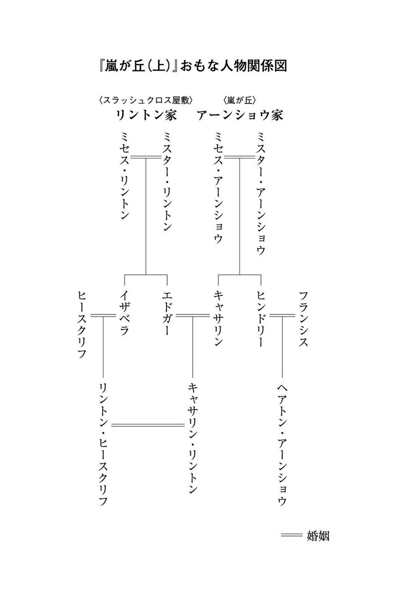

| 嵐が丘（上） | |
| Ｅ・ブロンテ | |
| (2010) | |
嵐が丘（上）
Ｅ・ブロンテ
小野寺健訳
Title: WUTHERING HEIGHTS
1847
Author: Emily Brontë
◎ご注意
本作品の全部または一部を無断で複製、転載、改竄、公衆送信すること、および有償無償にかかわらず、本データを第三者に譲渡することを禁じます。
個人利用の目的以外での複製等の違法行為、もしくは第三者へ譲渡をしますと著作権法、その他関連法によって処罰されます。

第一章
一八〇一年──いま家主に挨拶に行って、帰ってきた──これからはこの男以外、かかわりをもつ相手はいない。それにしても、この土地は美しい！ イングランドじゅうを探してみても、ここまで完全に騒がしい世間から隔絶されている場所は見つかるまい。まさに人間嫌いの天国だ──そして家主のヒースクリフ氏は、この荒涼たる世界を私とわかちあうには絶好の相手だ。とびきりの男ではないか！ 私が馬で乗りつけたとき、彼の黒い瞳が眉毛の下でいかにもうさんくさそうに光り、私が名乗ると、彼の手がぜったい握手をさせまいとするようにチョッキの下に深く隠れるところを見たとき、私がどれほど胸を熱くしたか、彼には想像もつかなかっただろう。
「ヒースクリフさんですね？」私は言った。
彼はうなずいただけだ。
「ロックウッドです、こんど家をお借りした。さっそくご挨拶に伺ったのは、私がスラッシュクロス屋敷のお屋敷を拝借したいとしつこくお願いしたために、ご迷惑をおかけしたのではないかと思ったからで。昨日うかがったところでは、ほかにもいろいろお考えがあったようですから──」
「スラッシュクロス屋敷は、私のもちものだ」彼は不機嫌に私の言葉をさえぎった。「めったなことでは、他人に迷惑などかけさせたりはせん──まあ、入んなさい！」
この「入んなさい」という言葉を吐いたとき彼の口は閉じられていて、「死んじまえ！」とでも言いたそうな気持ちが露骨に見てとれた。彼がもたれている木戸さえも、この言葉とは裏腹に、開こうとはしなかったのだ。だがこの成り行きが、彼の招待を受ける決心をさせたのだと思う。私は、この自分もかなわないほど思い切り愛想がなさそうな男に、興味をもった。
私の馬の胸がじゃまな門扉を押しているのに気がついた彼は、チョッキの下から手を出して鎖をはずすと私の先に立って盛り土をした道をむっつりと歩きだしたが、中庭に入ると大声で叫んだ。
「ジョウゼフ、ロックウッドさんの馬をおあずかりするんだ。それからワインをもってこい」
「たぶん、ここの召使はいまの男だけなんだな」彼が一度に二つの指図をしたので、私は見当をつけた。「それでは、敷石の隙間には雑草が生えているのも、生垣の手入れも牛にまかせるほかないのも不思議はない」
ジョウゼフは威勢がよく筋骨もたくましかったが、もういい歳の男というより老人、それもひょっとすると大変な老人かもしれなかった。
「神さま、助けてくだせえ」彼は私の馬をあずかりながら、不機嫌そうに低くつぶやいた。そればかりか、私の顔を見ている表情がひどく苦りきっているのでかわいそうになった私はおそらく神の助けがなければ昼飯も消化できないのだろうし、いま口をついて出た信心深そうな言葉も、思いがけない私の訪問とは無関係なのだろうと、善意に解釈してやった。
「嵐が丘」というのは、ヒースクリフ氏の住まいの名前だ。「嵐の」（ワザリング）というのはこの地方特有の言葉で、家の位置のせいで吹きつける強い風が家にぶつかって渦を巻くのを指すのだ。たしかにこんな高台では、四季を問わず、身もひきしまるような爽やかな風が吹いていることだろう。崖を越えて吹いてくる北風の強さは、屋敷のはずれに生えているいじけた二、三本の樅の木が極端に傾いでいるのを見ても、痩せこけたサンザシの群生が、太陽の恵みに憧れるかのようにそろって手足を一方向へのばしているのを見ても見当がつく。さいわい、この屋敷を建てた建築家には、ここを頑丈に造るだけの眼力があった。壁にあけた窓は奥ふかく狭く造ったし、家の四隅は、大きな石を突き出して守っていたのだから。
私は屋内へ入ろうとしてふと足を止め、家の正面の壁に彫られているグロテスクな彫り物をまじまじと眺めた、なかでも玄関のドアの周辺一面に彫られている彫り物に、目をうばわれた。さらにその上へ目を移すと、いまにも崩れそうなギリシャ神話の怪獣グリフィンや真っ裸の小さな男の子がたくさん散らばっているのにまじって、「一五〇〇年」という年号と、「ヘアトン・アーンショウ」という名前があるのが読めた。ここは二言、三言感想を口にして、不機嫌な顔をしている家主からこの屋敷のかんたんな歴史を聞きだしたいところだったが、戸口に立っている家主の態度は、さっさと入るか、いっそ引き上げてくれとでも言っているようだったし、これ以上ご機嫌を損じて奥の院を見せてもらい損ねてはと思ってやめておいた。
一歩入ると、控えの間も廊下もなくて、いきなり家族の居間だった。この辺の人たちは、ここをとくべつに「うち」と呼ぶ。そこは台所と客間兼居間でもあるのが普通なのだが、「嵐が丘」では台所はどうやら完全に反対側の隅に追いやられているらしく、少なくとも私の耳には、ずっと奥の方で人がしゃべっている声と、鍋釜がガチャガチャいう音が聞こえてきた。それに、ものすごく大きな暖炉のまわりには煮たり焼いたりした痕もなければ、シチュー用の鍋や錫の濾器が壁に下がって光っているわけでもない。もっとも部屋の片隅にはばかでかいオーク材の戸棚があって、シロメ（１）の大皿が何列も何列も暖炉の光と熱を反射してギラギラ光っているし、銀の水差しや大ジョッキも、これまた何列も天井までとどけとばかりにならんでいる。この天井は内張りなどされたことがなく、見上げると吊り下げてあるカラスムギのパンや牛の腿肉、羊肉、ハムなどで木造の構造が隠れている箇所以外は、骨組みがまる見えだった。暖炉の上の方の棚には、さまざまな種類の汚れた古い銃、それに馬上で使うピストルが二丁、さらに装飾のつもりだろうか、けばけばしい色のお茶の缶が三つ並べてある。床はすべすべした白い石だった。背もたれの高い椅子はどれも素朴な造りで、緑色に塗ってある。一、二脚、どっしりと黒いのが陰に隠してあった。食器棚の下部のアーチ型のくぼみには、ものすごく大きなこげ茶色の雌のポインターが寝そべっていて、子犬の群れがくんくん鳴きながら母犬をとりまいていたが、ほかの家具の陰にも別の犬の群れが居すわっていた。
室内も家具も、北国の頑固な顔をした素朴な農園主のものとしては、ごく平凡だと言えそうだった。彼の頑丈そうな手足は、膝までのズボンにゲートルという恰好だと引き立った。泡立っているエールのマグを目の前の丸いテーブルに置いて、自分専用の肘掛け椅子にどっかと腰を下ろしているこういう男なら、この丘陵地帯のどこでもいいが、五、六マイル以内でかならず見つかることだろう。夕食のあとという絶好の間さえまちがえずに出かければ。だが、ヒースクリフ氏には、その住まいにしても生活の型にしても、妙にぴったりこない感じがあったのだ。一見したところでは色が黒くてジプシーのようなのに、服装や立居振舞いは紳士、つまり、どこにでもいる地方の地主型の紳士なのである。少々だらしのない感じがするとは言えるかもしれないが、身なりにかまわないと言っても、べつにおかしいところがあるわけではない。何しろ堂々たる体格で、顔立ちもよいのだから。だが同時に、なんとなく陰気な感じがするのだ。それにあまり育ちがよくないせいで傲慢なのでは、と思う人もいるかもしれない。しかし、そのとりつくしまのなさは、派手な感情の表現、つまりお互いの親切心を口にしたりするのを嫌うところからきていると思うのだ。私には彼が、愛するにせよ憎むにせよ、とにかく表には出さず、自分などが愛されたり憎まれたりするのを期待するのは、いわば非礼にあたると考えていること──それが直感的に分かるのだ──いや、これはいささか早計にすぎるだろうか──これではあまりにも安易に、自分自身の性格を彼に押しつけていることになるだろう。ヒースクリフ氏が、知人と自称する手合を近づけたがらないのは、私のそれとは似ても似つかない理由からかもしれない。私は、変人と言われてもいいほど変わっているらしいからだ。母はいつでも、お前は温かな家庭はもてないねと言っていたが、ついこの夏にも、まさにそういう資格のなさを立証してしまったのだから。
私はある海岸のリゾートで好天の一ヵ月を幸せにすごしていて、じつに魅力的な女性と遭遇したのだった。私の目には、天使としか思えなかった。その女性が私になど目もくれなかったあいだは。私はその愛を「口に出して語ることはけっしてなかった」［シェイクスピア『十二夜』］。しかし、それでももし目が言葉の働きをするのなら、どんな愚か者でも、私がのぼせあがっていることくらい見抜けただろう。彼女もとうとう気がついて、視線を返してきた──これ以上は考えられないと思えるほど、甘く切ない表情だった。そこで私はどうしたか？ 恥をしのんで白状すれば、彼女の視線に出会うたびに、どこまでも氷のように冷たくよそよそしくなっていき、カタツムリさながら自分の殻のなかにちぢこまってしまったのだ。そしてついに純真無垢な女性はついに自分の判断を疑いはじめ、どうやら自分の勘違いだったらしいと考えて、狼狽したあげく母親を口説いて引き上げてしまったのだった。
こういう妙な性質のために、私は故意に冷酷な態度をとる男だという評判をとってしまったのだが、それがどれほど不当なものかがきちんと分かっているのは、私一人なのだ。
家主が暖炉の一方の端にすわったので、私は向かい合って腰をおろすと、黙っているのも気づまりなので、母犬をなでてやろうとした。ところが母犬は子犬たちを放り出して唇をうしろに引き、白い歯をむきだして、嚙みつこうとよだれをたらしながら、いつのまにか狼のように私のふくらはぎの後ろまでちかづいていたのだった。
私がなでようとすると、犬はのどの奥で長々と唸った。
「その犬には、かまわんほうがいい」ヒースクリフ氏も犬におとらぬ唸り声で言うと、それ以上獰猛なまねはさせまいと、足で一発犬を蹴とばした。「こいつは甘やかされたことがないんでな──ペットとして飼っているわけじゃないから」
そう言うとヒースクリフ氏はつかつかと脇の戸口へ行って、また怒鳴った。
「ジョウゼフ！」
ジョウゼフは地下室の奥でぼそぼそと返事をしたが、一向に上がってくる気配がない。主人の方がとびこんでいくと、私は獰猛な雌犬と、毛足が長くて恐ろしい顔をした牧羊犬二匹とにらみあいになってしまった。牧羊犬も雌犬とおなじで、私の一挙手一投足に油断なく監視の目を光らせている。
奴らの牙にかかるのは嬉しくないのでじっと座っていたものの、声を出さずにからかってやるくらいならまず分かるまいと思って、この三匹にさかんにウィンクしたり、しかめっ面をしてみせたりしたのが運のつき、百面相のどれかがよほど母犬の癇にさわったのか、とつぜん怒り狂って私の膝にとびついてきた。私はそれを突きとばすと、いそいでテーブルを挟んで立った。この対応策が、蜂の巣をつついたような騒ぎを招いた。大きさも年齢もさまざまな六頭四本足の悪鬼が、隠れた巣から部屋のまんなかへとびだしてきたのだ。どうやら自分の足の踵と上着の裾が、とくに攻撃目標として狙われているらしかった。比較的大きな敵は暖炉用の火かき棒で何とかかわしたが、この騒ぎを静めるには、この家のだれかに大声で助けをもとめるほかなくなってしまった。
ヒースクリフ氏と下男が、地下室からの階段を上がってくる足取りは、腹立たしいほどぐずぐずと、のろかった。暖炉の方では嚙みついたり吠えたり、嵐の状態だというのに、二人はふだんより一秒でも早く来ようとはしなかったと思う。
さいわい台所の者がもう一人、とんできてくれた。ながい部屋着の裾をはしょり、腕まくりをした、頰の真っ赤な威勢のいい女が、フライパンをふりまわしながら騒ぎのまんなかへ跳びこんできてくれたのだ。そしてこの武器にくわえて見事な雄弁をふるうと、嵐は魔法をかけたようにしずまり、主人が登場したときには烈風のあとの海のようで、胸を弾ませていたのは台所の女だけだった。
「いったい、何事だ？」ヒースクリフ氏は訊いて、私を見たが、その目つきには、こんなひどいもてなしを受けたあとでは、私もいささかがまんがならなかった。
「何事だなどと、よく言えるな！」と、私はぼやいた。「悪霊に憑かれた豚の群れ［ルカの福音書、第八章］だって、お宅の犬ほど悪質じゃないんじゃないかな。これでは、客を虎の群れに放りこんでおくようなものだ！」
「こいつらだって、何もしない人間にはかまわないはずだが」彼はそう言うと私の目の前にボトルを一本置き、テーブルを元の位置にもどした。「見張りをするのは、犬の仕事だからな。ワインを一杯どうだい？」
「いや、けっこう」
「嚙まれはしなかったな？」
「嚙まれていたら、そいつに焼印を押してやったよ」
ヒースクリフは表情をゆるめて、にやりと笑った。
「まあ、まあ、ロックウッドさん、大分頭にきているね。さあ、少し飲みなさい。この家は、客人はまったくと言っていいほどないもんだから、正直に言って、私も犬も、もてなし方というものを知らないのだ。では、あんたの健康を祈って！」
私は一礼して乾杯した。そろそろ、駄犬どもの行儀が悪いくらいで、いつまでもふくれっ面をしているのも愚かしいという気になっていたのだ。それに、これ以上この男の笑いものにされるのも、おもしろくなかった。相手の気分は、そういう方向へ向かいはじめていたから。
彼の方でも──おそらくせっかくの借家人を怒らせるのは愚かしいという、分別にうながされたのだろう──粗雑な言葉遣いのぶっきらぼうな話しかたを、わずかながらあらためて、私が関心をもちそうな話題、つまり私が隠棲することにした屋敷の利点や欠点について話しはじめた。
こういう話題になると彼はきわめて聡明だったので、辞去する時間が来たときには、私は調子にのって明日もまた伺いたいとさえ言ってしまった。
彼はあきらかに、私がまた押しかけるのを望んではいなかった。私は行くつもりだ。驚いたな、あの男にくらべると自分がこれほど社交的に思えるとは。
１ 錫を主とした鉛などとの合金。 （本文に戻る）
第二章
昨日は午後から霧が出て、寒かった。私は、荒地一面のヒースと泥沼をかきわけて嵐が丘まで行くより、書斎の暖炉の側で過ごそうかという気になっていた。
ところが、正餐をすませて（というのも私の正餐は十二時と一時のあいだになっているからで、この屋敷の一種の備品としてついてきたおばさんくさい家政婦は、私の正餐は五時にしてほしいという要求が分からないのか、分かりたくないらしいのだ）そんな不精なことを考えながら二階へあがり、一歩書斎に足を踏み入れてみると、ブラシや石炭入れがちらかっている真ん中に、女中が膝を突いて山のような石炭殻を暖炉の火にかけて消し、地獄さながらにもうもうと灰を舞い上がらせている最中だった。これを見た私は、すぐ引きかえした。そして帽子をかぶると、四マイルの道のりを歩いてヒースクリフ邸の庭にたどりつくと、間一髪で吹雪の前触れの、羽毛のような雪がはらはらと落ちてきた。
あの荒涼とした丘の頂では土は黒い霜で凍てつき、手足は吹く風にひとつのこらず震えた。私は門の鎖をはずすこともできないまま門はとびこえ、両側にグズベリーが生えている敷石道を走っていって、入れてくれとドアをノックしたのだが、返事はない。ついには指の関節が痛みはじめ、犬たちも吠えだした。
「何て連中だ！」私は思わず腹のなかで毒づいた。「こうつむじまがりじゃ、誰ともつきあいがなくって当然だ。すくなくとも私は、日中から閂を掛けておいたりはしない──かまうものか──入ってやるぞ！」
私は腹をきめると、閂をしっかり摑んで猛烈に揺さぶった。渋い顔をしたジョウゼフが、納屋の丸い窓から頭をつきだした。
「何の用だね？」彼は怒鳴った。「旦那なら羊小屋だがね。旦那と話があるんなら、納屋の端をまわっていきなよ」
「家の中には、誰か戸を開けてくれる人はいないのか？」こっちも負けずに大声を出した。
「若奥さんだけだがな。あんたが晩方までいくらガンガンやってたって、開けてくれやしねえよ」
「なぜだ？ 私のことを奥さんに知らせてくれたっていいじゃないか、ジョウゼフ」
「まっぴらだね。おれは余計な世話は焼かねえ」それきり、彼の頭はひっこんでしまった。
吹雪が激しくなってきた。私はもう一度やってみようと、閂の取っ手をしっかりつかんだ。そのとき背後の庭に、コートも着ずに熊手をかついでいる若い男が現れた。若者はついてこいと声をかけてくれたので、そのあとから洗濯場を抜け、石炭置場、ポンプ、鳩舎がある石畳のところを通りぬけると、ようやく大きくて暖かな、明るい部屋にたどりついた。昨日通された部屋だった。
そこは石炭に泥炭、それに薪もまぜた火がごうごうとあげる炎に赤々と照らされていた。そして夕食がたっぷりならべてあるテーブルの側には、そのときまでそんな人がいようとは考えもしなかった「若奥さん」がいるのを見つけて、私は嬉しくなった。
私は一礼すると、彼女が座れと勧めるのを待った。だが、彼女は椅子の背にもたれたまま私を見ただけで、それきり身じろぎもせず黙りこくっている。
「ひどい天気ですね！」、と私は言った。「奥さん、使用人たちがああのんびりしていては、ドアだって傷んでしまいますよ。何しろノックの音が届かないので、入れてもらうのにひと苦労しました！」
彼女はあいかわらず口をひらかなかった。私が見つめていると──彼女の方でも見つめた。とにかく、彼女がじっと私を見つめてはいるのだが、その目は冷たく無関心で、こちらはひどくおちつかず、不愉快でならなかった。
「座れよ」若者がぶっきらぼうに言った。「あいつはすぐ帰ってくるから」
私はその言葉にしたがった。そして咳払いをすると、猛犬ジューノウ（２）を呼んだ。二度目の謁見なので、お前のことは知ってるぞという印のつもりか、恐れ多くも尻尾の先をほんのわずかにうごかしてくれた。
「みごとな犬だ」私はまた口をひらいた。「子犬たちは、手放すおつもりですか、奥さん？」
「あたしの犬じゃないわ」この愛くるしい女主人の返答は、ヒースクリフもおよばないほど、とりつくしまのないものだった。
「ああ、お好きなのはこっちなんですね」私は猫みたいなものがたくさんかたまっている、クッションらしきものの方を向いた。
「変なものがお好きなのね」嘲るような言い方だった。
まずいことに、それは兎の死体の山だった──私はもう一度咳払いをして、椅子を炉端に近づけるともう一度、今夜はひどい天気だと、さっきの言葉をくりかえした。
「出かけてきたのがまちがいよ」彼女は立ち上がって、炉棚の上にある色塗りの二つのお茶の缶に手をのばした。
座っている位置のせいで、彼女はそれまでは陰になっていたのだが、このときは体全体から顔つきまではっきり見えた。体はすらりと細く、どうやら少女の域を脱したかどうかというところだった。惚れ惚れするようなスタイルで、顔も小さく、これまで一度も拝んだことがないほどきれいだった。目鼻立ちはすべて小づくりで、抜けるように色が白く、亜麻色、いや金髪といってもよい巻き毛がほっそりした首筋にはらりとかかっている。そしてその瞳──これでもし感じのよい表情をしていたなら、その魅力にはとうてい勝てなかっただろう──すぐに心を揺さぶられる私にとって幸いだったのは、その瞳にはなぜかそれにふさわしくない、嘲笑と一種の絶望感のあいだで揺れている感情しか見てとれなかったことだった。
お茶の缶には彼女の手はとどきそうになかったので、私は手伝おうとして腰をうかしかけた。すると彼女は、まるで守銭奴が金をかぞえていると誰かが手を出そうとでもしたときのような勢いで、私をふりかえった。
「よけいなことをしないで」彼女はぴしゃりと言った。「自分でとれます」
「これは失礼」私は思わず答えた。
「お茶（３）にお招きしたの？」こざっぱりした黒のフロックの上にエプロンをかけ、ポットにスプーン一杯の紅茶の葉を入れかけた手をとめて、彼女は訊きただした。
「ご馳走になれれば嬉しいですが」と私は答えた。
「ですから、お茶にお招きしたの？」彼女はくりかえした。
「いや」私はあいまいに微笑した。「貴女が呼んでくださってもいいわけですがね」
彼女はお茶の缶からスプーンから、すべてをまた放りこむように元へもどすと、額に皺を寄せて、赤い下唇をつきだした、泣き出しそうな子供そっくりの機嫌の悪い顔で、さっきと同じ椅子にすわってしまった。
そのあいだ、あの若い男はみすぼらしいとしか言いようのない上着を肩にひっかけて暖炉の前にすっくと立ち、私たち同士がまるで不倶戴天の仇と思ってでもいるように、私を横目でにらんでいた。これはほんとうに使用人なのかどうか、分からなくなってきた。着ているものや言葉遣いも下品で、ヒースクリフ夫妻にはたしかに感じられる品位など、ひとかけらもない。カールした茶色の分厚い髪はもじゃもじゃで、櫛をつかった形跡もなく、髯が熊のように頰全体を覆い、その手は作男のように真っ黒に日焼けしている。それでいて挙措動作は傲慢と言ってもいいほど悠然としていて、この屋敷の奥方に仕える態度にも使用人らしいまめまめしさはまったくないのだ。
身分をつきとめる手がかりがない以上、彼の不可解な態度は気にしないのがいちばんだろうと判断したのだが、それから五分もするとヒースクリフが現れたので、私はある程度この居心地のわるい状態から解放された。
「やあ、約束どおり伺いましたよ」私はいかにも元気そうな声をあげた。「しかし、どうやら三十分は吹雪で動きがとれそうにありません。それだけ休ませてもらえますか」
「三十分？」彼は衣服についた白い雪片を払っていた。「わざわざ吹雪のさかりに出て、うろつくつもりか。沼地で迷子になる危険だってあるぞ。この荒地にくわしい連中でも、こんな晩にはよく道に迷うんだ。それに、この天気はとうぶん変わらないね」
「お宅の若い人のなかから、だれか道案内を貸してもらえませんか。その人には私のスラッシュクロス屋敷に泊まってもらえばいいわけですから──一人、拝借できませんかね」
「いや、だめだろうね」
「そんな！ よろしい、それなら自分の知恵にたよるほかはない」
「うーむ」
「お茶をいれないのか」みすぼらしい上着の若者が、獰猛な視線を私から若い夫人へ移して、きびしく言った。
「この人にも飲ませるの？」彼女はヒースクリフに伺いを立てた。
「いれてやればいいじゃないか」彼は答えたが、その言い方があまりにも野蛮だったので、私はぎょっとした。その口調からは、腹の底まで邪悪な性質がはっきりうかがえたのだ。私はもう、ヒースクリフのことをすばらしい奴だと言う気持ちなど失くしていた。
お茶の支度ができると、彼は私を誘って「さあ、椅子を前にお出しなさい」と言った。あの粗野な若者もまじえてみんながテーブルをかこみ、厳粛な沈黙のなかで食事をした。
私は、自分がこの重苦しい雰囲気の原因だとするなら、自分にはそれを吹き払う義務があると思った。この家族が毎日、こんなにむっつりと黙って座っているはずがない。それにどれほど気難しいのか知らないが、毎日こんなしかめっ面をしていられるはずもなかった。
「ふしぎなものですね」、私は一杯目のお茶を飲んでしまって、もう一杯お代わりをもらうあいだに、口をひらいた。「ふしぎなものですよ、私たちの好みも考え方も、習慣しだいで決まってしまうというのは。ヒースクリフさん、大抵の人には、あなたのようにこれほど世間から隔たった生活をなさっているのが幸福だなどとは、想像もつかないでしょう。しかし、私に言わせれば、ご家族にかこまれて、あなたのご家庭と心をしっかり握っていらっしゃる、優しい奥さまがおいでになるのですから......」
「優しい奥さまだと！」彼は、悪魔の嘲笑とでも形容したくなる表情になって、私の言葉をさえぎった。「そんな女がどこにいるんだ──優しい奥さまっていうのは？」
「あなたの奥さん、ヒースクリフ夫人のことですよ」
「ああ、そうか──何を言う！ あんたは妻の霊が『救いの天使』の位について肉体が消えてしまった今も、この嵐が丘の屋敷の運命を守ってくれているとでも言いたいのか？」
私は自分が大失敗をしたのに気がついて、何とかとりつくろおうとした。この二人は、夫婦だろうと考えるにはあまりにも年齢が離れていることくらい、分かってもよかったのに。男の方は四十がらみ、今まさに精神の活力にあふれていて、若い女に恋して結婚するようなあほらしいことなど考える年齢ではない。そんな夢は、呆けてきたときのための慰めではないか。相手は十七にも見えなかったのだ。
するとそのとき、ふと頭にひらめいた──「私のすぐ後ろにいて、洗面器でお茶を飲み、手も洗わずにパンを食べているうすのろが、この娘の夫なのではないか。むろん、ヒースクリフの息子というわけだ。まるで生き埋めにされているような生活を送っていれば、こういう結果になる。彼女はただただ、もっとましな男がいるのを知らないばかりに、こんながさつな男に身をまかせたのだ！ かわいそうに──私が現れたために、彼女にその選択を後悔させたりしないように、気をつけなくてはならない」
こんなことを考えては自惚れだと思われるかもしれない。だが、そうではない。私の隣人になった男は、かろうじてがまんできるかどうかというほどやりきれない男だったが、私の方は、それまでの経験から考えると、女にはかなりもてたのだから。
「そのヒースクリフ夫人というのは義理の娘でね」というヒースクリフの言葉は、私の推測をうらづけてくれた。彼はそう言いながら、何とも言えない目つきで彼女を見た。顔の筋肉が、他の人とはちがって魂の言葉を語らないほどねじれているのなら別だが、そうでなければそれは憎悪の表情だった。
「ああ、そうでしたか──やっと分かりました。あのやさしい妖精をわがものになさっている幸せな方は、あなたなのですね」私は言って、隣にいる男をふりかえった。
これは、なおさらまずかった。あの若者は真っ赤になり、いまにも襲いかかってきそうな顔をして、片方の拳をかたく握りしめたのだ。しかし、まもなく落ち着いたらしい。烈しい呪詛の言葉で封じ込めようと、私のことをぶつぶつと罵っていたが、それは聞かないことにした。
「見当ちがいなことばかりだな！」この家の主人は言った。「われわれはどっちも、あんたの言う妖精を自分のものになどしてはいない。この女の亭主は死んだのだ。義理の娘だと言っただろう。つまり、私の息子と結婚したのさ」
「で、この若い人は──」
「むろん、息子じゃない！」
ヒースクリフは、自分をこんな熊みたいな男の親にするとは冗談もいいかげんにしろとでもいうように、またうっすらと笑った。
「俺はヘアトン・アーンショウっていう者だよ」男は呻くように言った。「あまり、バカにしないでくれないかな！」
「べつに失礼をした覚えはありませんがね」私は、相手の偉そうな名乗りかたに腹の中で笑いながら答えた。
彼があまりいつまでも見つめているので、私は横っ面をはりとばしてやりたくなったり、心中の笑い声を聞かれてはまずいなどと思ったりして、それ以上はにらんでいられなくなった。自分が、この幸せな家族のなかで浮いているような気がしたのだ。重苦しい感情が勝ってきた。室内をつつんでいた心地よい暖かさが消えたなどという程度ではない。私はもう二度と、この家の梁の下にのこのこ入ってくるようなことはすまいと心にきめた。
食事の席がすんでも誰一人愛想のよい言葉など口にしないので、私は天気の様子を見に窓際へ行った。
やりきれない眺めが目に入った。まだ宵の口だというのに早くも闇が訪れて、空と長くつらなる丘とが、渦巻く烈風と息づまるような猛吹雪のなかでひとつに融け合っている。
「これでは、道案内なしでは、とても帰れない」私は、はっきり言わずにいられなかった。「道はもう雪に埋まっているだろう。たとえ埋まっていなくても、踏み出す足もろくに見えまい」
「ヘアトン、あの十二頭の羊を納屋へ追い込んでおけ。一晩中囲いの中へ置いとこうもんなら、雪に埋まっちまうだろうからな。それから、奴らの前に板を立てておけ」ヒースクリフは言いつけた。
「私はどうすればいいですかね？」一段と苛立ちを深めて、私は言葉をつづけた。
これにたいする返事はなかった。そこでふりかえってみると、見えたのはただ、犬の餌の粥をいれた桶をはこんできたジョウゼフと、ヒースクリフ若夫人が暖炉の火にかがみこみ、お茶の缶を元の場所にもどそうとして暖炉の上から落ちたマッチの束を暇つぶしに燃やしている姿だけだった。
ジョウゼフは桶を下に置くと部屋の中のあらさがしにかかりしゃがれ声でわめきだした。
「みんな外へ出てったってのに、よくもそんなとこに突っ立ってられるもんだ。だけど、おめえはうすのろだから、言ってみたってはじまらねえ──性悪なとこは治らねえからな。いいから、さっさと悪魔んとこへ行っちめえ。おっ母さんの後を追ってよ！」
一瞬、私はこの罵詈雑言を私にあてつけたものだと思ってかっとなり、老いぼれの悪党を外へ蹴り出してやろうと、一歩そっちへ踏み出した。
けれどもその足は、ヒースクリフ夫人の一言で止まった。
「この恥っさらしな、猫っかぶり爺！」と、彼女は言い返したのだ。「お前は悪魔の名前なんか出して、体ごとさらわれちゃっても怖くないの？ 言っとくけど、このあたしを怒らせない方がいいわよ。怒らせたりしたら、あたしが特にお願いして、おまえをさらっていただくようにしてやるからね。お待ち、いいかい、ジョウゼフ」彼女は追いかけてそう言うと、本棚から黒く細長い本を一冊抜きとった。「あたしの黒魔術の腕がどのくらい上達したか、見せてあげるから──あたしはもうじき、これを完全に習得できるのよ。あの赤い牝牛が死んだのだって、偶然じゃないわ。お前のリューマチだって、天罰だなんて考えないことだね！」
「ああ、恐ろしや、恐ろしや！」老人は喘いだ。「神さま、わしらを悪魔からお救いくだせえ！」
「だめだよ、神さまには見放されてるんだから！ お前は見捨てられたのよ──出てお行き。さもないと、ほんとうにただじゃおかないから。蠟や泥でお前そっくりの人形をつくって、呪ってやるよ。そして、あたしのきめた限度を最初に超えた人間はどうなるか──今は教えないけれど──でも、すぐに分かるわ。出てお行き、お前からは目を離さないからね！」
かわいい魔女が、見せかけだけでも、美しい目に悪意の表情をうかべてみせると、ジョウゼフは心底から震えあがって祈りはじめ、「恐ろしや、恐ろしや」とつぶやきながら飛び出していった。
私は彼女のふるまいを、退屈しのぎのようなものだと思っていたから、これで二人だけになると、私の窮状の方に関心を向けてもらおうと夢中になった。
「奥さん」私は真剣な声を出した。「お手数をかけますが──そのお顔からも、奥さんはやさしい心の方としか思えませんのでね。ぜひ、私が家へ帰る道標になるものを教えてください。あなたがロンドンへ行く道をご存知ないように、私にはどこを行けばいいのか、まったく分からないのです！」
「来たときの道をいらっしゃいな」彼女は蠟燭を片手に体を椅子に沈めると、膝の上にさっきの細長い本をひろげた。「かんたんなお返事だけど、これ以上確かなことは言えないわ」
「では、私が沼か雪の穴にはまって死んでいるのを発見されても、あなたは良心がとがめて、自分にも少しは責任があると思ったりはなさらないのですか」
「どうして、そういうお話になっちゃうの？ あたしがお送りするわけにはいかないわ。ここの人たちは、庭の塀までだって、あたしを行かせてはくれないわよ」
「あなたが！ こんな晩に私の都合で、あなたに家から外へ出てくれなんてお願いできやしませんよ」私は大声をあげた。「私は、道を教えてくださいとお願いしてるんです。案内しろというんじゃありません。あるいはヒースクリフさんに、道案内をつけてくださるように頼んでもらえませんか」
「誰を？ ここにはヒースクリフと、アーンショウと、ジラにジョウゼフにあたし、それしかいないのよ。だれがいい？」
「農場に若い人はいませんか」
「いないわ、それで全部」
「では、私は泊めてもらうしかないな」
「それはここの主人と決めてちょうだい。あたしは関係ないわ」
「これに懲りて、もう、この辺の山をやたらにうろつかないことだな」台所口で、ヒースクリフのきびしい声がした。「ここに泊まるというが、ここには来客用の部屋はない。泊まるんなら、ヘアトンかジョウゼフと一緒のベッドに寝てもらうんだな」
「この部屋の椅子で寝かせてもらえばいい」私は答えた。
「いや、だめだ！ 金持ちだろうが貧乏人だろうが、他人は他人──私の監視がとどかないときに、この屋敷の中をうろつかせるわけにはいかん」無礼なごろつきは、こう応じた。
この侮辱で、私の忍耐は限度にたっした。私は彼を口汚くののしってその脇をすりぬけ、庭へとびだそうとしたが、そこで勢いこんだあまりヘアトン・アーンショウとぶつかってしまった。真っ暗なので、どこが出口なのかも分からない。ぐるぐるまわっていると、またあの二人の礼儀正しいやりとりが聞こえてきた。
はじめは、若者が私の味方をしてくれそうに聞こえた。
「おれが猟場まで送っていこう」と、彼は言ったのだ。
「どこへでも勝手に行っちまえ」と、主人──だか誰だか分からない男の声が怒鳴った。「だが、馬の面倒は誰が見るんだ、え？」
「馬なんか一晩くらいほっといたって、人ひとりの命の方が大事だわ。だれかが行かなくちゃならないわよ」意外にも、ヒースクリフ夫人がつぶやいた。
「余計な指図をするな！」ヘアトンがやりかえした。「あいつを大事にしたいんなら、おとなしくしている方がいいぞ」
「それなら、あの人の霊があんたにとりついてくれるように祈るわ。それにヒースクリフさんも、あの屋敷は人に貸したりしないで、廃墟にしちゃえばいいのよ」夫人の口調は激しかった。
「それ、それ。若奥さんがまた呪っていなさるぞ！」私がちかづいたとき、ジョウゼフはつぶやいていた。
彼は全員の声が聞こえる場所に座って、角灯の明かりをたよりに牛の乳をしぼっていたのだ。私はやにわにその角灯をつかむと、明日返させるからと怒鳴って、いちばん手近な裏門めざして駆け出した。
「だんな、だんな、あの男が角灯をかっぱらったよ！」老人は走っていく私を追いかけながら、大声をあげた。「それ、ナッシャー、それ、行け！ それ、ウルフ！ あいつを捕まえろ！」
小さな扉が開いたとたん、二頭の毛むくじゃらな怪獣が、私ののどに跳びかかってきて組み伏せ、角灯の明かりも消してしまった。ヒースクリフとヘアトンがそろってあげた哄笑が、私の激怒と屈辱感の仕上げをした。
さいわい、犬どもは生身の私をむさぼるより、前足をのばしてあくびをし、尻尾をふる方がよかったらしい。とは言え、こちらが立ち上がるのを許してはくれなかったから、私は彼らの性悪な主人たちから解放してもらうまで、倒れているしかなかった。やがて、帽子も失くした私は怒りに身を震わせながら、悪党どもに向かって早く外へ出せと命じ──あと一分このままにしておいたらどうなると思う──などと、訳のわからない脅し文句をたてつづけにならべたのだが、その憎しみのかぎりない深さは、リア王の味がした。
私はあまりにも激しい興奮から大量の鼻血を流したが、ヒースクリフはそれでも笑っていたし、私のほうもあいかわらずわめいていた。もしもかたわらに私より冷静で、この屋敷の主人より情の深い一人の人間が現れなかったなら、この場はどんな結末を迎えていたことだろう。現れたのはジラ、つまり恰幅のよい家政婦がこの怒鳴りあいは何事かと、とうとう様子を見に出てきたのだ。ジラは、数人がかりで私を殴っているものと思ったのだった。だが、まさか主人を責めるわけにはいかないものだから、その怒声の銃火は若いならずものに向けられた。
「まあ、アーンショウさま。このつぎには何をなさるおつもりかね！」彼女は声をあげた。「ご自分の家の門のとこで、人殺しをする気かね。あたしにゃ、この家は勤まらねえ──この若い人を見てごらん、息もつけずにいるじゃねえの。さあ、もうこんなことはやめて、中へ入って。あたしが手当てをしてあげるから。さあ、じっとしてんだよ」
こう言うなり、彼女はいきなり私の首筋に氷のように冷たい水をかけて、台所へひきずりこんだ。ヒースクリフ氏もついてきたが、さっきまでの珍しい陽気さはたちまち消えて、いつもの陰気な顔にもどっていた。
私はひどい吐き気がしたし、目がまわって気が遠くなりかけていた。そこで否応なしに、ヒースクリフ氏の家に泊まることになった。彼は私にブランデーを一杯飲ませろとジラに命じただけで、あとは奥の部屋へ入ってしまった。ジラは、ひどい目に遭ったねと言って慰めてから、主人の言いつけどおりブランデーをもってきてくれ、おかげでいくらか生気をとりもどした私をベッドへ案内してくれた。
２ ギリシャ神話でジュピターの猛妻。最高位の女神。 （本文に戻る）
３ 往々にしてお茶と夕食をかねた、いわゆるハイティ。 （本文に戻る）
第三章
階段を上がりながらジラは、蠟燭の火は隠して音も立てないようにと勧めた。というのも、旦那さまはこれから私を案内する部屋については妙な考えにとりつかれていて、あまり人を泊めたがらないからだというのである。
私はその理由をたずねた。
知らない、と彼女は答えた。彼女がこの家へ来たのはわずか一、二年前にすぎなかったのだ。しかもあまりつぎつぎに妙なことが起こるので、いちいち詮索する気にもなれないというのだ。
私自身もぼおっとしていて詮索する意欲もなかったから、ドアを固く閉めると、ベッドはどれかと室内をぐるりと見まわした。家具調度といえば、椅子が一脚、衣装棚が一つ、それにとても大きなオーク材の箱が一つあるだけだったが、この箱は、上蓋に近いあたりに乗合馬車の窓のような四角い穴があいていた。
この箱に近づいて中をのぞいてみると、奇妙な造りの昔風の長椅子であることが分かった（４）。家族一人一人が部屋をもたなくてもすむ、とても便利な造りだ。じっさい小部屋と言ってもよく、はめこまれている窓枠の張り出した部分はテーブルとしても使える。側面の、鏡板を張った引き戸を左右にあけて蠟燭を片手に中へ入り、また引き戸を閉めてしまうと、ヒースクリフにせよ誰にせよ、寝ずに私を見張っていても安全という気がした。
蠟燭を置いた張り出し窓の棚の隅には数冊、黴の生えた本が積んであって、その表紙の板の塗料を塗った箇所は引っかき傷だらけだった。だが、この引っかき傷というのが大小さまざまで書体もさまざまなのに、なぜなのだろう、同じひとつ名前のくりかえしなのだ──キャサリン・アーンショウという名前なのだが、ところどころ、これがキャサリン・ヒースクリフになり、さらにキャサリン・リントンになっている。
私はけだるくものうい気分で窓枠に頭をのせ、キャサリン・アーンショウ──ヒースクリフ──リントンと、その綴りを追っているうちに、やがて瞼が閉じてしまった。だが、二つの目は五分と閉じてはいず、闇の中で白い文字が亡霊のようにぎらぎら光りはじめたのだ。辺り一面に、キャサリンという文字がひしめいていた。しつこくつきまとうこの文字を一掃しようとして目を開けてみると、蠟燭の芯が黴臭い本の一冊の方に倒れかかり、室内は焦げた子牛皮の臭いがした。
私は蠟燭の芯をみじかく切ると、寒さとしつこい吐き気でひどく気分が悪いので、座りなおして傷んだ大きな本を膝の上にひろげた。それは小さな活字で印刷された聖書で、ひどく黴臭かった。見返しの頁に──「キャサリン・アーンショウ蔵書」という文字と、四分の一世紀はさかのぼる古い日付が書きこんであった。
私はこれを閉じて、別の一冊を、さらにもう一冊をとりあげ、けっきょく全部を調べてしまった。キャサリンの蔵書は粒選りのものばかりで、ひどい傷み方を見れば、よく使っていたことはあきらかだった。その目的は、かならずしも本来のものではなかったとしても。ほとんど全ての章に、ペンとインクによるコメントの書きこみ──すくなくともそれらしいもの──があって、印刷機がのこしたわずかな余白を埋めつくしていたのだ。
それだけで完結した文章もあった。子供っぽい下手な字で書いた、日記の体裁のものもあった。初めて見つけたときには大よろこびしたにちがいない後ろの余白の頁の上の方で、わが友ジョウゼフ君の乱暴だが力のこもったカリカチュアに出会ったときには、大笑いしてしまった。
キャサリンという未知の女性についての関心が心の中に、たちまち燃えあがると、私は、即座に彼女の色あせた象形文字の解読にとりかかった。
「ひどい日曜日！」似顔絵の下の文章は、そうはじまっていた。「お父さまが生き返ってくださらないかしら。ヒンドリーがお父さまの代わりだなんて、嫌だ──ヒースクリフにたいする仕打ちだってひどすぎる──ヒースクリフとあたしは謀反を起こそうと思っている──あたしたちは今夜、その第一歩を踏みだした。
今日は一日中どしゃぶりだったので、教会へは行けなかったから、ジョウゼフがミサのためには、みんなを屋根裏にあつめなくてはならなかった。そのあいだ、ヒンドリー兄さん夫婦は、階下の暖炉の側でぬくぬくと温まっていたが──聖書なんか、まちがいなく、読んでいなかったにきまっている──ヒースクリフとあたしと、畑仕事をしているあのかわいそうな男の子は、祈禱書をもって屋根裏へあがるように言いつけられ──小麦袋の上に一列に座らされて、呻いたり震えたりしながら、ジョウゼフも震えないかな、そうすれば自分も寒いからお説教も短くなるだろうなどと思っていた。でも、これははかない望みだった！ ミサはきっかり三時間つづいたのだ。それでも兄さんは、あたしが降りてきたのを見ると、図々しく言ったわ。
『何だ、もうすんだのか！』
昔は、日曜の晩には、大騒ぎさえしなければ遊ぶのを許された。ところが今では、ちょっとしのび笑いをしただけで追い払われてしまう。
『ここには主人がいるってことを忘れてるのか』と、暴君のヒンドリー兄さんは言う。『おれを怒らせた奴は、たちまち痛い目に合うぞ！ しゃべらずにおとなしくしていろ。おい、小僧、今の犯人はお前だな。フランシスや、側を通るついでにそいつの髪の毛をひっぱってやれ。そいつが指をパチンとやったのは聞こえたんだ』
フランシス義姉さんは本気で作男の髪をひっぱると、夫の側へ行って、その膝に座る。そして二人は何時間も、まるで赤ん坊同士のようにキスをしたり、くだらないおしゃべりをしたりしている──こっちが恥ずかしくなるような、ばかばかしいおしゃべりだ。
あたしたちは食器戸棚の下のアーチ型になっているところにもぐりこんで、やっと寒さをがまんした。あたしがみんなの上っ張りをつないで、カーテン代わりに戸棚の下にぶらさげたちょうどそのとき、ジョウゼフが厩の仕事のことでやってきた。彼はあたしが作ったものを引きちぎってあたしの頰をはりとばし、しゃがれ声をはりあげた。
『旦那さまの葬式もすんだばっかだし、安息日はまだすんじゃいねえし、さっきの福音書の言葉だってまだ耳から消えてねえはずなのに、よくも座りこんで遊んでなんかいやがるな。恥知らずな悪がきどもが。読みゃあためになる本がいっぱいある。さあ、座んな。そいで、おめえたちの魂について考えろ』
ジョウゼフはこう言うと何の役にも立たない本をあたしたちに押しつけて、暖炉から遠く離れた、それでも火の薄明かりでどうにか本が読める辺りにむりやり座らせた。
あたしには、とてもそんなことをする根気はない。あたしは汚らしい聖書の背をつかむと、ためになる本なんか大嫌いと怒鳴って犬小屋へ放りこんでやった。
ヒースクリフも、自分の聖書を同じ場所へ向けて蹴とばした。
これで、大騒動になった。
『ヒンドリーの旦那』と、あたしたちの家付き神父は叫んだものだ。『旦那、来てくだせぇ。キャサリン嬢ちゃんは〈救いの兜〉［エペソ書、第六章］の背中をとっちまうし、ヒースクリフは〈滅びへの道〉［マタイの福音書、第七章］のさいしょの巻を蹴っとばしたんですぜ！ 何て怖ろしいこった、あいつらにこんな真似をさせといちゃ。ええ、大旦那さまだったら、あいつらをたっぷり鞭でお打ちになってるところだろうに──その大旦那も亡くなっちまって』
ヒンドリー兄さんは炉端の天国からとんできて、あたしたち二人の一人は襟がみを、もう一人は腕をつかんで裏の台所へほうりこんだ。ジョウゼフは、そこにいりゃあ、かならず悪魔がさらいに来るぞと断言した。あたしたちはすっかり安心してそれぞれ別々の隅にかくれると、悪魔が来るのを待つことにした。
あたしはこの本とインク瓶を本棚からとって、明かりを入れるためにドアを少し開け、もう二十分くらい書いた。でも仲間のヒースクリフは辛抱ができなくて、乳搾り女のコートをくすねて身を隠し、沼地を駆けまわろうと言い出す。楽しい話だけれど──しかしそうなると、もしあの気むずかし屋の爺さんがもどってきたら、自分の予言が的中したと思うかもしれない──雨の中でだって、ここにいる以上にびしょびしょと、寒い思いをしやしない」
キャサリンはこの案を実行したのだろう。つぎの文章では話題が変わって、彼女は涙っぽくなっている。
「ヒンドリー兄さんにこんなに泣かされるなんて、考えもしなかった！」と、書いているのだ。「頭が痛い。枕にのせていられないほどだ。それでもあきらめられない。かわいそうなヒースクリフ！ ヒンドリーは彼のことを捨て子だと言って、あたしたちといっしょには座らせないだけでなく、もう食事もいっしょにさせない。しかも、あたしにいっしょに遊んではいけないと言って、もしその言いつけを破ったらヒースクリフをこの家から追い出すとおどすのだ。
そのうえお父さまがヒースクリフをあまやかしたのがいけないと言って、お父さまの悪口まで言う（よくも言えたものだ）。そして、ヒースクリフを正当な身分に落としてやるのだと宣言し──」
本の頁がかすんできて、私はこくりこくりとしはじめた。目はいつのまにか、手書きの書きこみの箇所から活字の箇所へ移っていた。タイトルは赤い飾り文字で......『七の七十倍の赦しと、最初の七十一［マタイの福音書、第十八章］。ギマーデン・スフの礼拝堂におけるジェイベス・ブランダラム師の説教』とあった。そしてなかばもうろうとしながら、ジェイベス・ブランダラム師がこの題でおこなった説教はどういうものだろうと頭を悩ましていた私はばったりベッドに倒れて、眠ってしまった。
ああ、これは不味いお茶と癇癪のせいだ！ 夜が明けるまでこんなに苦しい思いをさせられた原因は、ほかには考えられない。私は、苦しみというものを知って以来、他にこの夜の苦しみにくらべられる苦しみを知らない。
自分がどこにいるのか分からなくなりだしたところで、夢を見はじめた。朝だとばっかり、思っていた。そしてジョウゼフを道案内に、わが家へ向かっているのだった。道には厚い雪が積もっていた。それをかきわけかきわけ進んでいきながら、巡礼の杖をもってこなかった、とたえず連れに責められて、私は腐っていた。その杖がなければいつまでも家に入れない、というのだ。そして自分の握りの太い棍棒を自慢そうにふりまわす。巡礼の杖とは、その棍棒のことらしかった。
一瞬、私は、自分の家へ入れてもらうのにそんな武器が必要だなどバカバカしいと思った。だが別の考えが頭に閃いた。私たちは、家へ帰ろうとしているのではないのではないか。あの有名なジェイベス・ブランダラム師の説教を聞きに、出かけていく途中なのではないか。「七を七十倍するほど」という聖書の一節をめぐる説教だ。ジョウゼフ、ブランダラム牧師、あるいは私の三人のうち誰かが「最初の七十一番目の罪」までを犯してしまったために会衆の前でそれをあばかれ、破門されることになるのだ。
二人は礼拝堂まで来た。じつを言うと、ここは散歩の途中、二、三度通りかかっていた。二つの丘にはさまれた浅い谷に建っている。谷と言っても沼地に近いごく浅いもので、泥炭質の沼地の湿気は、この辺に埋められた数少ない死体の防腐剤として絶好だと言う。礼拝堂の屋根はいまのところ無事だったが、神父の年俸はわずか二十ポンドで二部屋しかない建物は、今にも壁がくずれて一部屋になってしまいそうな有様だったからここの司祭になろうという聖職者などいそうになく、その上さいきんの噂だと、ここの信徒たちは、神父の禄をふやすために一ペニーでも自分の懐から出すくらいなら神父に餓死してもらった方がいいと思っているというのだから、なおさらのことだ。しかし、私の夢のなかのジェイべス・ブランダラム師の許へは、熱心な信徒が大勢つめかけていた。彼の説教は、いやはや、何という代物だ！ 四百九十部に分かれていて、その一部一部が普通の説教一回分の長さで──しかも一部一部で、それぞれ異なる罪について論じるのだから！ いったいどこでそれだけの罪を探してきたのか、見当もつかない。彼には、「七の七十倍」という言葉について彼独自の解釈があって、信徒はひとつの過ちを犯すごとに、また別の罪も犯すということらしかった。
その罪というのがじつに妙なもので、私などそれまで想像したこともない、おかしな破戒の罪なのである。
私はまったく疲れてしまった。身をもがき、あくびをし、居眠りをしてははっと目をさました！ 自分をつねったり、つついたり、目をこすったり、立ち上がってはまた座り、ジョウゼフを小突いて、万一この説教が終わることがあったなら知らせてくれ！ と頼んだ。
不幸にも、私はさいごまで聞く運命だった──神父はついに「最初の七十一番目の罪」まで到達したのだ。この山場でとつぜん、私をあるインスピレーションが訪れた。私はこらえきれずに立ち上がると、ジェイベス・ブランダラム師こそ、クリスチャンならぜったいに赦しえない罪をおかした罪びとだと弾劾した。
「きみ」と私は呼びかけた。「私はここの四つの壁にかこまれたまま、休む間もなくきみの議論の四百九十項目というのを、辛抱して聞いてきた。七の七十倍の回数、私は帽子をひっつかんで出て行きかけたのだが──きみは七の七十倍、私を座らせておくという暴挙に出た。四百九十一回目となったら、もう限界だ。ここにおいでの犠牲者の皆さん、この男をやっつけなさい！ 説教壇からひきずりおろして、こっぱみじんにしてやりなさい。『ふたたびその家に帰ることはなく、住みかもまた、彼を忘れてしまう』［ヨブ記、七章、十節］ようにしておやりなさい！」
「その男はあなただ！［サムエル後書、十二章、七節］」ジェイベスは、おごそかな沈黙ののち、クッションにもたれて叫んだ。「あなたは七の七十倍、大口をあけてあくびをした。七の七十倍、わしはわが魂に問うてみた──見よ、これは人の弱さの表れだ、これもまた赦されるがよいとな！ ところが七十一回目が来た。兄弟たちよ、この男に『定められた裁きをせよ、これは、主の慈しみに生きる人の光栄である』［詩編、一四九篇、九節］」
この結びの言葉とともに、全会衆は一丸となって、それぞれの巡礼の棍棒をふりかざしながら私に殺到してきた。身を守る武器など何ひとつもっていない私は、いちばん身近にいて、いちばん猛々しく襲いかかってきたジョウゼフの棍棒を奪ってやろうと、とっくみあいをはじめた。大群衆のあいだを何本もの棍棒がとびかい、私を狙ったものが他の人間の脳天に命中した。やがて礼拝堂内は、叩く音、叩き返す音で割れんばかりになり、だれもが自分のすぐ側にいる相手をなぐっていた［創世記、十六章、十二節］。ブランダラムもただ突っ立っている気にはなれずに、説教壇の板を夢中で叩いたので、その音の激しさにやっと目を覚ました私は、言うに言われぬ安堵感をあじわった。
だが、なぜあんな大騒動の夢を見たのだろう？ ブランダラム師はあの喧騒のなかでどういう役割を演じたのだろう？ その音はただ、唸りをあげて吹いている風で樅の枝が格子窓を叩き、乾いた丸い実がかたかたとガラスにあたっている音だったのである！
私はほんの一瞬、信じられずに耳を澄ましたが、目が覚めた原因が分かって寝返りを打つととろとろと眠って、また夢を見た。それは何と、前よりもさらにやりきれない夢だった。
こんどは自分がオーク材の箱の小部屋で寝ていることも分かっていたし、突風の音も、雪が吹きつける音もはっきり分かっていた。樅の太い枝がくりかえしたてるうるさい音もよく聞こえて、その原因も分かっていた。だがあまりにも耳ざわりなので、できることなら黙らせてやろうと決意して、起き上がり、窓の掛け金をはずそうと躍起になった──はずなのだ。ところが掛け金は留め金具にハンダ付けされていた。眠る前には気がついていたのに、忘れてしまったのだ。
「それでも、あの音はとめてやる」私はつぶやくと拳でガラスを叩き割り、うるさい枝をつかもうと外へ手をのばした。だが私の指がつかんだのは枝ではなく、小さくて氷のように冷たい手の指だったのだ！
悪夢の猛烈な恐怖が、私を襲った。腕をひっこめようとしてもその手は私の手にしがみつき、陰惨そのもののすすり泣きが聞こえた。
「あたしを中へ入れて──ねえ、入れて！」
「だれだ？」私はその手をふりきろうともがきながら、訊いた。
「キャサリン・リントンよ」震え声が答えた（私はなぜリントンだと思ったのだろう？ それよりは、アーンショウという字の方を二十倍も目にしていたのに）。「帰ってきたのよ。沼地で迷子になっちゃったの！」
その声を聞いていると、窓の向こうに子供の顔がぼんやりうかんだ──私は恐怖のために残酷になった。どうしても相手をふりきれないと知ると、その手首を割れたガラスに押しつけて、流れる血がベッドをぐっしょり濡らすまで、前後にうごかしたのだ。それでも、悲しげな声はやまなかった。「中へ入れて！」そしてまだ手をかたく握ったままどうしても放さないので、私は恐怖に気が狂いかけた。
「できないじゃないか？」けっきょく私は言った。「まず手を放してくれよ、入れてほしいのなら！」
つかんでいた指がゆるむと私はパッとガラスの穴から自分の手をひっこめ、いそいでそこへピラミッド型に本を積みあげると、悲しげな訴えをしめだそうとして耳をふさいだ。
私は十五分以上も、こうして耳をふさいでいたと思う。ところが、耳から手を離したとたん、また、あの暗く悲しい叫び声が聞こえてきたのだ！
「消えろ！」と、私は怒鳴った。「ぜったい入れてやらないぞ、二十年たのんだって！」
「二十年よ」悲しい声は訴えた。「二十年、あたしはさまよっていたの！」
そのとき外でかすかにひっかくような音がして、積みあげた本の山が、押されたようにうごいた。
私は飛び起きようとしたが、手足一本うごかせないので、恐怖のあまりついに大声をあげてしまった。
この叫び声が夢でなかったのには、狼狽させられた。慌しい足音が、私の部屋のドアにちかづいてきたのだ。誰かが勢いよくドアを開けると、ベッドの頭の方にある四角い窓から一筋の光が射してきた。私はベッドに座って震えながら額の汗をぬぐっていた。闖入者は躊躇しているように見えたが、やがて独り言をつぶやいた。
その男はようやく、ささやくように言った。返事を期待していないことはあきらかだった。
「誰かいるのか？」
自分がいることをはっきり言うのが一番いいと私は思った。言葉の訛りで、男がヒースクリフであることは分かったから、黙っていれば、さらに奥まで探しにくるだろう。
そう思った私は、向きなおって鏡板のドアを開けた──この行動がひきおこした衝撃は、そうかんたんには忘れられまい。
ヒースクリフはシャツにズボンという格好でドアの側に立っていたが、手にしている蠟燭が指までしたたり、その顔は背後の壁と変わらないほど青白かったのだ。そのときオーク材のドアがきしむと、彼はたちまち電気に撃たれでもしたようにとびあがり、蠟燭はその手を離れて数フィート先までふっとんだ。しかも、興奮しきっているために、満足にそれを拾うこともできない。
「泊めてもらった者ですよ」私が大声で言ったのは、彼にこれ以上臆病ぶりをさらけだして恥をかかせたくなかったからだ。「怖い夢にうなされて、つい大声をあげてしまったんです。あなたを起こしてしまって、すまない」
「なんだ、ロックウッドさん、きみか！ まったく人騒がせ......」と言いかけて、家主は手が震えてもっていられない蠟燭を椅子の上に置いた。
「だが、一体誰が、きみをこの部屋へ入れたのだ？」と彼はつづけたが、爪が掌に食い込むほど手を握りしめ、顎が震えるのを抑えようとして、歯を食いしばっていた。「誰なんだ？ 誰だろうと、今すぐこの家から叩きだしてやる！」
「女中のジラですよ」私は箱部屋のベッドからぴょんと床にとびおりて、いそいで服を着た。「そうなさったらいいでしょう、ヒースクリフさん。あの女には、たしかにそのくらいのことをしたっていい。おそらく私をだしに使って、この家には亡霊が憑いている証拠をまた一つ、摑みたかったんじゃありませんか？ まあ、事実──妖怪変化だらけだが！ あなたがここを閉め切っておられるのも、無理はない。こんな化け物の巣窟に泊めてもらって、礼を言う人間なんかいませんな」
「それは、どういう意味かね？」とヒースクリフは訊いた。「それに、どうして着替えなんかしてるんだ。ここへ入ってしまったからには、今夜はおとなしく寝てくれよ。だが頼むから、あんな恐ろしい声は二度と出さないでくれ。喉を搔っ切られでもしたんならとにかく、あんな声はぜったい出さないでくれよ！」
「あの小悪魔が窓から入ってきてたら、私はたぶん絞め殺されていたよ！」と、私はやりかえした。「二度と、あんたのご先祖の手厚いおもてなしに悩まされる気はないね──ジェイベス・ブランダラム師というのは、あんたの母方の親戚なんじゃないか？ それにあの生意気な小娘、キャサリン・リントンと言ったかアーンショウと言ったか、名前はどうでもいいが──あの娘は悪魔の取替えっ子にちがいない──邪悪な魂そのものだ！ この二十年地上をさまよっていたと言っていたが、大罪を犯した当然の罰なんだろう、まちがいないな！」
こう言ったとたん、私はあの本に、キャサリンの名前にからんでヒースクリフの名が出てきたことを思い出した。これは、こうして気がつくまで、きれいに記憶から抜け落ちていたのだった。私は、自分の思慮のなさに赤面した。だが、これ以上この失敗を後悔している心の内は見せないで、いそいでこうつづけた。
「じつは、寝る前にしばらく──」ここでまた、私は口ごもった。「あの古い本に目を通していた」と言うつもりだったのだが、それでは活字の部分ばかりか書きこみまで読んだことがばれてしまう。そこで話を変えて、こうつづけた。
「あの窓の棚のところに引っかいてある名前をたどって、読んでいたんだ。単調なことをやっていれば眠くなると思ってね、たとえば数をかぞえるとかね......」
「どういうつもりで、おれにそんな話をするんだ？」ヒースクリフは激昂していた。「よく、そんなことが話せるな、おれの家の屋根の下にいて！──そんなことを言い出すとは、頭がおかしいんじゃないのか！」彼はこう言うと、怒りのあまり自分の額を殴った。
私はこんなことを言われて、怒るべきなのか弁明をつづけるべきなのか決めかねたが、あまりにもひどいショックを受けているらしい彼が気の毒になって、また自分の夢の話にもどった。キャサリン・リントンという名前には聞きおぼえがなかったのに、何度もくりかえし読んでいるうちに頭にきざみこまれて、奔放な想像力がはたらく夢のなかで人物像ができてしまったのだろうと釈明した。
ヒースクリフは、私が話しているうちに、だんだんにベッド付きの個室の中へ後退していき、ついにはほとんどここに隠れて座りこんでしまった。だがとぎれがちに弾んでいる呼吸音を聞けば、私には、彼がこみあげてくる激しい感情を抑えようと、必死で戦っているのは分かった。
その葛藤の喘ぎに気づいたことを悟られたくなかった私は、わざと騒々しく、なおも身じまいをつづけながら時計を見て、長い夜だ、とつぶやいた。
「まだ、三時にもなっていないのか！ とうに六時にはなっていると思ったのに──この家では、なかなか時間がたたないんだな。われわれは、八時には自分の部屋へひきあげたのだろう？」
「冬には、いつも九時なのだ。そして四時には、かならず起きる」この家の主人は呻くように言った。そして腕の影のうごきから察すれば、涙をぬぐったのだろうと思う。
「ロックウッドさん」彼はまた口をひらいた。「おれの部屋へ来ないかね。こんなに早く下へおりてこられちゃ、じゃまになるだけだ。それに、あんたの子供じみた声で、おれの眠気は吹っ飛んじまった」
「私だってそうさ」こちらも応じた。「夜明けまで庭でもぶらついて、そのあとは失礼する。またお邪魔するんじゃないかという心配はご無用。田舎だろうが、ロンドンだろうが、もう人づき合いの楽しみをもとめる病とは縁が切れたんでね。分別のある人間は、一人で満足すべきものだ」
「それこそ愉快なつきあいだ！」と、ヒースクリフはつぶやいた。「この蠟燭をもって、どこへでも好きなところへ行ってくれ。おれもすぐ行くから。だが、庭はやめた方がいいぞ。犬が放してあるから。それから家の中は──これはジューノウが見張っているから──それに──だめだ、あんたがうろついても大丈夫なのは、階段と廊下だけだよ。しかし、ま、行け！ おれも二分で行く」
私はとにかく素直に部屋は出た。しかし、狭い廊下が通じている先が分からないので、突っ立っていると、心ならずもわが家主が迷信に憑かれている一面を見ることになった。思いがけず、彼の外見の分別臭さの裏を見てしまった。
彼は箱の小部屋のベッドにあがって格子窓をぐいとあけると同時に、わっと手放しで号泣しはじめたのだ。
「おいで！ 入っておいで！」彼はむせび泣いていた。「キャサリン、入っておいで。さあ、入ってくるんだ──もう一度！ ああ、私が心から愛するお前、こんどこそ私の言うことを聞いておくれ──キャサリン、こんどこそ！」
幽霊はしごく幽霊らしく気まぐれで、一向に姿を見せる気配はなかった。ただ、渦を巻いて荒れ狂う雪と風が私の立っているところにまで吹きこんできて、蠟燭の火を消しただけだった。
その号泣ぶりから窺える、あまりにも激しい洪水のような悲しみに同情をさそわれた私は、愚かしいと思うより先に、その場から身を引いた。心の一面では、そもそも聞いてしまったことに腹を立て、一面では自分のこっけいな悪夢のことなど語ったことを悔やんでいたのだ。それこそが、あの苦悶をひき起こしたのだから。ただ、その理由は私の知るところではなかったけれども。
私は用心ぶかく階下へおりて奥の台所へ行き、かきよせてある小さな火で蠟燭にもう一度火をつけた。
何ひとつ動いているものはなく、ただ灰色のぶち猫が一匹、炉辺からそろそろ寄ってきて、不機嫌な声で鳴いた。
半円形のベンチが二つ、ほぼ暖炉をかこむ形でならんでいた。私がその一つに横になると、年寄りの猫（５）がもう一つに上がった。われわれはこの隠れ家に誰も侵入して来ないうちにと、こくりこくりしていたが、そのうちにジョウゼフが屋根裏へ通じている木の梯子をがたがたおりてくる音がした。その梯子は、上げ蓋を抜けて彼の屋根裏部屋につながっているようだった。
ジョウゼフは、炉格子の柵のあいだでちろちろ燃えている程度の小さな炎を不気味な目でじろりとにらむと、猫を椅子から追っぱらい、空いたところへ自分が腰を据えると、長さ三インチのパイプにタバコをつめる仕事にとりかかった。彼の聖域に私がいたりするのは、あきらかに、口にするのさえはばかられる許しがたい行為なのだ。ジョウゼフは黙々とパイプを口にくわえて、腕組みをするとふーっと煙を吐き出した。
私は、彼が何の気がねもなく浸っているこの贅沢に邪魔をしないことにした。彼はさいごの一服を吸いおわると太い溜息をついて立ち上がり、入ってきたときとおなじ厳粛な足取りで出ていった。
つぎに入ってきた足取りは、もっと軽やかだったので、こんどは私も「お早う」と口をひらきかけたもののまた閉じてしまって、挨拶は挫折した。というのも、ヘアトン・アーンショウが、雪かきのための鋤かシャベルを隅の方で探しながら、お祈りでも捧げているつもりなのか、手あたりしだいに何もかも片端から低い声でののしっていたからだ。彼はベンチの背中越しにこっちをちらりと見て鼻の穴をふくらませはしたものの、私にも側にいる猫と変わらず、挨拶することなどまるで考えていなかった。
彼の身支度を見れば、外へ出られるようになったらしく思えたので、私は堅いベンチから立ちあがって彼の後を追おうとした。彼はそれに気がつくと鋤の先で奥の部屋につうじるドアをつついて、居場所を変えたければあっちへ行けというようなことをむにゃむにゃと言った。
そのドアの奥は居間で、すでに女たちが起きて立ち働いていた。ジラはものすごく大きなふいごで煙突に火の粉を吹き上げているし、ヒースクリフ若夫人は炉の側に跪いて、その炎の明かりで本を読んでいる。
夫人は暖炉の熱気をさえぎろうと目の前に手をかざして、読書に没頭しているようだった。本から目を放すときがあるとすれば、火の粉がとんでくると言って女中を叱ったり、ときどき彼女の顔にずうずうしく鼻面をおしつけてくる犬を押しのけるときくらいだった。
ヒースクリフまでいたのには驚いた。暖炉の側でこっちに背を向けて立っていたのだが、ちょうどジラを狂ったように怒鳴りつけていたのが終わったところで、ジラは、かわいそうにときどき仕事の手を止めてはエプロンの裾をもちあげて、憤懣を抑えかねるように呻いていた。
「それに、お前もだ、この役立たず──」ちょうど私が入っていったときには、息子の嫁を、あひるだ、羊だ、バカ、マヌケといった程度の罪のない悪口ながら、ふつうは口にしない言葉で罵倒しはじめたところだった。
「また、くだらねえことをしてやがって！ 他の人間は食い代を稼いでるんだぞ──きさまはおれに食わせてもらうつもりなのか！ 本みたいなくだらねえものは放り出して何か仕事をしろ。いつまでも目ざわりなことをしていたら、いずれその埋め合わせをしてもらうからな──聞いているのか、このすれっからし」
「嫌だって言ってもどうせとりあげられるんだから、棄てるわ」若夫人は本を閉じて椅子の上に放り出した。「でも、あたしは何もしないわよ。いくらあんたがひどい悪態をついたって。自分のしたいことしかしないわ！」
ヒースクリフが手をあげると、口答えをした方はぱっと安全なところへとびのいた。あきらかに、相手の腕力を知っているのだ。
内輪喧嘩など見物するのはまっぴらなので、私は自分も暖炉のぬくもりにあずかりたいだけで喧嘩など目に入らないかのように、素早く前へ出た。二人とも、それ以上の喧嘩はやめる程度の礼節はわきまえていた。ヒースクリフは怒りをこらえて両の拳をポケットにおさめ、若夫人は唇をへの字にまげて、離れた椅子のほうへ行ってしまうと、私が帰るまで、約束を守って銅像と化していた。
それまでは大した時間ではなかった。私は朝食を共にするのを断り、夜明けの光が差してきたとたんに、のびのびした空気の中へさっさと逃げ出した。空は澄みきっていて、吹雪もやみ、空気は手ではさわれない氷のように冷たかった。
まだ庭が切れるところまで行かないうちに家主が大声で呼びとめて、沼地を抜けるところまで送ろうと言ってくれた。ありがたい申し出だった。何しろ丘の背は一面まっしろに波打つ大洋と化していたのだから。盛り上がったり落ち込んだりしている箇所が、地面の起伏と一致しているとはかぎらない──少なくとも、穴がふさがって平らになっている場所はいくらもあるのだ。到るところ盛り上がっていた箇所も、石切り場の跡も、昨日歩いたとき心に描いていた地図からは、きれいにかき消えていた。
私は道の一方の側に、六、七ヤードの間隔でまっすぐに立てられた石の列が、この荒地につづいていることには気がついていた。そのまっすぐに立っている石には、白い石灰が塗ってあって、闇の中でも道標として役に立つようになっていたし、今日のようにどか雪が降って、しっかり造られた道の両側にある深い沼との見分けがつかなくなった場合でも、役に立つはずだった。だがこういうものはすべて、ところどころに黒い点がぽつんぽつんと顔を出している以外すべて消えていて、自分では道の曲折に沿って正しく歩いているつもりでいるときでも、わが友ヒースクリフは右へ左へとたえず警告しなくてはならなかった。
私たちは、ほとんど話さなかった。そしてスラッシュクロス荘園の入り口までたどりつくとヒースクリフは足をとめて、この先はまちがえないだろうと言った。別れの挨拶はあわただしく頭を下げただけで、その先は自分の判断力を頼りにひたすら進んでいった。門番小屋には、まだ誰もいなかったのだ。
門から屋敷までは二マイルだ。しかし、私はそれをおそらく四マイルにしてしまったにちがいない。林の中で迷子になったり、雪のなかへ首まで埋まったりと、経験したことのない者でなくては分からない窮地におちいったおかげで。とにかく、どこをどうさまよったのかは分からないが、家に入ったときには時計が十二時を打った。となると、嵐が丘からの道のり一マイルにつき、正確には一時間かかったことになる。
家付きで雇ってしまった家政婦とそのとりまきたちが、迎えにとびだしてきた。口々に私のことは完全に諦めていたなどと叫ぶ始末で、大騒動だった。誰もが、私は昨夜この世から消えたものと思っていたのだ。そして遺体の捜索にはどうとりかかったものかと、思案していたのだった。
私は、とにかく帰ってきたのだから騒がないでくれと言うと、心臓までしびれてしまった体をひきずって二階へ上った。乾いた服に着替えてから、こんどは室内を行ったり来たり三、四十分も歩きつづけて動物としての体温をとりもどすと、それから書斎へ運んでもらった。だが、子猫のように弱りきってしまった体は、轟々と燃えさかる火も、私を元気にしようと女中がいれてくれた湯気を立てているコーヒーさえも、うけつけなかった。
４ ここで描かれている家具は、ボックス・ベッド（小部屋式ベッド）と呼ばれる、巨大な箱の中に作られた長椅子状の寝台だと思われる。箱の天地側面は木製。正面はスライド式のドアか鎧戸で開くようになっているものが多い。本書の場合、小部屋は屋敷の壁に接していて、小部屋の窓の一つは外に面していると思われる。寝室が一～二部屋しかない家でもプライバシーと暖かさを確保できる。 （本文に戻る）
５ 「グリマルキン」とは猫を呼ぶ一般的名称。特に、牝の老猫を指す。 （本文に戻る）
第四章
まったく中身の空っぽな風見鶏だよ、われわれは！ 社交はいっさい断ち切ろうと決意し、ほとんど暮らせそうにないとさえ思える土地をやっと見つけて、運命の星に感謝していたというのに、それが何という弱気なだらしのなさだろう。暗くなるまでは何とか憂鬱と孤独を相手に戦っていたものの、とうとう白旗を掲げずにいられなくなって、ネリー（６）が夕食をもってきてくれると、ここでの生活に必要なことについて訊くという口実で、食事をしているあいだ側にいてくれないかと頼んだのだ。そのときの私は、彼女がおしゃべりで、私に活気をあたえてくれるか子守唄代わりに寝かせてくれることを、本気で期待していたのだった。
「お前は、ここにはかなり長いんだろう？」と、私は切り出した。「十六年と言ったかな？」
「十八年でございます。奥さまが結婚なさったとき、お世話をするためにまいったのでございますよ。そして奥さまがお亡くなりになったあとも、女中頭として旦那さまが雇ってくださったのです」
「なるほど」
これで話は切れた。ネリーは彼女自身のこと以外となるとお喋りではないのかと、私は心配になった。彼女自身のことなどどうでもいいのだが。
しかし彼女は両手を膝に置いて間を計りながら、その赤ら顔に瞑想の雲をうかべていたと思うと、はじけたように喋りだした──
「あの頃にくらべますと、ご時勢もすっかり変わってしまいました！」
「そうだね」私は相槌を打った。「お前はさぞかし、いろんな変化を見てきたことだろう？」
「はい。それにもめごとも」
（「しめた、家主一族に話をもっていこう！」と、私はひそかに思った。話のきっかけとしては絶好だ──それに、あの美人の若後家のことも。あの女の身の上についてはぜひ聞きたい。この地方の出身なのか、それ以上に考えられるのは、不機嫌な顔をしたこの土地の人間が身内とはみとめようとしない他所者なのか）。
こんな思惑を頭に、私は、ヒースクリフがこのスラッシュクロス屋敷を人に貸して、自分は場所といい建物といいずっと格の下がるところに住んでいるのはなぜなのかと、ネリーに訊いてみた。
「それほど金がないので、この屋敷をきちんと管理しきれないのかね？」私は尋ねた。
「大金持ちでございますよ！」彼女は即座に答えた。「お金持ちです。いくらもっているのか、誰も知りゃしません。しかも、それが年々増えるのです。そうですとも。ここよりもずっと立派なお屋敷にだって住めるお金持ちなのです。でも、けち──締まり屋なのでございますよ。そこで、スラッシュクロス屋敷にお移りになるつもりではいらしっても、いい借り手があると聞けば、また何百ポンドか儲かる機会をのがすようなことは、がまんできないのでございましょう。なぜあれほど欲が深いのか、不思議なことで。この世に一人っきりでいらっしゃるのにねぇ」
「息子がいた──んじゃないのか？」
「はい、お一人──でもお亡くなりになりました」
「で、あの若いご婦人は、息子さんの奥さんというわけだな、未亡人なんだろう？」
「はい」
「どこの出身の人なんだ、もともとは？」
「ああ、あの方は亡くなったあたくしのご主人の、お嬢さまでございますよ。ご結婚前はキャサリン・リントンとおっしゃいました。あたくしの乳でお育てしたのですが。おかわいそうなことです！ あたくしはほんとうに、ヒースクリフさまがここへ移っていらっしゃらないかと、楽しみにしていたのです。そうすれば、またお嬢さまとごいっしょに暮らせたかもしれませんから」
「何、キャサリン・リントン！」私は仰天して声をあげた。だが、ちょっと考えれば、あの幽霊のキャサリンとは違うことに気がついて、「では」とつづけた。「私の前にここに住んでいた人は、リントンというんだね？」
「さようです」
「で、あのアーンショウという人は誰なんだ、ヘアトン・アーンショウという、ヒースクリフさんのところで暮らしている人は？ 親戚なのかい？」
「いいえ、あの子は、亡くなったリントン夫人の甥でございますよ」
「じゃ、あのきれいなご婦人の従兄というわけか？」
「はい、そして若奥さんの亡くなったご主人も、やはりあの方の従弟でした──お一人は母方、お一人は父方というわけです──ヒースクリフさんは、リントンさんの妹さんと結婚なさったのでございます」
「嵐が丘では、玄関のドアの上に『アーンショウ』と彫ってあったが、旧家なのかい？」
「大変な旧家でございますよ。そしてヘアトンさんはそのさいごの子孫、キャサリンお嬢さまがうちの──つまりリントン家の、さいごの子孫なのでございます。嵐が丘へおいでになったのですか？ 失礼して伺いますが、お嬢さまはお元気でしょうか？」
「ヒースクリフ夫人かい？ とても元気に見えたがね。それに、とても綺麗だ。しかし、あまり幸せそうではなかったな」
「まあ！ そうでございましょうねえ！ で、あちらの旦那さまはいかがでした？」
「少々乱暴な男だね、ネリーさん。そういう質なんじゃないのかな？」
「鋸の刃みたいに荒っぽくて、石臼みたいに頑丈な方ですよ！ なるべくかかわりあいにならない方が、よろしゅうございます」
「あんな荒くれ者ができたということは、いろいろと人生の浮き沈みがあったんだろうな。あの人の経歴について、何か知ってるかい」
「人の巣を横取りする、カッコウの人生でございますよ──あたくしは何もかも存じております。ただ、どこで生まれたのか、親は誰なのか、さいしょはどうやってお金を作ったのか──これだけは分かりません。そこへ、羽の生えそろわない雲雀みたいなヘアトンが、放り出されてきたのですから。この教区で自分が騙されたことにも気がついていないのは、かわいそうに、あの子だけでございます」
「では、ネリーさん、この人たちについて少し聞かせてもらえるとありがたいんだがな──寝られそうにないんだよ、ベッドに入ってみても。だから、腰を下ろして、一時間くらい、おしゃべりをしてくれ」
「ようございますとも！ ちょっと縫い物をもってまいりますから、そうしましたら、お望みのときまで、おじゃまいたします。でも、風邪をおひきになりましたね。震えてらっしゃいますよ。お粥でも召し上がって、追っ払っておしまいになりませんと」
善良な女があたふたと出ていくと、私は這って暖炉に近寄った。頭だけは熱く、あとは全身が冷えきっている。その上、神経や脳まで興奮しきっていて、これではバカになりそうだった。おかげで、不愉快な気分でこそなかったものの、それより昨日今日のさまざまな出来事が原因で、わが身に深刻なことが起こるのではないかという、いまだに尾を引いている不安に襲われた。
ネリーはすぐに、湯気の立っている洗面器と裁縫道具の入った籠をもってもどってきた。そして洗面器を暖炉の内側に付いている棚にのせると、椅子を近づけた。私がとても気さくなのをよろこんでいるのがはっきり分かった。
＊ ＊ ＊
このお屋敷へまいります前にはと、ネリーは催促するまでもなく話しはじめた。あたくしはほとんど嵐が丘におりましたのです。母がヒンドリー・アーンショウさま、つまりヘアトンさんのお父さまの乳母だったものですから、いつもあちらのお子さんたちと遊ぶようになったのです。また、使い走りもすれば、干草づくりもいたしましたよ。いつでも農場の近くをぶらついておりまして、何でも言いつけられたご用をしていたのでございます。
ある夏の朝──たしか、そろそろ農作物の穫り入れどきという頃でございましたが──旦那さまのアーンショウさまが、旅支度をなさって二階から降りていらっしゃいました。そしてジョウゼフにその日の仕事の指図をなさったあと、ヒンドリー坊ちゃんと、キャサリンお嬢さま、それにあたくしの方をお向きになって──と言いますのも、あたくしもお二人とごいっしょに、お粥をいただいていたからですが──ヒンドリーさまに、こうおっしゃったのです。
「さて坊や、私は今日リヴァプールへ行くのだが......お前のお土産には何がいいかな？ 欲しいものを言ってごらん。ただ、小さいものにしておくれ。往復とも歩かなきゃならないんでね。片道六十マイルとなれば、大変な距離だから！」
ヒンドリー坊ちゃんはヴァイオリン、とおっしゃいました。旦那さまは、つづいてキャサリンお嬢さまにお訊きになりました。六つにおなりかどうかでしたのに、厩のどの馬でも乗りこなせたお嬢さまは、鞭が欲しいとおっしゃいました。
あたくしのことも、お忘れにはなりませんでした。ときにはとても厳しいこともあったのですが、心根はとても優しい方だったのでございます。あたくしにはポケット一杯のリンゴとナシを買ってきてやろうとおっしゃると、旦那さまは、お子さんたちにお別れのキスをなさってお出かけになりました。
三日もお留守というのは、誰にとってもとても長い感じでしたが、キャサリンお嬢さまなどは、お父さまはいつ帰っていらっしゃるのと何度もお訊きになるほどでした。アーンショウの奥さまは、三日目の夕食までにはお帰りになるだろうと思っておいででしたので、一時間きざみで夕食をのばしていらっしゃいました。ところが、旦那さまは一向にお帰りになる気配がございません。とうとうお子さんたちも、門まで走って様子を見にいくのにも飽きてしまいました──そのうちに暗くなって、奥さまは、お子さんたちを寝かせる時間になったのですが、お子さんたちはまだ起きていたいと、悲しい声でとりすがるのです。そしてちょうど十一時ごろ、ドアの掛け金がそっともちあがって旦那さまが入ってこられたのでした。旦那さまはお体を椅子に投げ出して笑ったり呻いたりなさりながら、誰も側へ寄るな、私は死にそうな目に遭ったよ──こんなに歩くのは、たとえイギリス全土をくれると言っても、二度とごめんだとおっしゃいました。
「おまけに仕上げには、死ぬかと思ったほど驚いたことがあったんだから！」とおっしゃると、旦那さまは両腕に何かをくるんで抱えていらした大外套をおひろげになったのです。そして奥さまに、「いいかい、お前、こんなに驚いたのは生まれて初めてだ。しかし、これも神からの授かりものと考えなくちゃいけない。もっとも、悪魔の子じゃないかと思うほど真っ黒だがね」とおっしゃいました。
あたくしたちは、その周りをかこみました。あたくしもキャサリンお嬢さまの頭越しに覗いてみますと、黒い髪で、ぼろを着た、汚らしい子供でした。もう大きくて、歩くのも話すのも達者で──顔などはキャサリンさまより年上に見えたのですが──立たせてみると、辺りをじろじろ見まわして、誰にも意味が分からないことをくりかえし何度も何度もしゃべるばかりなのです。あたくしは怖くなりました。奥さまなど、この子を外へ放り出しかねない勢いでした。すっかりお怒りになってしまって──この家にも食べさせ、守ってやらなきゃならない子供たちがいるっていうのに、よくもこんなジプシーの小僧なんかつれてこようと考えられますね。この子をどうするおつもりなんです？ 気でもふれたんじゃありませんかとつめよる始末でした。
ご主人は一生懸命、事情を釈明しようとなさいました。けれども、疲労からほんとうに死んだも同然になっておいででしたから、奥さまが怒って怒鳴り散らす合間にかろうじて分かったのは、この子が餓死寸前で、家もなく、リヴァプールの街中で口もきけなくなっているところをお見かけになって抱きあげ、どこの子か訊いてまわったものの──誰一人どこの子か知らない始末だったのだそうで、ところがご主人はお金にも時間にも限りがございましたから、リヴァプールで無駄にお金をつかうよりは、すぐに家へ連れて帰った方がよいとお考えになったのだというのでした。この子をそのまま放り出すわけにはいかないと、心に決めておいでだったからです。
まあ、けっきょく、この場は奥さまもぶつぶつおっしゃりながらもお黙りになると、旦那さまがあたくしに、その子を洗ってやって、お子さんたちといっしょに寝かせてやれとお命じになったのでした。
ヒンドリーとキャサリンは、眺めたり聞いたりしていればそれで満足で、騒ぎはまもなく収まりました。そうなると二人のお子さんは、お約束のプレゼントを探して、お父さまのポケットを探りはじめました。ヒンドリーは十四歳でしたが、ヴァイオリンだったものが大外套のポケットのなかで潰れているのをひっぱりだすと、大声で泣きはじめました。キャサリンの方は、旦那さまが他所の子のめんどうを見ているうちに鞭を失くしてしまったと知ると、愚かな小僧に向かって歯をむき出して怒り、唾を吐きかけたので、お父さまに、お行儀を教えてやるといってしたたかに叩かれるという痛い目に遭いました。
子供たちは、あの子をベッドに入れるのはまっぴら、それどころか部屋へも入れたくないとがんばりましたし、あたくしだってこのお二人以上にもの分かりがよかったわけではございませんから、明日の朝までには消えてくれないかと思って、この子を階段の踊り場に座らせました。偶然だったのか、旦那さまのお声を聞きつけたからか、その子は旦那さまのドアまで這っていって、お部屋から出ていらしった旦那さまに見つけられました。なぜこんなところにいるのだと問いただされては、あたくしも白状しないわけにいかず、卑怯で不人情な奴だというので、このお屋敷からお暇を出されてしまったのです。
これが、ヒースクリフが初めてご一族の中に入ってきたときの事情でございます。それから二、三日後にもどってみますと、というのもあたくしは、追放されたとは言っても永久のものとは思っていなかったからですが、その子にはヒースクリフという洗礼名がついておりました。これは子供のころに亡くなった、旦那さまの息子さんのお名前だったのですが、このとき以来、この子の姓としても名としても使われるようになりました。
キャサリンさまとこの子はすっかり仲良しになりましたが、ヒンドリーさまはこの子がお嫌いで、実を申しますと、それはあたくしも同じでございました。ヒンドリーとあたくしは彼をいじめて、それもお恥ずかしいことですが、ずいぶん調子にのったものでした。と申しますのも、あたくしにもまだ、自分がまちがったことをしていると気づくだけの分別がなく、奥さまも、彼がいじめられているのをご覧になっても、かばうようなことは一切なさらなかったのです。
彼は陰気で、辛抱づよい子供のようでした。意地悪をされて、強くなったのかもしれません。ヒンドリーさまに殴られても瞬きひとつしなければ、涙一粒流しませんでしたし、あたくしがつねっても、うっかり何かにぶつけてしまった、誰のせいでもないとでもいうように、ちょっと息を呑んで目を見張る程度だったのでございます。
こういう風に辛抱づよかったものですから、旦那さまに言わせれば「哀れな父なし子」をご自分の息子さんがいたぶっているところをご覧になると、なおさら激怒なさったのでしょう。旦那さまはなぜか、ヒースクリフをおかわいがりになりました。彼の言うことなら何ひとつ疑わず（この点、彼はろくに口をききませんでしたし、あまり噓はつきませんでしたが）、キャサリンさまよりずっとかわいがっておいででした。キャサリンさまは悪戯っ子で言うことをききませんでしたから、お気に入りにはなれなかったのです。
というわけで、ヒースクリフは初めからお屋敷内に悪感情の種を蒔いてしまったのです。そこで、それから二年とたたずにアーンショウ夫人が亡くなりますと、ヒンドリーはお父さまを自分の味方というより、圧制者だと思うようになり、ヒースクリフのことは、お父さまの愛情と息子の自分のさまざまな特権を不当にうばった相手と見るようになりまして、こういう被害のことを鬱々と考えては、恨みを深めていったのでございます。
あたくしも、しばらくはヒンドリーさまに同情しておりました。しかし、お子さんたちが麻疹にかかってその看病をしなければならなくなり、また同時に女として家事もお引きうけすることになりましたとき、考えが変わりました。ヒースクリフの麻疹は危険な状態でした。そして重態のあいだは片時も、あたくしを枕元から離そうといたしませんでした。おそらく、あたくしがとても尽くしてくれると感じていたのでしょう。仕方なくやっているのではないかと考えるだけの知恵は、なかったのです。それでもこれははっきり申し上げておきますが、看病しているあいだ、あれほどおとなしかった子はほかに見たことがございません。彼と、あとの二人のお子さんの違いを見ておりまして、あたくしは嫌でも、それまでより公平な見方をせずにいられなくなりました。キャサリンさまとその兄には、ほんとうに手を焼きましたのです。ところがヒースクリフの方は子羊のようにおとなしく、文句を言わなかったのです。もっとも、手を焼かせなかったのは強情だったからで、おだやかな性質のせいではなかったのですが。
彼は麻疹を乗りきり、お医者さまは、これにはあたくしの働きが大きいとおっしゃって、看護ぶりをほめてくださいました。ほめられますと、いい気持ちになったあたくしは、そのきっかけになった彼にも優しい気持ちになりました。これでヒンドリーさまは、最後の味方まで失くされたわけでございます。それでもあたくしは、あいかわらずヒースクリフをかわいがる気にはなれませんでしたし、こんな無愛想な子のどこが、旦那さまはあんなにお好きなのだろうと不思議に思っておりました。おぼえているかぎりではあの子は、あれほど可愛がられていながら一度も感謝の気持ちを見せたことがなかったのです。恩人にたいして横柄だったわけではございません。ただ、感じていないのです。自分が旦那さまの心を捕らえていることは充分に分かっていて、自分がもとめさえすれば、お屋敷全体が言いなりになってくれることは承知していたのですが。
たとえば、こんなこともございました。アーンショウさまが教区の市で子馬を二頭買っていらしって、若者二人におあたえになったのです。ヒースクリフが美しい方をとりました。ところが、その子馬はすぐに片脚を傷めてしまいました。それに気がついたヒースクリフは、ヒンドリーさまに──
「おれと、馬をとりかえろよ。おれは自分の馬が気に食わないんだ。もし嫌だと言うなら、お父さんに、お前がおれを今週三回も鞭で殴ったことを言いつけて、肩まで黒くなった腕を見せてやるぞ」と、言ったのです。
ヒンドリーさまは舌を出して、ヒースクリフの横っ面をはりとばしました。
ヒースクリフは「すぐ、とりかえた方がいいぞ」と食いさがりながら、出口の方へ逃げました（二人は厩にいたのです）。「どうせ、そういうことになるんだ。それに、今お前が殴ったことも話せば、利子がついてお返しがくるぞ」とつづけながら。
ヒンドリーさまは「うるせえ、目ざわりだ！」と叫んで、ジャガイモや干草の重量を測る、鉄の分銅でヒースクリフを脅しました。
「投げてみろ」ヒースクリフは突っ立ってやりかえします。「そんなことをすりゃ、お前が、お父さんが死んだらすぐおれをここから追い出すと吹いたって、ばらしちゃうからな。そうすりゃ、お父さんはすぐにお前を追い出すぜ」
ヒンドリーが分銅を投げますと、ヒースクリフの胸にあたって、彼は倒れました。それでも、すぐによろよろ立ちあがって青い顔で息を切らせておりましたから、もしあたくしが止めなかったらそのまま旦那さまのところへ行って、自分がひどい目に遭ったことと相手の名前を明かして、たっぷり復讐をしたことでしょう。
「じゃ、おれの馬をもってけ、ジプシー野郎！」と、アーンショウ家の息子は言いました。「そして首の骨でも折りやがれ。連れてけ、死んじまえ、欲の深い泥棒め！ お父さんをまるめこんで、財産を全部くすねりゃいい。そうなりゃ、お前の正体もはっきりするさ。サタンの手先だってことがな──さあ、この馬を連れてって、お前の脳味噌を叩きだしてもらえ！」
ヒースクリフはすでに馬を解き放ち、自分の厩へ連れていこうとしていました──彼がその後ろを通ったとき、ヒンドリーは演説をやめてヒースクリフを馬の足下に突き倒し、自分の望みどおりヒースクリフが頭を蹴られたかどうかを確かめることもなく、思い切り遠くへ逃げてしまいました。
あたくしは、ヒースクリフがとてもおちついて立ち上がり、気になっていた作業をつづけるのを見てびっくりいたしました。鞍や何かをとりかえた彼は、猛烈に殴られたせいで目まいでもおこしたのでしょう、干草の束の上に座って休むと、それきり家の中へ入っていったのです。
あたくしが、その打撲傷は馬のせいだということにしておきなさいと言ってきかせますと、彼はあっさり承知しました。欲しいものが手に入ったからには、どんな噂を立てられても、ろくに気にしなかったのです。じっさい、こういうもめごとでヒースクリフが文句を言うようなことは、めったにありませんでしたから、あたくしは、あの子は根にもつ質ではないと、本気で思っておりました──完全に騙されたわけでございますが、そのお話はいずれまたということにいたしましょう。
６ ミセス・ネリー・ディーン、エレンなどの呼称も使われるが、本書はネリーで統一した。 （本文に戻る）
第五章
やがて時がたち、アーンショウの大旦那さまはお体が弱ってこられました。いつも活発でご健康でしたのに、それでも急に体力が衰えたのです。それに、炉辺に縛りつけられていらっしゃるとなると、悲しいほど怒りっぽくなられました。何でもないことで、ご自分の権威を軽んじられたのではと疑って腹をお立てになっては、発作でも起こしそうになるのです。お気に入りのヒースクリフに誰かが無理を言ったり、あごで使おうとしたりしたときなどには、これはとくに激しくなりました。ヒースクリフがひどいことを言われはしないかと、ぴりぴりなさっていて、どうやらご自分がかわいがるせいで周囲がヒースクリフを憎み、仕返しをしたがるのだと思いこんでおいでのようでございました。
これは、あの子にとっていいことではありませんでした。あたくしたちのなかでも優しい人たちは、ご機嫌を損じまいとして、大旦那さまがえこひいきをなさるのに調子を合わせましたからあの子は天狗になり、ねじれた性格をつよめてしまったのです。それでも、これには避けがたいような面も出てまいりました。二度か三度、お父さまが側においでになるのに、ヒンドリーさまがヒースクリフをバカにするようなことを言ったので、ご老人が激昂なさったことがございましたが、旦那さまは棒をつかんで打ちすえようとしても、それができない怒りに身を震わせていらしたのです。
とうとう副牧師さんが（その頃はここにも副牧師さんがいて、リントン家とアーンショウ家のお子さんたちを教え、わずかな土地を耕して生計の足しになさっていたのですが）、ご子息は大学へおやりになったらいかがですとお勧めになり、アーンショウさまも賛成なさったのでした。もっとも、お気は進まなかったのですよ、こんなことをおっしゃっていましたから──
「ヒンドリーはどうにもならん、どこをうろついても、ものにはならんだろう」
あたくしは、これで平和になってくれればと心から願いました。大旦那さまがせっかくよいことをなさりながら、かえって辛い思いをなさっていらっしゃると思いますと、やりきれませんでした。歳をとったとおっしゃるのも、ご病気になるのも、ご家庭の不和が原因ではないかと、あたくしは考えておりました──旦那さまも、そうだとおっしゃりたかったでしょうが──ほんとのところは、お体の衰えが原因だったのでございます。
それでもキャサリンと召使のジョウゼフの二人がいなければ、あたくしたちも何とかやっていけたかもしれません。ジョウゼフには、あちらでお会いになりましたでしょう？ あれは昔から、いいえ、たぶんいまでもいちばん小うるさい、ひとりよがりの偽善者で、しじゅう聖書を読みあさっては、都合のよい預言は自分にあてはめ、呪いの言葉は周囲の人たちにぶつけるという男なのです。お説教や信心ぶかいお話のコツがわかるのか、まんまとアーンショウさまを感心させてしまいましてね、旦那さまが弱ってこられればこられるほど、あの男の力は大きくなってきたのでございます。
あの男は旦那さまの魂にかかわること、またお子さんたちをもっときびしく躾けなくてはいけないといったことを遠慮なく言い立てて、旦那さまをなやませました。ヒンドリーさまのことは、神に見放されたどら息子だときめつけさせようとして、来る夜も来る夜も、飽きもせずにヒースクリフとキャサリンさまの悪口をならべたてましてね。しかも、いちばん重い罪はかならず、ヒースクリフよりもキャサリンさまにかぶせて、アーンショウさまの弱みをくすぐることを忘れなかったのでございます。
キャサリンさまにはたしかに、ほかのお子さんには見たことがないほど我のつよいところがございました。あたくしたちはそろって、一日のうちに五十回も、いえ、それ以上、辛抱もここまでという思いを味わったものです。朝起きて下へ降りていらっしゃったときから夜お寝みになるときまで一分でも、お嬢さまが何も悪さをしてはいらっしゃらないと、安心していられるときはなかったのですから。いつも元気そのもので、舌は休むことを知らず──歌ったり、笑ったり、そしてそれにつきあわない相手にはうるさくつきまとうのです。まあ、お転婆で元気のいい、ひょろりとしたお子さんでしたが、瞳はこれ以上ないくらいお綺麗ですし、笑顔はかわいいですし、足取りの軽さは教区中、誰一人かなう者はおりませんでした。しかも、それにはけっきょく悪気はなかったのだと思うのです。と申しますのも、相手を本気で泣かせたりしても、あとできまって側へ寄ってくるので、相手も泣くのをやめると、逆に彼女を慰めるような羽目になったのですから。
彼女はヒースクリフが、それはそれは好きでした。彼女に一番の罰をあたえたいと思うなら、ヒースクリフから引き離せばよかったのです。それでもヒースクリフのせいで、あたくしたちの誰よりも、よくお小言をいただいていました。
遊びとしてとびぬけてお好きだったのは小さな奥さまになることでした。人をぶつのも平気で、遊び仲間をいいように使っていました。あたくしにたいしても同じでしたが、あたくしは叩かれたり指図されたりするのはまっぴらでしたから、ぜったい譲りませんでした。
ところで、アーンショウの旦那さまは、子供の冗談がつうじない方でした。お子さんには昔から厳格で、生真面目だったのです。ところがキャサリンはキャサリンで、お父さまのお加減がわるいと、お元気だったころとちがってなぜご機嫌がわるく、怒りっぽくおなりなのかが分かりませんでした。
お父さまのご機嫌がわるくてお叱りになるとキャサリンはかえっておもしろがって、もっと怒らせてやれという気になります。彼女がいちばんよろこんだのは、あたくしたちにそろって同時に叱られたときで、そんなときには大胆で生意気な顔でぽんぽん言い返すのです。ジョウゼフの宗教臭い叱責の揚げ足をとり、あたくしのことはいじめるという具合なのです。お父さまのいちばん嫌いなことをなさっては、お父さまは正面から受けとめておいでのキャサリンの生意気な態度の方が、相手がヒースクリフとなるとお父さまのお優しい態度よりずっと効き目があるところを見せつけるのです。ヒースクリフはあたしの言うことは聞いても、お父さまの言いつけは気が向かないと聞かないでしょ、というわけでした。一日中、これ以上はむりというほど悪戯をしておきながら、夜になると、その埋め合わせに、べたべたするようなこともございました。
「よせ、キャシー」旦那さまは、いつでもおっしゃいます。「私はお前を愛せない。お前は兄さんより質がわるいよ。あっちへ行って、お祈りをしなさい。神さまにお赦しを願うんだね。お前のお母さんも私も、お前を育てたことを後悔すべきなんじゃないかと思うよ！」
これにはキャサリンも泣き出しましたが、それも、初めのうちだけでした。いつも撥ねつけられているうちにあつかましくなってくると、お父さまにお謝りなさい、そしてお許しをもとめなさいとあたくしが申し上げても、嘲笑うようになったのです。
けれどもついに、アーンショウさまの地上でのさまざまなお苦しみが終わるときがまいりました。アーンショウさまは十月のある夜、炉辺の椅子に腰かけたまま、しずかにお亡くなりになったのです。
強風がお屋敷の周囲で吹き荒れ、煙突のなかで唸りをあげておりました。まるで嵐のような激しさでしたが寒くはなく、あたくしどもはみんな同じ部屋に固まっておりました──あたくしは暖炉からやや離れたところでせっせと編みものをしていましたし、ジョウゼフはテーブルの側で聖書を読んでおりました（当時は召使たちも、仕事がすんだあとでは、たいてい居間にいることを許されていたのです）。キャサリンはしばらく病気だったせいで、静かでした。彼女はお父さまの膝にもたれていましたし、ヒースクリフは彼女の膝に頭をのせて、床に寝そべっていました。
よく覚えておりますが、旦那さまはうたた寝をなさる前に、キャサリンの美しい髪を撫でていらしったのです──彼女がめずらしくおとなしいので、ご機嫌だったのです──そして、こうおっしゃいました──
「お前はなぜ、いつでもいい子でいられないのかね？」
するとキャサリンはお父さまの方にお顔を上げて笑い、こう切り返したのでした。
「お父さまはなぜ、いつでもいい人でいられないの？」
しかしご機嫌を損じたのに気がついたとたん、キャサリンは旦那さまの手にキスをなさると、子守唄を歌ってあげるわとおっしゃいました。そして、ごくごく小さな声で歌いはじめたのです。やがて、旦那さまの指がお嬢さまの指からぽとりと落ち、頭がお胸に沈みました。そこであたくしはキャサリンに、しっ、じっとしていらっしゃいと申しました。お父さまを起こしそうに見えたからです。あたくしたちはたっぷり三十分沈黙しておりましたが、もっとそのままでもよかったのです。ただ、ジョウゼフが聖書の一章を読み終わって立ち上がり、お祈りをすると、お寝みになる時間だから旦那さまを起こさなくてはと申しました。彼は一歩前へ出て旦那さまのお名前を呼び、お肩に触れました。しかし旦那さまは動こうとなさいません──そこでジョウゼフは蠟燭を手にかざしてのぞきこみました。
ジョウゼフが蠟燭を置いてしまったので、何かあったなと思ったあたくしは、左右の腕に一人ずつ子供たちを抱えて、「早く二階へいらっしゃい、そして静かにしているんですよ──今夜はお二人だけでお祈りをなさい──ジョウゼフは用事がありますから」と小声で申しました。
「その前に、お父さまにお休みなさいを言ってからよ」キャサリンは言うと、あたくしたちが止める暇もなく、旦那さまの首にかじりつきました。
おかわいそうに、キャサリンさまにはすぐに、ご自分の失ったものが分かったのでした──彼女は悲鳴をあげました──
「ああっ、死んでる。ヒースクリフ、お父さまが死んでるわよ！」
そして二人は、そろって心も張り裂けよとばかり泣きだしたのでした。
あたくしもご一緒に、抑えようもなく大声で泣きました。しかし、ジョウゼフは、天国に召された聖人さんのことで、そんな大声で泣くのはどういうつもりだと言うのでした。
ジョウゼフはあたくしに、いそいで外套を着てギマトンまで行き、お医者さまと神父さんを呼んでこいと言いつけました。あたくしは、いまさら、どちらも何の役に立つというのだろうと思いました。それでも風雨のなかを出かけて、片方だけ、つまりお医者さまだけは、ご一緒に連れてもどりました。もう一人の方は、夜が明けたら行くということでした。
説明はジョウゼフにまかせて、あたくしは子供部屋へ駆けつけました。ドアは半分開いていて、もう真夜中過ぎだというのに、子供たちがまったく寝ていないことはあきらかでした。それでも前よりはおとなしくなっていて、あたくしが慰めるまでもありませんでした。幼い魂たちはあたくしなど思いもよらない素晴らしいことを考えて、おたがいに慰め合っていたのです。彼らの無垢な話のなかの、美しい天国の図が描ける神父など、世界中どこにもいなかったことでございましょう。すすり泣きながらそれを聞いていたあたくしは、みんな無事にそこへ行きたいものだと願わずにいられなかったのでございます。
第六章
ヒンドリーさまがお葬式に帰っていらっしゃいました。ですが──あたくしたちもびっくりしましたし、ご近所でも到るところで噂になったのですが──奥さんを連れていらしったのです。
どういう方なのか、どこのお生まれなのか、ヒンドリーさまはそういうことをいっさいお教えになりません。おそらく財産もなければ、どうという家名もなかったのでしょう。そうでなければヒンドリーさまが、このご結婚をお父さまに隠しておくとはまず考えられなかったのです。
この女は、ご自分で勝手にお屋敷をひっかきまわすような方ではありませんでした。お屋敷の敷居をまたいだとたん、目に入るものすべて、それに周囲のいろいろな動きも、気に入ったようでした。もっとも、お葬式の準備や弔問客の姿はべつですが。
葬儀がおこなわれているあいだの、この女の態度を見ていまして、あたくしは、この女は少し頭が悪いのではないかと思いました。自分の部屋へ逃げこんでしまって、子供たちに洋服を着せるという仕事があるあたくしを、呼びつけるのです。そして座ってぶるぶる震えながら、両手を握りしめて何度も何度も訊いたのです──
「お客さんたち、まだいるの？」
それからヒステリーでも起こしたようにくどくどと、黒の喪服が目に入ったときの気持ちを話しはじめたのです。そしてはっととび上がるかと思えば、ぶるぶる震え、ついには泣き出す始末に──どうなさったのかとあたくしが訊きますと、分からないという返事です。ただ、死ぬのが怖くてたまらないと言うのでした！
あたくしは、この女もあたくしと同じで、まず死なないのではないかと思いました。やせ気味ではあっても若いですし、顔色もよくて、目などダイアモンドのようにきらきらしているのです。たしかに、階段をのぼるときにはとても呼吸が早くなること、ちょっとした突然の音にも震えだすこと、ときどき妙な咳をすることなどには気がついていました。しかしこういう症状は何の前兆なのか、まったく知らなかったあたくしは、同情する気にもなりませんでした。この辺ではですね、ロックウッドさま、他所者には、先方から打ち解けてこないかぎり、まず心を許さないのでございますよ。
アーンショウの若旦那さまは、三年間のご不在のあいだにかなりお変わりになっていました。前よりもお痩せになってお顔の色もわるく、お口のきき方も身なりも、すっかり違っていたのです。そして、帰っていらしったその日には、もう、ジョウゼフとあたくしに、お前たちはこれからは奥の台所を住処にして、居間はおれに使わせろとおっしゃるくらいでしたから、ほんとうは狭い空き部屋に絨毯を敷き、壁紙も貼りかえて居室にしたかったのでしょう。ところが、奥さんが白い床や、轟々と火が燃えている大きな暖炉、シロメのお皿やナイフ、フォークなどをならべた食器棚、犬小屋、それに一日の大半を過ごす広々していて動きやすい居間がすっかり気に入ってしまったものですから、これで充分だと思ってその案はとりやめにしたのです。
奥さんはまた、新しい妹ができたのにもよろこんで、初めのうちはこの妹のキャサリンとおしゃべりをしたり、キスをしたり、いっしょに駆けまわったり、たくさんプレゼントをしたりしていました。けれども、こういう愛情はながつづきしませんでね、奥さんが機嫌をわるくすると、ご主人のヒンドリーさまは横暴になりました。奥さんが二言三言、ヒースクリフは嫌いという意味の言葉を口になさると、ヒンドリーさまの胸にはそれだけでもう、彼にたいする昔の憎悪が湧き起こってきたのです。ヒンドリーは、ヒースクリフをご自分たちの仲間からはずして召使の身分に落とし、副牧師さまについて勉強していたのもやめさせました。その代わりにむりやり外で労働をさせて、農場の他の作男なみのひどい扱いをなさったのです。
ヒースクリフは、初めのうちは、こうして身分を落とされても辛抱しておりました。それは、キャシーが自分で勉強したことを教えたり、畑でいっしょに働いたり駆けまわったりしていたからなのです。若旦那さまは二人がどんなにお行儀がわるかろうが、何をしていようが、気がつきさえしなければ放っておきましたから、二人がいずれそろって礼儀知らずの野蛮人になることはまちがいありませんでした。日曜日に教会へ行かせるような、心配りさえなさらなかったのです。ただ、二人がミサを休むと、ジョウゼフとあの副牧師に放任ぶりをとがめられた若旦那が、思い出したようにヒースクリフは鞭で打ち、キャサリンにはお昼か夕食を抜くように命じるだけでした。
けれども、二人にとっては、朝から荒野へとびだしていって一日中そこで過ごすのがいちばんの楽しみでしたから、そのあとで罰をうけることなど、お笑い種でしかなかったのです。副牧師がキャサリンにどれほどたくさん聖書の言葉を暗記するように命じようが、ジョウゼフが腕が痛くなるまでヒースクリフを鞭で打とうが、二人はまた一緒になれたとたん、少なくとも何かよからぬ復讐の計画を思いついたとたん、何もかも忘れてしまうのでした。二人が日ごとにますます手に負えなくなっていくのを見ていますと、あたくしは何度も一人で声を上げて泣きました。それでも、一人として味方のない二人にたいして、自分がまだ少しはもっている力まで失ってはかわいそうだと思うと、何ひとつ思い切って言う勇気が出なかったのでございます。
ある日曜日の晩、二人が騒いだとか、ちょっとした叱られるようなことをしたために居間から追い出されてしまったことがありまして、夕食ですよとあたくしが呼びに行っても、どこにも見あたりませんでした。
あたくしたちは、家中を上から下まで、庭から厩まで、隈なく探したのですが、見あたりません。とうとうヒンドリーさまはかんしゃくを起こして、ドアに閂をかけておしまいになり、今夜は誰も二人を家に入れてはならないと、お言いつけになりました。
家中が寝てしまいましたが、あたくしは心配で寝られないものですから、雨が降っているのもかまわず、自分の部屋の格子窓を開けて頭を突き出し、聞き耳を立てておりました。もし二人がもどってきたら、禁止令など無視して入れてあげようと決心していたのです。
そのうちに道を歩いてくるはっきりした足音が聞こえると、門のところで角灯の明かりがひとつ、ちらちらしました。
あたくしは頭からショールをかぶり、二人がノックなどしてヒンドリーさまを起こさないように、とんでいきました。そこにはヒースクリフだけはおりましたが、あとは誰もおりません。あたくしはそれを見て、ぎくっとしました。
「キャサリンお嬢さまはどうしたの？」あたくしは、うろたえて大声をあげてしまいました。「何か事故があったんじゃないでしょうね？」
「スラッシュクロス屋敷にいるよ」と、ヒースクリフは答えました。「おれもあそこに泊まりたかったんだけど、無礼な奴らで、おれには泊まれと言わないんだ」
「お仕置きをうけるわよ」あたくしは言いました。「ここを追い出されなくちゃ、満足できないのね。いったいなぜ、スラッシュクロス屋敷へなんか行ったの？」
「先に、濡れた服を脱がせてくれよ、ネリーさん。そうしたらみんな話すから」と、ヒースクリフは答えました。
旦那さまを起こさないように用心しなさいと言うと、彼は着ているものを脱ぎはじめましたので蠟燭を消さずに待っていますと、いまの話をつづけました──
「キャシーとおれは洗濯場から逃げ出して、のんびりほっつき歩いてたんだ。するとスラッシュクロス屋敷がちらっと見えたんでね、リントン家でも日曜の晩は、子供たちは隅の方で寒さに震えて、親たちは飲んだり食ったり、歌を歌ったり笑ったりして暖炉の火で目を赤くしてるのかどうか、ちょっと覗いてみようということになったのさ。あの家でもそうだと思う？ それとも説教集を読んで、下男に教義問答をやらされて、まちがえると、聖書に出てくるいろんな名前をかたっぱしから覚えさせられたりしてるとか？」
「ちがうでしょうね」とあたくしは答えました。「あそこのお子さんたちはきっといいお子さんですから、あんたみたいに悪さをして、当然のお仕置きをうけたりはしないわ」
「そんな話は聞き飽きたよ、ネリー、くだらねえ！ おれたちは丘のてっぺんから荘園まで、一度も休まずに駆けてったんだ──キャサリンの完全な負けさ。何しろあの子は裸足だったからね。あした、沼地の辺で彼女の靴を探してやってくれよ。おれたちは生垣の破れている隙間から這いこんで、細い道を手さぐりで進むと、応接間の窓の下にあった植木鉢の上にのっかったんだ。そこから明かりがもれてたからよ。よろい戸は開いてるし、カーテンも半分しか引いてない。おれたちはそろって土台に足をかけて、窓枠の出っ張りにしがみついたのさ。すると見えたんだよ──ああ、ほんとに綺麗だったなあ──真っ赤なカーペットが敷いてある素晴らしい部屋さ。椅子もテーブルも真っ赤だし、真っ白な天井には金色の縁取りがしてあって、真ん中からガラスの球が銀のチェーンでいくつもぶらさがってて、蠟燭のあったかい光でキラキラしてた。リントンの夫婦はいなかった。エドガーと妹だけで、居間を全部占領してたんだ。幸せなのはあたりまえだよな。おれたちなら、天国にいる気がしただろう！ さあ、ところがあの『いい子』たちは、何をしてたと思う？ イザベラは十一で、たしかキャサリンの一つ下だと思うんだけど、部屋の向こうの隅に寝ころがってきーきー泣いてるのさ。まるで魔女に真っ赤に焼けた針でも刺されたみたいに。エドガーは暖炉の前でしくしく泣いているし、テーブルの真ん中には小さな犬がいて、足を震わせたり、キャンキャン鳴いてるんだ。これは兄妹げんかを聞いてて分かったんだけど、兄妹でこの犬をうばいあって二つにちぎれそうになるほど引っ張り合ったせいだったのさ。何てバカだ！ あんなことがおもしろいのかな。どっちがあったかい毛の塊みたいな犬を取るかで、喧嘩なんかしちゃって。そしてさんざん取りっこをしたあげく、どっちも泣き出したのさ、どっちもいらないって言い出すんだから。おれたちは、甘ちゃんたちを大笑いしてやったよ。バカにしたね！ おれが、キャサリンの欲しがるものを取り上げるなんてこと、考えられないだろ？ おれたち二人が泣きわめいたり、すすり泣いたりしながら部屋の隅と隅に分かれて床の上を転がってるなんて、ありっこないよな？ おれは千回生まれかわっても、ここでの暮らしとスラッシュクロス屋敷のリントンとこの暮らしを、取っかえようとは思わないね。ジョウゼフをいちばん高い破風から投げとばしてもいい、この家の正面をヒンドリーの血で染めてもいいって言われたって嫌だな！」
「しっ、おやめ！」あたくしは、その悪口を抑えました。「でも、まだ聞いてないわよ、ヒースクリフ。置き去りにされたキャサリンさまは、どうなったの？」
「おれたちは笑ったって、言っただろう」と、彼は言うのでした。「リントン家の兄妹はその笑い声を聞くとそろって矢のようにドアの方へとんでいった。ちょっと、しんとしたと思うと、こんどは『助けて、ママ、ママ、助けて、パパ、ママ、早く来て！ 助けて、パパ！』って怒鳴りだしたんだ。そりゃもう吠えてるみたいな騒ぎだったよ。おれたちは、もっと脅かしてやれと思ってわざと音を立てて、窓枠からとびおりた。誰かが窓の閂をはずす音がしたから、逃げた方がいいという気がしてね。おれはキャシーの手を握って、早く早くってせきたてたんだけど、彼女、とつぜん倒れちゃったのさ。
『逃げて、ヒースクリフ、逃げて！』って、キャシーは叫んだ。そのあと『向こうじゃ、ブルドッグを放したのよ。そいつがあたしに嚙みついてるのよ！』って、小声で言った。
猛犬が、彼女の足首に食らいついてたんだよ、ネリー。ぞっとするような鼻息が聞こえた。キャサリンは、大声なんか出さなかった──出しっこないよ！ 狂った牛の角に引っかけられたって、そんな真似はしやしない。だけど、おれは大声をあげたよ。世界中のどんな悪魔だってへたばっちまうくらい罵ってから、石をひとつ拾って奴の口んなかに突っこみ、喉の奥まで押しこんでやろうとした。するととうとう獣みたいな召使が角灯をもって出てきて、怒鳴った──
『しっかりくわえてろ、スカルカー。放すなよ』
だけど、スカルカーの獲物を見ると召使の声は変わった。犬は大きな紫色の舌を口から半フィートもたらして息を切らせてて、だらんとなった唇から血のまじったよだれをたらしていたんだ。
召使はキャサリンを抱き上げたけど、彼女はぐったりしてた。ぜったいに、怖かったせいじゃない。痛かったんだ。召使は彼女を家の中へはこびこんだ。おれも、罵倒や復讐の言葉をつぶやきながら後についていった。
『獲物は何だ、ロバート』入り口からリントンが声をかけた。
『スカルカーの奴、小さな女の子をつかまえましたぜ』って召使は答えた。『それに、この若造もいやす』おれの腕を摑んだまま、彼はつづけた。『悪の面をしてますぜ！ たぶん、泥棒どもがこの二人を窓から入れといて、家中寝ちまったところでドアを開けさせて一味が中へ入り、やすやすと皆殺しにするって寸法じゃなかったのかね。黙ってろ、口汚ねえこそ泥め。きさまなんざ、これだけでも絞首台行きだ。旦那さま、銃は出しといた方がいいすよ』
『むろんだ、ロバート』と、老いぼれはぬかしたよ。『悪党どもは、昨日がわが家に地代の入る日なのを知っておって、まんまとわしを餌食にするつもりだったのだ。中へ入れ！ もてなしてやる。さあ、ジョン、門の鎖をしっかりかけておけ。ジェニー、スカルカーに水をやれ。治安判事の城へ、しかも安息日に押しかけようとはなあ！ どこまで図々しくなるんだ。さ、メアリー、見てごらん。怖いことはない、ただの小僧だから──しかし、はっきり悪党面をしてるなあ。この面だけじゃなく本性を現わす前に吊るし首にした方が、お国のためってもんじゃないかね』
老いぼれがおれをシャンデリアの下へひきずりだすと、眼鏡をかけておれを見たリントン夫人は、怖がって両手を上へあげたよ。意気地のない子供たちもそっと近寄ってきたけど、イザベラは──
『こわーい。この人、地下室へ入れといてよ、パパ。あの占い師の息子によく似てるじゃないの。ほら、あたしが可愛がってた雉を盗んだ。そう思わない、エドガー？』
みんなでおれをじろじろ見ていると、キャサリンが意識をとりもどした。彼女は今の話のさいごの方を聞いて笑った。エドガー・リントンは疑うようにキャシーを見てたけど、やっと彼女のことを思い出した。教会で会ってるからね。他ではめったに会わないけど。
『これはアーンショウ家のお嬢さんだ！』と、彼は母親にささやいた。『それが、見ろ、スカルカーにあんなにひどく嚙まれて！ 足からとても血が出てるじゃないか！』
『アーンショウ家のお嬢さんですって？ 何を言うの！』って、奥方は叫んだね。『アーンショウ家のお嬢さんが、ジプシーの子とその辺を歩いたりするはずはありませんよ。でも、あら、喪服を着ているわね（７）──たしかだわ──しかも、これじゃ一生足が不自由になってしまうわ！』
『この子の兄さんは、ずいぶん無責任だな』リントンの親父は言うと、おれからキャサリンの方を向いちまった。『シールダーズ（副牧師のことですが）から聞いた話では、完全に異教徒に育っていくまま放ってあるそうだ。だが、この小僧は何だ。お嬢さんは、どこでこんな遊び相手を見つけたんだ。そうそう、これは亡くなったアーンショウ氏が、リヴァプールへ行ったときに見つけてきた妙な代物だよ──インド人の水夫小僧とか、アメリカ人かスペイン人の捨て子あたりだろう』
『とにかく不良ですよ』と婆さんは断言したね。『まともな家に置いとけるような子じゃありません。この子の言葉遣いをお聞きになって、あなた？ 家の子にあんな言葉を聞かせちゃって、ショックですわ』
おれは、これでまた悪態をつきだしちまった──ごめんよ、ネリーさん。だもんで、ロバートが言いつけられて、おれは外へ出されちまった──おれはキャシーと一緒でなきゃ嫌だと言ったのに、ロバートはおれを庭へひきずりだすと角灯を手に握らせて、アーンショウさまにはおれのした悪さを知らせとくからすぐ帰れと言って、またドアをがっちり閉めちまった。
カーテンの一方の端は、まだまとめてあって中を覗けたから、おれはまたスパイをつづけた。もしキャシーが帰りたがっているのに奴らが外へ出さなかったら、大きな窓ガラスをぶち割ってやろうと思ってね。
キャシーはソファにしずかに座っていた。リントン夫人は、おれたちが歩きに出るときに乳搾り女から借りた大きなコートをぬがせて、首を振りふり説教をしてたみたいだよ。キャシーは若いお嬢さんだから、向こうの待遇はおれとは大違いさ。そこへ女中がお湯をいれた洗面器をもってきて、足を洗ってやった。主人のリントンは、タンブラーにワインと甘味をいれて熱いニーガスを作ってやるし、イザベラは大皿にのっていた菓子を彼女の膝にざっとあけてやっているし、エドガーは離れたところでぽかんと口をあけて突っ立ってたよ。そのあと、一家は彼女のきれいな髪を乾かして櫛をいれてやって、とっても大きなスリッパを履かせてから火の側へ連れてって座らせた。あとは彼女が好きなように放っておいたから、キャシーは小さな犬とスカルカーに自分の食べ物を分けてやって、食べているスカルカーの鼻をつまんだりしてた。リントン一家のうつろな青い目にも、元気が出てきた──キャシー自身の魅力一杯の顔が、知らないまにのりうつったのさ──みんな、彼女の魅力にぼーっとなってるのが、一目で分かった。彼女とあいつらとじゃ、くらべものにならねえもんな──地球上の誰とくらべたって上だろう、なあ、ネリー？」
「こんどのことは、あんたが考えてる以上の大ごとになるわよ」あたくしはヒースクリフに毛布をかけてやり、明かりを消しながら申しました。「どうしようもない人だね、あんたは。ヒンドリーさまがかならず、こういうことを断ち切る処置をお取りになるわよ」
あたくしの言葉は、嫌というほど当たりました。二人の向こう見ずな冒険はアーンショウさまを激怒させましたし──つづいてリントンさまが、事を収めるために、翌日にはご自身で訪ねてこられ、ご自分のご家族の統率の仕方について若旦那さまにたっぷりお説教をなさいましたので、ヒンドリーさまも真剣になって、お家のことに気をくばるようになられたのでございます。
ヒースクリフは鞭打ちこそ受けなかったものの、キャサリンお嬢さまに一言でも口をきいたら即座に追放、と言いわたされてしまいました。そして旦那さまの若奥さんは、義妹さまがお帰りになりしだい、監督にあたることになりました。むろん、手管をつかっての話で、力ずくではありません──力ずくでは、とうてい無理でございましたでしょう。
７ キャサリンは、父親が亡くなったため、喪に服している。 （本文に戻る）
第七章
キャサリンは、スラッシュクロス屋敷に五週間、クリスマスまでおりました。そのころには足首も完全に治って、お行儀もずっとよくなっていました。そのあいだには何度も若奥さまがお見舞いにお出かけになり、高級な服を着せたりおだてたりして自尊心を高めるという即効性のある方法で、義妹の再教育を始めていらっしゃり、これにはキャサリンもすぐになじみました。というわけであたくしたちは、帽子もかぶらない自然児そのものの小さな野蛮人が、家へとびこんできてみんなを息もつけないほど固く抱きしめるという場面を予想していましたのに、立派な黒い子馬から降り立ったのは、羽飾りをつけたビーヴァーの毛皮の帽子の下からとび色の巻き毛をたらして、転ばないように長い毛織の婦人用乗馬服の裾を両手でもちあげた威厳のある女性だったのです。
ヒンドリーさまは妹さんを馬から抱き上げながら、とても満足そうに大声でおっしゃいました。
「いや、キャサリン、すっかり美人になったね！ もう少しでお前だとは分からなかったよ。すっかり淑女になったな。イザベラ・リントンなんか、くらべものにならない。なあ、フランシス？」
「イザベラは、生まれつき器量のいい方ではありませんわ」というのが、奥さまのお答えでした。「でも、キャサリンも、家へ帰ったというのでまた乱暴にならないように気をつけないと。ネリー、キャサリンお嬢さまが着替えをなさるのを手伝ってくれる？──待って、キャサリン。カールした髪がくしゃくしゃになっちゃうわ。帽子はあたしが脱がせてあげます」
あたくしはお召物を脱がせてさしあげたわけですが、下からは豪華な格子縞のシルクのフロックと、白のズボン、それに磨きあげた靴が、燦然とあらわれました。犬たちが歓迎にとんできたときには、お嬢さまは嬉しさにキラキラと目を輝かせたものの、みごとなご衣裳にじゃれつかれては困りますから、容易にはお手をふれることもできませんでした。
あたくしにキスをなさったときも、上品ななさりかたでした。あたくしはクリスマス・ケーキを作っているところで体中粉だらけでしたから、抱きしめることはご無理だったのでしょう──そしてこんどは、きょろきょろとヒースクリフの姿を探しました。この再会を見守っていらっしゃるアーンショウご夫婦は、心配そうでした。それによって、どの程度まで安全に二人の仲を裂くことができるかを、ある程度判断できるだろうとお考えになっていたのです。はじめ、ヒースクリフはなかなか見つかりませんでした。キャサリンが留守にしていた前から無愛想で、人にもかまってもらえなかった彼は、お留守になってからは、その十倍も無愛想になっていたのです。
あたくし以外には汚い子だね、週に一度くらいは体を洗いなさいと言ってやる思いやりをもちあわせる人さえ、いなかったのです。それに、この年頃の子供たちが石鹼で体を洗うのが生まれつき好きなどということは、めったにございません。ですから、三ヵ月、泥と埃にまみれていた着衣などはむろんのこと、櫛も入れてない伸び放題の髪や顔、それに手などはひどい汚れようでした。予期していたもじゃもじゃ頭の遊び仲間ではなく、こんな輝くばかりの上品な乙女が入ってくるのを見た彼が、長椅子の陰にひそんでしまったのも無理はありません。
「ヒースクリフはいないの？」彼女は手袋をはずしながら訊きました。その下から現れた指は、何もせずに家の中にばかりこもっていたせいで、透きとおるほど真っ白でした。
「ヒースクリフ、なぜ出てこない？」ヒンドリーさまは大声でお呼びになりました。ヒースクリフがうろたえているのがおもしろく、見るもおぞましい若造姿をさらけだす羽目に追いこまれたのも嬉しかったのです。「お前も出てきて、他の召使たちみたいに、お嬢さまお帰りなさいと挨拶したらどうなんだ」
隠れている友の姿をちらりと見たキャサリンは、飛んでいって彼を抱きしめました。一秒で八回も頰にキスの雨を降らせるほどの勢いでしたが、そこで止めて一歩下がると、こんどは破裂したように笑い出しました。
「なあに、真っ黒な顔でふくれっ面して！ それに、ほんとに──ほんとに、おかしな怖い顔！ でもこれは、あたしがリントンさん家でエドガーさんやイザベラさんの顔ばっかり見てたからなんだわ。さあ、ヒースクリフ、あたしのこと忘れちゃった？」
キャサリンがそう訊いたのもむりはありません。ヒースクリフの顔は屈辱感とプライドで二重に暗くなり、体は金縛りになっていたのですから。
「握手をしろよ、ヒースクリフ」ヒンドリーさまは、恩着せがましくおっしゃいました。
「たまのことだ、許してやる」
「嫌だね！」ヒースクリフは、やっと口をひらきました。「笑いものにされちゃ、がまんならねえ。おぼえてろよ！」
そして彼は人の輪から出ていこうとしたのですが、こんどもキャサリンが止めました。
「あたしは、あんたをバカにして笑ったんじゃないわ。つい、噴き出しただけよ。せめて握手くらいしてよ。どうして、そんなふくれっ面をしてるの？ ただ、おかしな顔をしてるっていうだけじゃないの。顔を洗って髪をとかせば大丈夫よ。それにしても、ほんとに汚いわねえ」
キャサリンは自分が握っている真っ黒な手を心配そうにながめ、つぎにはドレスに目をやりました。彼の手がさわって汚れはしなかったかと、気になったのです。
「むりに握手することなんか、なかったのさ」と答えた彼の目は、キャサリンの視線の先を追い、彼は手をふりほどいて言いました。「汚ねえままでいようと、おれの勝手だ。おれは汚ねえのが好きなんだ。だからこれからだって汚ねえままでいるさ」
こう言ったと思うと、彼はヒンドリーさまご夫婦がにぎやかに笑っていらっしゃる前を脱兎のように走って、部屋をとびだしていきました。キャサリンは本気で不安になりました。自分の一言がなぜこれほど相手を怒らせたのか、理解できなかったからです。
あたくしは、新たにくわわったお嬢さまのお世話を済ませますと、自分のつくったケーキをオーヴンに入れ、クリスマス・イヴらしく居間も台所も活気にあふれた雰囲気にしようと、暖炉の火もさかんにすると、自分一人で、まったく一人だけで、キャロルをたのしく歌うつもりで、腰を下ろそうといたしました。ジョウゼフは、あたくしの好きな陽気なメロディは、その辺で歌ってる安っぽい歌と変わらねえよと決めつけましたが。
彼は一人でお祈りをするために自分の部屋にひっこみ、アーンショウ夫妻は、いろいろお世話になったお礼の印として、キャサリンからリントン家のお子さんたちにプレゼントを贈らせようと買い整えた華やかな数々の安物をひろげて、キャサリンの目をうばっていらっしゃいました。
翌日リントン家の兄妹をご招待することになって、先方もご承知になっていたのです。ただし条件がひとつあって、リントン夫人は、あの、性質も悪ければ口も悪い若者をご自分の子供たちにぜったい近づけないで欲しいと言ってこられたのでした。
そんなわけで、あたくしはずっと台所で一人でした。さまざまなスパイスを煮炊きする、よい香りがながれてきます。台所用品はピカピカですし、置時計も磨きあげて、柊の葉で飾ってあります。銀のマグは、夕飯になったらいつでも香料入りの温めたビールを注げるように、トレイの上にそろえてあります。あたくしは、感心してこういうものを眺めておりました。なかでも自分が特に念を入れた──掃ききよめてからたっぷり磨きあげた床には、ほれぼれしておりました。
何を見ても、それにふさわしい拍手を心の中で送っていたのですが、すると、亡きアーンショウさまのことを思い出したのでした。すっかり片付いたところへ入ってこられると、よく働いてくれるねとおっしゃって、クリスマス・ボックス代わりに、一シリング銀貨を握らせてくださったのです。この思い出がきっかけで、こんどはヒースクリフをとてもかわいがっていらしったこと、また、ご自分の死によって引きはなされたのちは、ヒースクリフはだれにもかまってもらえなくなるのではないかと心配なさっていたこと、そんなことを思い出しますと、どうしてもあの哀れな若者のいまの境遇を考えてしまい、歌を歌っていたあたくしの心は泣き声に変わったのでございます。けれどもあたくしは、こんなことを考えて泣いているより彼が受けている虐待をすこしでも軽くしてやる方が大事だとすぐに気がつきますと──立ち上がって中庭へ彼を探しにまいりました。
彼はすぐに見つかりました。厩で、来たばかりの子馬のつややかな毛並みにブラシをかけたり、いつものとおり他の家畜にも餌をやったりしていたのです。
「早くしなさいよ、ヒースクリフ」あたくしは申しました。「台所はとても暖かいわよ。それにジョウゼフは二階だし。早くしなさい、キャサリンが出てくる前にあたしが美青年に仕立ててあげるから。そうすれば二人いっしょに座って、暖炉を独占して、寝るまでたっぷりお喋りができるわ」
彼は作業の手を休めず、あたくしの方を見ようともしません。
「おいで──来るわよね？」あたくしは挫けませんでした。「あんたたちのケーキだってあるわ、二人分には充分よ。それに、あんたは着替えに三十分はかかるでしょう」
あたくしは五分待ちました。それでも彼の口からは何の答えも得られず......キャサリンは兄夫婦といっしょに夕食を食べました。ジョウゼフとあたくしは、いっしょに喧嘩腰の夕食をとりました。片方は攻撃する側にまわり、片方はへらず口を叩くという味つけの食事です。ヒースクリフのケーキとチーズは、一晩中テーブルの上にのったまま妖精のものになりました。あの子はがんばって九時まで仕事をつづけましたが、あとは黙りこくったまま怖い顔で、足早に自分の部屋へ行ってしまったのです。
キャサリンは新しい友達を迎える支度で言いつけることが山のようにあるので、夜更けまで起きていました。一度だけ、古い友達とお喋りをしに台所へ入ってきましたが、ヒースクリフの姿が見えないので、ただあの人はどうしたのと訊いただけで引き上げました。
翌朝、ヒースクリフは早く起きました。しかし休日なので、不機嫌な顔で沼地へ行ってしまい、ご一家が教会へ出かける時刻までもどってきませんでした。空腹なのと反省をしたせいでやや元気になったらしく、しばらく、あたくしの周りをうろうろしていたと思うと、勇気をふるってとつぜん大声で言ったのです。
「ネリー、おれを格好よくしてくれよ、これからは行儀よくするから」
「もう、そうした方がいいわ。あんたはほんとうにキャサリンを泣かせたんだもの。キャサリンは、お家へ帰ってきたのを後悔なさっているかもしれないわよ。あんたは、みんながあんたよりキャサリンをちやほやするものだから妬いているみたいに見えるわ」
ヒースクリフには、キャサリンに妬くという言葉の意味がまったく分からなかったのでした。それでも、彼女を悲しませているということはよく分かったのです。
「あの子は悲しいと言ったのかい？」彼はとても真剣な顔で訊きました。
「今朝も、あんたはまた出て行ったと言ったら泣いてたわ」
「それならおれは昨夜泣いた」彼は言い返すと、「それに、おれの方があの子より泣きたくなるのが当然だ」と言ったのです。
「そうね、あんたが自尊心でもだえながらお腹をすかせて寝てしまったのには、理由があったんだものね。自尊心のつよい人間は、自分で悲しみを産むのよ──でも、自分が怒りっぽいのを後悔してるんなら、彼女が入ってきたら、いいこと？ 許しを乞わなくちゃだめよ──どう言えばいいかは、あんたがいちばんよく分かってるでしょう。ただ、大事なのはまごころね。まちがっても、ぜいたくなドレスを着た彼女はもう別世界の人間だと思ってるような態度じゃだめよ。さてと、あたしは晩御飯の支度をしなくちゃならないんだけど、そっちは少し手を抜いて、エドガー・リントンなんか、あんたの隣に立ったら人形みたいに見えちゃう、そういう男に仕立ててあげるわ。ほんとうに、リントンはそうなるわよ──あんたは彼より年下でも、あんたの方がぜったい背が高いし、肩幅なんか二倍もあるし──あんな男、一度で殴り倒せるわよ。自分でもやれると思わない？」
ヒースクリフの顔は一瞬明るくなったのですが、すぐにまた雲がかかってしまって、溜息をつくのでした。
「でも、ネリー、おれが二十遍殴り倒したって奴は醜男になるわけじゃないし、おれだっていい男になりゃしないよ。おれも、あんな風に金髪で肌が白かったらなあ！ そして上等な服を着て、行儀がよくって、将来のあいつみたいに金持ちになれりゃいいけどなあ！」
「そして、何かにつけ、ママ、ママって泣くわけね──」と、あたしは追い討ちをかけました。「田舎の少年に拳でもふりあげられようものなら震えだし、驟雨だからって一日中、家の中にとじこもっているわけよ。──さあ、ヒースクリフ、あんた弱気になってるわ。この鏡の前へ来なさい。あたしが、あんたが理想にしなくちゃいけない顔つきを教えてあげるから。目と目のあいだに線が二本あるの、見える？ それにこの太い眉。それが弓形に上へあがらないで、逆に真ん中に寄っちゃっているじゃないの。悪魔のような両方の目はとてもくぼんでて、だれも大胆にその窓をあけようとはしないものだから、奥の方で悪魔のスパイみたいに光っているわ。この陰気な皺を消すようにしなさい。目蓋をあかるく開けて、悪魔を、自信があって純真な天使に変えちゃうのよ。何でも詮索したり疑ったりしないで、敵だという確かな証拠がないかぎり、だれもが味方だと考えるの──性悪な犬は、蹴とばされても当然の報いと思っているように見えて、痛いものだから、ほんとうに蹴とばした相手だけでなく、世界中を憎むようになるらしいわ。だから、そういう顔つきになっちゃだめよ」
「つまり、エドガー・リントンみたいに、大きな青い瞳、それに秀でた額になれってことなんだろう？」彼は答えました。「やってみるよ──だけど、そんなことであいつらに勝てっこねえな」
「心がきれいなら、顔もきれいになってくるものよ、ヒースクリフ」と、あたくしはつづけました。「たとえあんたが真っ黒だとしても。反対に、汚ない心はどんなにきれいな顔でも、ただ醜いというだけでは説明のつかないもっと嫌な顔にしてしまうものなのよ。いまだって、髪を洗って、櫛を入れて、ふくれっ面も消えてみると──どう、自分でもなかなかの色男だと思わない？ あたしは思うわ、噓じゃなく。王子さまが変装してるんだと言ってもとおるわよ。あんたのお父さんは中国の皇帝で、お母さんはインドの女王で、どっちも一週間の収入で嵐が丘とスラッシュクロス屋敷をまとめて買えちゃうような人だと言ったって、だれにも分かりゃしないじゃない。あんたは悪党の船乗りに誘拐されて、イギリスへつれてこられたのよ。あたしだったら、自分の生まれについて、高貴な伝説をつくっちゃうわね。そして、自分はそういう人間なんだと思うと、けちくさい農園主のいじめなんか平気でがまんできる勇気と威厳が身につくわ」
あたくしがこんな風に喋りつづけていますと、ヒースクリフの眉間の皺もすこしずつ消えて、明るい顔になってきました。そのときとつぜん、あたしたちの会話は打ち切りになりました。何かがらがらいう音が道路をちかづいてきて、この家の庭に入ってきたからです。ヒースクリフは窓へとんでいき、あたくしは玄関のドアに向かいますと、間一髪でリントン家の二人のお子さんが、毛皮のついたコートに温かく体をつつんで、自家用の馬車から下りていらっしゃるところだったのです。つづいてアーンショウ家のご兄妹も、ご自分の馬から下りていらっしゃいました。ご兄妹は冬のあいだに、よく教会へおいでになっていたのです。キャサリンは二人のご兄妹それぞれの手を引いて家の中へつれていき、暖炉の前に座らせます。すると子供たちの青白い頰も、たちまちほんのりと赤くなってくるのでした。
あたくしが自分の話し相手に、さあ早く行って愛想のいい顔を見せておあげと言うと、彼もおとなしく言うことをききました。でも、何という不運でしょう。彼が台所からつうじるドアを開けようとしたちょうどそのとき、反対側からヒンドリーさまもお開けになったのです。二人は鉢合わせをしました。そしてご主人は、ヒースクリフがこざっぱりして明るい顔をしているのを見て焦ったのか、あるいはあくまでも若奥さまとの約束をお守りになりたかったからなのか、いきなり拳を突き出してヒースクリフを押しかえし、憤然としてジョウゼフに、「こいつをこの部屋に入れるな──晩餐がおわるまで屋根裏にとじこめておけ。一分でも一人にしておこうものなら、タルトに指を突っこんだり、フルーツを盗んだりしかねないからな」とお言いつけになったのです。
「やめてください、旦那さま」あたくしは叫ばずにいられませんでした。「この子は、何にもさわりゃしません。この子にかぎって。それに、この子にも他の人たちと同じご馳走を食べさせてやらなくては」
ヒンドリーさまは「こいつがまだ明るいうちに一階へ降りてきたりしたら、平手打ちを食らわせてやる」と怒鳴りました。「出てけ、宿無し野郎！ 何だ、色男きどりか？ いま、そのお上品な髪をつかんでやるから動くな──引っぱってみて、もう少し伸びないか、しらべてやるから」
「いまだって充分長いよ」戸口からそっと覗いていたリントン家の坊ちゃんが言いました。「よくそんな髪をしてて、頭が痛くならないな。髪が目にかかってるなんて、まるで子馬じゃないか！」
坊ちゃんには、相手を侮辱するおつもりなどなかったのでしょうが、ヒースクリフの激しい気性では、その頃からすでにライバル視して憎んでいたらしい相手の、生意気な台詞を受けながす心がまえなどできてはいませんでした。彼はとっさに手がふれた熱いアップルソースの入った壺をつかむと、エドガーの顔から首筋にかけて、正面からぶちまけました──エドガーはたちまち泣き出しましたから、イザベラとキャサリンが跳んできました。
アーンショウさまはその場で犯人の首根っこをつかんで、ご自分の部屋へひっぱっていきます。そして、のぼせた頭を冷やすために荒療治をしたことはあきらかでした。そこから出てきたヒースクリフは、真っ赤な顔で喘いでいましたから。あたくしはテーブル用のふきんをつかむと、エドガーの鼻から口にかけていささか意地悪くごしごしこすってやりながら、これも余計な口出しをした報いだよと言ってやりました。妹さんのイザベラは、お家に帰りたいと言って泣き出しますし、キャサリンは途方に暮れて、真っ赤な顔で側にたたずんでいました。
「あなたがヒースクリフに話しかけたりするから、いけないのよ！」キャサリンはエドガーをたしなめました。「ヒースクリフは機嫌がわるかったのよ。これでせっかく来たというのに、もうめちゃくちゃだわ。ヒースクリフは鞭で打たれるわよ──あたし、彼が鞭で打たれるところなんか見ていられないわ。夕飯だって、喉をとおりゃしない。なぜヒースクリフに話しかけたりしたの、エドガー？」
「話しかけたりなんかしやしない」エドガー・リントンはすすり泣きながら、あたくしの手をふりほどいて、まだ消えていない汚れを白麻のハンカチで拭き取りました。「ぼくはママに、ヒースクリフとは一言も口をきかないと約束したんだ。そしてそれを守ったんだから！」
「さあ、もう泣くのはおやめなさい」キャサリンの口調は、バカにしているように聞こえました。「あなたは殺されたわけじゃなし──これ以上は悪さをしないことね。兄さんが来るわよ──静かにして、イザベラ！ あなたは泣くことなんてないでしょう？」
「さあ、さあ、子供たち──みんな、席について」ヒンドリーさまが、あたふたと入ってこられます。「あの獣みたいな奴のおかげで、大分温まった。この次にはだな、エドガー坊ちゃん、きみのげんこつで殴ってやることだな──そうすりゃ、きみの食欲もすすむってもんだ！」
ささやかな人数の集まりも、よい匂いがするご馳走を目の前にするとしずかになりました。みなさん、馬や馬車に乗ってこられたあとで、お腹がすいていたのです。ですから、なだめるのは簡単でした。誰が怪我をしたというわけでもありませんしね。
アーンショウさまが、それぞれのお皿にたっぷり肉を切り分け、奥さまは活きいきとお話をなさるので、子供たちははしゃいでいました。あたくしは奥さまの椅子のうしろに給仕に立っておりましたのですが、やりきれない思いをいたしました。キャサリンさまは涙ぐむでもなく、冷たい表情で、目の前の鵞鳥の手羽肉を切りはじめたのです。
情のない子だこと！ と、あたくしは心ひそかに思いました。幼なじみがいろいろと辛い思いをしているというのに、あんなに平気でいられるものかしら。あたくしには、キャサリンがそんなに身勝手な子だとは、想像のしようもなかったのです。
キャサリンは、肉を一切れ口へもっていきかけながらお皿にもどしてしまいました。頰は赤くなり、その上を涙がとめどなくつたいました。彼女はフォークを床に落としてしまい、自分の乱れ方を人に見せまいとしてテーブルクロスの下にいそいでもぐってしまいました。情のない子だというあたくしの非難は、あまり長つづきしなかったわけでございます。キャサリンはその日一日中、煉獄にいる思いで、うまくパーティを抜け出すと、錠を下ろしてご主人さまに監禁されてしまったヒースクリフのところへ行く機会はないかと、やきもきしていたのだということが分かったのです。ヒースクリフが監禁されていることは、あたくしが彼のところへそっといろいろな食べ物を運んでやろうとしたときに分かったのですが。
宵の口からはダンスになりました。キャサリンは、イザベラ・リントンの相手がいないとおっしゃり、そろそろヒースクリフを出してやってとおすがりになりました。しかし、いくらお願いになってもむだでした。そして、その穴はあたくしが埋めるように言われたのです。
ダンスに酔っているとあたくしたちも憂鬱な気分を忘れてしまい、この楽しみは総勢十五人のギマトン楽団がやってくると、さらに大きくなりました。トランペットにトロンボーン、クラリネット、バスーン、フレンチ・ホルン、コントラバス。さらに、歌手たち。この人たちは毎年クリスマスが来ると立派なお屋敷をまわって、「お心付け」をいただくのです。そしてあたくしどもはこの人たちの演奏を最高のおもてなしだと思って、大切にしていたのです。
恒例のキャロルを歌い終わったあとでは、つぎつぎにいろいろな歌や合唱を注文しました。アーンショウ夫人が音楽がお好きなので、彼らもたっぷり演奏してくれました。
キャサリンも、音楽は好きでしたが、彼女は、階段のてっぺんで聴くのがいちばんきれいだと言って暗闇を上がっていきましたので、あたくしは後についていきました。階下には大勢人がいましたから、あたくしたちがいなくなったのにも気がつかずにドアを閉めてしまいました。キャサリンは階段のいちばん上まで行ってもとまらず、さらに上へ梯子をのぼってヒースクリフが閉じ込められている屋根裏まで行くと、彼を呼びました。彼は頑固で、なかなか返事をしようとしませんでしたが、キャサリンはそれでもひるまずに説得をつづけ、とうとう壁の板越しに言葉をかわすことに成功しました。
あたくしは、かわいそうな二人には何も邪魔をさせずに話させておきましたが、やがてそろそろ音楽も終わって、歌い手たちにお飲物が出る時間だと思える頃になりましたので、それをキャサリンに教えなくてはと、梯子を上がっていきました。
彼女の声は外からでなく、中から聞こえてきました。この小猿は別の屋根裏部屋の天窓から、屋根づたいにヒースクリフのいるもう一つの屋根裏部屋の天窓まで行って、入りこんでいたものですから、なだめすかしてひっぱりだすのは一苦労でございました。
キャサリンが出てきますと、ヒースクリフもいっしょに出てきました。そしてキャサリンはあたくしに、ヒースクリフをどうしても台所へつれていってやってとせがみました。ジョウゼフは、あたくしどもの楽団の、彼に言わせれば「悪魔の賛美歌」を聴きたくないので、ご近所へ行ってしまっていないからというわけです。
あたくしは、あなたたちの悪巧みを応援する気はまったくないと言ってやりました。けれども、ヒースクリフが昨日の晩から何も食べていないことは知っておりましたから、こんどだけは、あんたがヒンドリーさまの目をごまかすのを見逃してあげようと申しました。
ヒースクリフは降りていきました。あたくしは暖炉の前に椅子を置いてやると、美味しいものをたくさん出してやりました。けれども、彼は気分がすぐれなくて、ほとんど食べられませんでしたから、折角の心遣いも無駄になったわけです。彼は両肘を膝に突き、両手に顎をのせて、黙って思いにふけっていました。何を考えているの、と訊きますと、真面目な顔でこう答えました──
「どうやってヒンドリーに復讐してやろうかと、考えているのさ。最後にそれさえうまくいくなら、いくらでも待つ。その前に奴が死なないことを祈るばかりだ！」
「何てことを言うの、ヒースクリフ！」あたくしは申しました。「悪い人間を罰することができるのは、神だけですよ。あたくしたちは赦すことを知らなければなりません」
「いいや、そんなよろこびを神に奪われてたまるか」と、彼は言い返しました。「おれはただ、いちばん良い方法を見つけたいと思うだけだ！ 余計な世話は焼かないでくれ、計画は自分で立てるから。そういうことを考えていると、何も辛くないんだ」
けれどもロックウッドさま、こんなお話、あなたさまにはちっともおもしろくないということを、つい忘れておりました。まさかこんなにべらべらお喋りをしようとは、夢にも考えておりませんでしたのに、申し訳ございません。おまけに、あなたさまのお粥は冷めてしまいましたし、あなたさまはお寝みになりたくて、こっくりこっくりなさっていますのに！ ヒースクリフのこれまでのことで、ぜひお話ししておきたいことなら、何もかもお話ししても、五語か六語ですみましたでしょうに。
＊ ＊ ＊
家政婦はこう言って自分から話を打ち切ると、立ち上がって縫い物をかたづけにかかった。しかし、私は暖炉の側を離れる気になれなかっただけでなく、こくりこくりやるどころではなかった。
「まあ、お座り、ネリー・ディーンさん」私は大声で言ってしまった。「あと三十分は、そのままで！ のんびりと話を聞かせてもらったのは、とてもよかったのだよ。そういう風に話を聞くのが私は好きなんでね。だからこのまま、最後まで聞かせてくれないか。とにかく、あなたの話に出てくる人たちには、すべて興味津々だから」
「もう、時計が十一時を打ちますですよ」
「かまわない。私は十一時や十二時には寝ないのだ。朝十時まで寝ている人間にとっては、一時か二時は宵の口さ」
「十時まで寝ていらしっては、いけません。それでは午前中のいちばん良い時間を失くしてしまいます。朝の十時までに、その日の仕事の半分をすませていない人は、あとの半分もやらずじまいになりかねませんもの」
「それでもいいから、ネリーさん。もう一度座って。あしたは昼過ぎまで夜を延長するつもりでいるんだから。私の診断だと、少なくともこの風邪はしつこいと思うんでね」
「それはいけませんですね。では、三年ほどとばすのをお許しいただいて。そのあいだにアーンショウの奥さまは──」
「いかん、いかん、そんな真似はみとめない。あんたは、こういう気分を知っているかね。一人で座っていると、目の前の絨毯の上で、猫が子猫をなめてやっている。それをあまり熱心に見ていると、猫が片方の耳はなめなかったりすると本気で腹が立つといった気分だが」
「それはまた、ずいぶんしまりのない気分でございますね」
「とんでもない、うんざりするくらい活発な精神状態だよ。いまの私がそうなんだ。だから、この先もくわしい話をつづけてくれ。
私には、この辺の人たちの方が都会の人間より立派なことが分かるんだよ。土牢のなかで見る蜘蛛は、それを見る人間にとっては、その辺の家で見る蜘蛛より魅力がある、それと同じかな。とは言っても、その魅力の差は、見る人間の事情しだいというのでもない。この辺の人たちはたしかに都会の人間とちがって、表面的な変化や外面だけの軽薄なことを気にするより、自分について真剣に考えながら生きている。この土地だったら命がけの恋だってありうるんじゃないかとさえ、考えてしまうんだ。恋なんか一年だってつづくものかと固く信じているこの私がだ──これはちょうど、腹をすかしている男の前に料理を一皿出してやれば食欲のかぎりむさぼり食うのに、フランス人のコックが腕をふるった料理をテーブルにならべてやっても全体としては同じように満足するにせよ、一皿一皿は単なる印象や思い出だけに終わるという──あれと同じだよ」
「まあ、そんな！ ここの人間だって、他の土地の人と変わりゃしませんですよ。つきあってごらんになってみれば」ネリーは、私の演説に少々とまどっていた。
「失礼だが」私は、即座に応じた。「あなた自身がだね、いまのお説のみごとな反証だよ。あなたには、ごく些細な点では田舎くさいところがあっても、私が日頃あなたの身分の人たちにありがちな姿勢だと思っているようなところが、まったくない。これはぜったい、あなたはその辺の女中たちよりはるかにいろんなことを考えてきたせいだ。否応なしに、思索の能力を養ってきたのだよ。とるにたらないくだらない事で、人生をすりへらすような必要がなかったので」
ネリーは笑った。
「あたくしだって、自分がまっとうで、筋のとおった人間だとは思っておりますよ」と、彼女は言い出した。「でも、それはべつに山の中で暮らしているからでも、きまりきった顔ときまりきった生活を、飽きもせずに毎年送っているからでもございませんよ。あたくしも厳しいしつけはうけましたから、知恵も身につけました。しかも、旦那さまのご想像以上に本も読んでおりますですよ、ロックウッドさま。ここの書斎の本で、あたくしが覗いたことのない本、何かを学ばなかった本は一冊もございません。ギリシャ語、ラテン語、それにフランス語のものとなると別でございますが、それでも区別はつきますのです。貧乏人の娘としては、これがせいぜいでございます。
それでも、世間話程度のことでよろしければ、もう少しお話しいたしましょうか。それに話を三年とばすのはやめて、翌年の夏へということにいたしましょう──一七七八年の夏──二十三年近い昔のことでございます」
第八章
よく晴れた、ある六月の朝でございました。あたくしが初めてお育てする乳飲み子で、また由緒あるアーンショウ家のお血筋の最後のお子となった、赤ちゃんが生まれました。
あたくしたちが遠くの畑でせっせと干草づくりをしておりますと、いつも朝食をとどけにくる娘がふだんより一時間も早く牧草地の小道を走ってきて、あたくしに大声で叫んだのです。
「すっごくいい子だよお！」娘は息をはずませていました。「あんな綺麗な男の子は見たことがねえ！ でも、お医者さまは、奥さまはだめだろうって言ってるんだ。もう何ヵ月も前から肺病だったんだって。あたし、ヒンドリーさまに話してるのを聞いちゃったんだ──いまじゃすっかり弱ってて、冬まではもたないだろうって。ネリーさん、あんたはすぐ帰ってこいって。あの子を育てるんだからよ──ミルクにお砂糖をいれたのを飲ませて、夜も昼もお世話をして──あたし、あんたと代わりてえなあ、だって奥さまがいなくなったら、あの子はあんたが一人じめだもんね」
「でも、そんなにお悪いの？」あたくしは熊手を放り出して、ボンネットの紐を結びながら訊きました。
「そうだろうねえ、でも見たとこは元気なんだよ」娘は答えました。「そいで、あの子が大人になるまで生きてるみてえなことを言うんだ。嬉しくって頭がおかしくなったんだよ。ほんとに綺麗な子なんだから。あたしが奥さまだったら、ぜったい死なねえな。ケネス先生がどう言ったって、一目あの子を見りゃ、それで治っちゃうよ。あの先生にはいいかげん頭にきたんだ。アーチャーのおかみさんがあの天使を抱えて旦那さまに見せに降りてきて、旦那さまの顔もあかるくなりかけたときに、あの縁起でもない奴がでしゃばってきて言ったんだからね──『アーンショウ君、奥さんがあんたにこの息子さんを残せたのは、神のお恵みだ。私は、奥さんがここへ来たときから、長くないなという気がしていたんだ。まあ、はっきり言って、この冬は越せまい。あまり、やきもきするなよ。どうしようもないんだから。それに、あんな灯心草みたいな、ひょろひょろとかよわい人を選んだのがまちがいだったんだ！』って」
「で、旦那さまは何て返事をなさったんだい？」
「悪態をついてたと思うけど──でも、あたしは旦那さまなんかどうでもよくってさ。赤ちゃんの方を見たくて、見たくて」娘はこう言って、また酔ったように赤ん坊の話を始めたのです。あたくしだってこの娘におとらず夢中でしたから、やはり、赤ちゃんを拝みに飛んで帰りました。ただ、ヒンドリーさんがおかわいそうでなりませんでした。旦那さまの胸の中には、二人のアイドルしか入る余地がなかったのです──ご自分と奥さまですね──旦那さまはどちらも溺愛なさっていましたが、とくに奥さまを愛しておいででした。ですから、その方を失くしたら耐えられないだろうと思ったのです。
嵐が丘のお屋敷に着きますと、ヒンドリーさまは玄関に立っていらしったので、あたくしは通りすがりに、赤ちゃんはいかがですと伺いました。
「すぐにでも駆けまわりそうだよ、ネリー」旦那さまはあかるく微笑なさいました。
「で、奥さまは？」あたくしは思い切って訊きました。「お医者さまのお話では──」
「医者なんか糞食らえだ！」あたくしをさえぎったヒンドリーさまのお顔は、真っ赤でした。「フランシスの言うとおりさ。彼女は来週の今ごろまでには、すっかりよくなる。お前、二階へ行くかい？ 喋らないと約束すれば私も行く、と彼女に言ってやってくれ。私は、あれがよく喋るもんだから降りてきたんだ。ほんとうは。ケネス先生が、喋るなと言っていたんだと、つたえてくれないか」
あたくしがこの言伝を奥さまにつたえますと、奥さまはお気持ちがうきうきしていらしたらしく、陽気にこんなお返事をなさいました──
「あたし、ほとんど一言も喋らなかったのよ、ネリー。それなのにあの人は二度も、泣きながら出てっちゃったの。いいわ、喋らないって約束するって言ってきて。でも、だからと言って、あの人のことを笑っちゃいけないってことにはなりませんって！」
おかわいそうに！ こういう陽気なお気持ちは、亡くなる一週間前まで変わらなかったのです。そしてご主人は頑として、いえ、憤然として、奥さまの体調は日毎によくなっていると言い張っていらしたのです。ケネス先生が、ここまで病状がすすんでは自分の薬ではどうにもならないから、往診をしてこれ以上の出費をするのはむだだとご忠告なさると、こう言い返したものです──
「そんな必要がないことは分かってますよ。妻はよくなっています。もう、あなたに診てもらう必要はない！ 初めっから、肺病なんかじゃなかったんだ。ただの熱で、それも下がったし、脈だって、もう私のと同じくらいゆっくりだし、頰だって熱くはないんです」
ヒンドリーさまは、奥さまにも同じことをおっしゃって、すると奥さまもそれを信じたご様子でした。けれどもある晩ご主人の肩にもたれて、明日は起きられそうだわとおっしゃっていたとき──ごく軽いものだったのですが──急に咳き込みはじめました。そして旦那さまに抱きかかえられると、その首に両腕をおまわしになったまま、お顔の色が変わると、亡くなったのです。
あの娘の予想どおり、赤ちゃんのヘアトンはまるまるあたくしの手に任されました。旦那さまはこのヘアトンについては、見たところ健康で泣きさえしなければ、それでご満足でした。けれどもご自分はしだいに捨て鉢になっていかれました。その悲しみは、嘆き悲しむといった類のものではなかったのです。涙するわけでも、祈るわけでもなく、神も人も呪い、罵り、痛罵のかぎりをつくして、あげくの果ては向こう見ずな放蕩に身をもちくずされたのでした。
使用人たちも、その悪魔のような横暴ぶりには長くは耐えられず、残ったのはジョウゼフとあたくしの二人きりでした。あたくしは、お預かりした赤ちゃんを棄てていく気にはなれませんでした。それに旦那さまとも乳姉弟だったのですから、赤の他人とはちがって、旦那さまのこともわりあい許せたのです。ジョウゼフは、あいかわらず小作人や作男たちにいばりちらしていましたが、これは悪事のあふれている場所にいては小言を言うのが、この人の天職だったからなのです。
旦那さまのご乱行ぶりや悪いお仲間たちは、キャサリンとヒースクリフの、格好のお手本になりました。
ヒースクリフにたいするヒンドリーさまの扱いと言いましたら、聖人でも悪魔と化しかねないと思うほどでした。そして事実、この時期のヒースクリフは悪魔にでもとりつかれたようだったのです。彼は、ヒンドリーが救いようのないまでに身をもちくずしていく姿を眺めて、よろこんでおりました。そして日毎に、ますます陰惨に、凶暴になっていったのでございます。
地獄と化した家の様子など、あたくしの力では半分もおつたえできそうにはありません。とうとう副牧師さんもおいでにならなくなってしまいましたし、まともな方々はどなたも寄りつかなくなりました。唯一の例外は、エドガー・リントンさまがキャサリンを訪ねてこられたことでございましょう。十五になったキャサリンはこの地方の女王で、他に肩をならべるものがないので、傲慢で利かん気な娘になっておりました！ じつを言いますとあたくしも、幼い頃をすぎてからのあの娘は、好きではありませんでした。その高慢の鼻をへし折ってやろうと、いじめてやったことも珍しくございません。それでも、あたくしはけっして嫌われませんでした。なぜか、昔からの愛情はつづいていたのです。ヒースクリフにたいする愛情さえも変わらず、どこをとっても彼よりずっと優れているリントン家の坊ちゃんも、キャサリンの心をそれほどひきつけることはできませんでした。
そのエドガーさまが、あたくしの前のご主人なのでしてね、暖炉の上にかかっている肖像画がその方です。以前は片方にご主人の、もう片方に奥さまの肖像画がかかっていたのでございますが、奥さまの方ははずされてしまいました。かかっていれば、どんな方だったかかなりお分かりになりましたでしょうにね。こうすれば、エドガーさまはよくご覧になれますか？
＊ ＊ ＊
ネリーが蠟燭を高くかかげてくれたので、私は嵐が丘の若夫人にまさにそっくりな、だがもっと憂わしげで人好きのする表情をした男の、やさしい顔の輪郭を見ることができた。魅力的な絵だった。ブロンドの長い髪は、こめかみのあたりがかすかに縮れている。目は大きくて生真面目だ。体型は優雅に過ぎると言ってもよい。こんな男が現れては、キャサリン・アーンショウが幼友達を忘れたのも不思議はないと私は思った。この容姿にふさわしい心をもった男が、なぜ私の頭にあるようなキャサリン・アーンショウに夢中になれたのか、私はそれがとても不思議だった。
「たしかに美しい絵だね」と、私は家政婦に言った。「よく似ているのかな？」
「はい」家政婦は答えた。「でも、お元気なときはもっとごりっぱでした。これはふだんのお顔です。エドガーさまには、どうも気迫に欠けるところがございましてね」
＊ ＊ ＊
キャサリンはリントン家で五週間暮らして以来、この一家とのおつきあいをつづけていました。そして、この一家の側にいるときには、粗暴な面を表に出したくなるような機会もございませんでしたし、たえず礼儀正しい雰囲気のなかにいれば粗雑な態度を恥じるようになる分別もありましたから、キャサリンはそつなく誠実なところを見せて、自分では意識しないまま、老リントン夫妻を騙す結果になったのです。そればかりか、イザベラの憧れの対象にもなれば、そのお兄さまの心も魂もつかんでしまったのです。この勝利によって、野心家のキャサリンは、初めからいい気になりました──そして、誰を騙すというはっきりした意図もなく、二重人格を身につけてしまったのでございす。
ヒースクリフが「下卑た若造」とか「けだもの以下」と呼ばれている位置にいるうちは、キャサリンも彼のようなまねはしないように気をつけました。ところが家へ帰ってくればお上品ぶってみても笑われるだけで、信用もされなければほめられもしないとなると、手に負えない性格もそれほど抑える気にはなれなかったのです。
エドガーさまが勇敢に嵐が丘を訪ねてこられることは、めったにございませんでした。ヒンドリー・アーンショウさまの噂に恐れをなして、お顔を合わせると思うだけで、ひるんでおしまいになったのです。あたくしどもは精一杯礼をつくしてお迎えしたのですが。旦那さまも──エドガーさまがお見えになる理由はご存知でしたから──失礼がないようになさり、不調法になりそうなときには顔をお出しになりませんでした。エドガーさまが見えるのを嫌っていたのは、むしろキャサリンだったのではないかと思います。お上手が言えるような質ではなし、女の魅力をふりまくこともできず、それにエドガーさまとヒースクリフが顔を合わせるのは、むろん嫌だったわけです。というのも、ヒースクリフがご当人を前にエドガーさまをバカにするようなことを言っても、まさか、ご当人がいないときのように相槌を打ったりはできず、エドガーさまがヒースクリフにたいする嫌悪や反感を露骨にお示しになれば、キャサリンとしては、遊び友達にけちをつけられてもかまわないかのように、ヒースクリフの気持ちに無関心ではいられないからです。
あたくしは、キャサリンがあたくしには言えないまま、困ったり悩んだりしているのを、よく笑ってやりました。あたくしにバカにされるのが嫌なので隠していたのを、見抜いていたのです。意地悪に聞こえるかもしれませんが、キャサリンはほんとうにプライドばかり高かったので、少しは懲りて謙虚になるまでは、何か悩みをかかえていても同情する気にもなれなかったのでした。
けっきょく、さいごにはあたくしに白状してすがってきたのですが。他には相談相手になってくれる人など、誰もいるはずがなかったのです。
ある日の午後、ヒンドリーさまが外出なさいました。するとそれをよいことに、ヒースクリフはその日は勝手に休むことにしました。もう、十六歳にはなっていたと思います。顔立ちが悪いわけでも、頭が悪そうに見えたわけでもないのですが、彼は性格も外見も、わざと不愉快な感じにつくっておりました。いまではそんな形跡はまったくございませんが。
まず第一に、その頃には、幼いころにうけた教育の成果を失っていました。朝早くから夜おそくまで休みなくつづく重労働によって、以前は知識の追求に見せた好奇心も、本や学問にたいする愛情も、すっかり消えてしまったのでございます。先代のアーンショウさまの愛情によって植えつけられた子供のころの優越感も、すっかり消えていました。かなり長いあいだ、キャサリンに勉強で負けまいとがんばったもののけっきょく降参して、口にこそ出しませんでしたが、心からの後悔に身を切られる思いをしていたのです。その降伏ぶりは完全でした。こうなると、もう向上心をもたせるのはむりでございます。自分はどうあがいても以前より低いレベルに落ちる運命なのだ、と知ったのですから。すると外見も、内面の荒廃とともに変わってしまいました。歩き方はだらしがなくなり、顔つきも卑しくなりました。生まれつきの性質が極端になって、話にならないほど陰気で人づきあいが悪くなりました。そしてどうやら、わずかしかいない知り合いに対しても、自分への敬意より嫌悪の念をかきたてることに、ひねくれたよろこびを感じているように見えました。
仕事がない時期には、あいかわらず、いつでもキャサリンと一緒でした。ただ、好きだといった言葉を口にすることはなくなって、キャサリンが女の子らしく愛撫したりすると、そんな風にべたべたと愛情のしるしを見せられてもちっとも嬉しくないとでもいうように怒って、うさんくさそうにキャサリンから離れるのでした。さきほどお話しした午後のことですが、あたくしがキャサリンの着替えを手伝っていますと、ヒースクリフが入ってきてその日は休むと申します。キャサリンは、ヒースクリフが怠けるなどということは頭にありませんし、この家は独占できるとばかり思っておりましたから、うまくエドガーに連絡をとって、兄はいないからと知らせ、彼を迎える準備をしていたのでした。
「キャシー、午後に何かあるのかい？」ヒースクリフは訊きました。「どこかへ行くのか？」
「いいえ、雨が降るわ」
「じゃどうして、そんなシルクのフロックなんか着てるんだ。誰かが来るわけじゃないんだろう？」
「さあ、どうかしら」お嬢さまは口ごもりました。「でも、ヒースクリフ、あんた、いまは畑に出てる時間じゃないの。お昼から一時間もたっているのよ。もう家にはいないと思ってたのに」
「ヒンドリーの奴はいつだって家にいて、邪魔しやがるからな」と、少年は言いました。「おれは、今日はもう働かねえよ。お前のそばにいる」
「まあ、ジョウゼフが言いつけるわよ」彼女は遠まわしに言いました。「行った方がいいわ！」
「ジョウゼフなら、ペニストンの岩の向こうで石灰を車に積みこんでるよ。暗くなるまでかかるさ。わかりゃしない」
そう言いながら、彼はぶらぶら暖炉の方へ来て腰を下ろしました。キャサリンは眉をしかめて、ちょっと考えました。人が来るからには、邪魔ものは追いはらっておかなくては、と思ったのです。
「イザベラとエドガーのリントン兄妹が、午後に来るようなことを言っていたのよ」一分ほど沈黙してから、キャサリンは言いました。「雨が降りそうだから、来ないとは思うけど。でも、来るかもしれないでしょ。もし来たら、あんたは怠けてるって、叱られるかもしれないわよ」
「今日は用があるって、ネリーに言わせろよ」彼はひきさがりません。「あんな情けないバカな友達のために、おれを追っ払うな。おれはときどき文句を言いたくなるぜ、あいつらは──ま、やめとくよ」
「あの人たちが何ですって？」キャサリンは心配そうに、じっと彼を見ました。「あら、ネリー！」キャサリンはぐいと頭を振ってあたくしの手を払いのけると、こんどはあたくしに当たってきました。「そんな櫛の使い方をしたら、カールが伸びちゃうわよ。もういいわ、ほっといて。ヒースクリフ、何に文句を言いたいの？」
「いや、いい──ただ、あそこの壁に掛けてある暦を見ろ」彼は窓の側に額にして掛けてある一枚の暦を指さして、さらにつづけました──
「バツ印は、お前がリントン兄妹と夜をすごした日、ただの点は、おれとすごした日なんだ。見ろ、おれは毎日ちゃんとつけといたんだぞ」
「そうね、バッカみたい。あたしが気がつくなんて思ってるの？」キャサリンは不機嫌な声で言い返しました。「それに、あんなもの、何の意味があるのよ？」
「おれはちゃんと見てるぞってことを、お前に分からせるのさ」と、ヒースクリフは言います。
「じゃ、あたしはいつでもあんたにくっついてなきゃいけないの？」彼女はさらに癇癪をつのらせて、つめよりました。「あたしは、どんな得をするというの。あんたはあたしがおもしろがるような、どんな話ができるの。あんたはむすっと黙っているか、あたしの機嫌をとろうと話をしたって赤ちゃん並みだし、だいたい何をしたって、そうじゃないの！」
「おれが無口すぎるだとか、側にいたくないなんて、一度も言ったことがないじゃないか、キャサリン！」ヒースクリフは興奮しきった声を上げました。
「何にも知らないし、口もきかない人の側にいたって、つきあってるとは言えやしないわよ」彼女はつぶやきました。
相手は立ち上がりましたが、それ以上自分の気持ちを口に出す暇はありませんでした。敷石道に馬のひづめの音が聞こえてきて、軽いノックとともに、エドガー・リントンが、思いがけず招かれた嬉しさに顔をかがやかせて入ってきたからです。
二人の男友達の一人が入ってくるのと入れちがいに一人は出ていったわけですが、そのとき、キャサリンがこの二人の相違に気がついたことは疑いございません。その対照は、山また山のつづく荒涼とした炭鉱地帯に、美しい農作物の実る渓谷地帯がとってかわったようなものでした。そのお声もご挨拶も、ご容姿そのままにまったく反対だったのです。エドガーさまのお話のなさりかたは優しく静かで、一語一語の発音もあなたさまと同じよう、つまりあたくしどもこの辺の者のように荒っぽくなく、お優しかったのでございます。
「早すぎたかな？」エドガーさまはおっしゃって、ちらっとあたくしをご覧になりました。あたくしは大皿を拭いて、食器戸棚のいちばんはずれの幾つかの引き出しを片づけようとしていたのです。
「いいえ」キャサリンは答えました。「ネリー、何をしているのよ？」
「仕事ですよ、お嬢さま」あたくしはお答えしました（ヒンドリーさまからは、リントン家の者が約束なしに訪ねてきたときには側から離れないようにと、言いつけられていたのです）。
キャサリンはあたくしの後ろへまわりこんで、機嫌の悪い声でささやきました。「布巾なんかもって、出ていきなさいよ。お客が来たときには、女中はその部屋の掃除なんかはじめるもんじゃないわ！」
「ちょうど都合がいいんですよ、旦那さまがいらっしゃらないから」、あたくしはきっぱり申しました。「旦那さまは、ご自分のいらっしゃる前であたくしにばたばたされるのをお嫌いになりますから──エドガーさまはお許しくださると思いますよ」
「あたしのいる前で、ばたばたしてもらいたくないのよ」お嬢さまはお客が返事をする暇をあたえず、きめつけるように申しました。ヒースクリフとの小競り合いのあとで、まだご機嫌がなおっていなかったのです。
「それは、ごめんくださいまし」あたくしは答えたきり、がんこに仕事をつづけました。
キャサリンはエドガーが見ていないと思って、あたくしの手から布巾をとりあげますと、その腕を、ながながと憎々しげにつねりました。
あたくしがキャサリンを好きではなかったことは、前にもお話しいたしましたね。ときどきその虚栄心をやっつけるのが、楽しみだったほどでございます。それに、あたくしをひどくつねったわけですから、あたくしは膝をついていた姿勢からぱっと立ち上がって、悲鳴をあげてやりました。
「まあ、お嬢さん、ひどいことをなさいますね！ あたくしをつねる権利なんか、ありませんよ。あたくしだって黙っていやしませんから！」
「さわってもいないじゃないのよ！ この大噓つき！」と、彼女は叫びました。その指はまたつねりたくてうずうずしていますし、耳は怒りで真っ赤です。キャサリンはいつでも、怒りを隠すということができなくて、顔全体が燃え上がってしまうのでした。
「じゃ、これは何です？」あたくしは言い返すと、彼女の言葉をくつがえす動かぬ証拠に、紫色のあざをつきつけました。
キャサリンは一瞬、地団太を踏んでうろたえていましたが、とうとうお腹の底の悪質な心を抑えきれなくなると、あたくしの頰を痛くて涙が出るほどひっぱたきました。
「キャサリン、よせよ！ キャサリン」エドガーさまは、ご自分のかわいい人が噓と暴力という二重の罪を犯したのに仰天して、割って入りました。
「この部屋から出てって！ ネリーさん」彼女は体中を震わせてくりかえしました。
ヘアトン坊やは、いつでもあたくしを追いかけまわしていたのですが、あたくしの側に座っていて、あたくしが涙を流しはじめたのを見ると大声で泣きはじめ、「おばちゃんのバカ」などとしゃくりあげたので、かわいそうにキャサリンの怒りを買ってしまいました。キャサリンはヘアトンの肩をつかんで、この子供が真っ青になるまで揺さぶったので、エドガーさまは子供を引き離してやろうとして、思わず彼女の両手をつかみました。キャサリンは一瞬のうちに片方の手をふりほどいてしまい、エドガーさまは、とても冗談とは思えない勢いで横っ面を張り飛ばされて、仰天なさったのでした。
エドガーさまは、狼狽してあとずさりなさいました──あたくしはヘアトン坊やを両腕に抱きかかえて台所へ行きましたが、あいだのドアは開けたままにしておきました。二人がこの喧嘩をどうおさめるか、見たかったのです。
侮辱されたお客さまは、青ざめたお顔で唇を震わせながら、帽子を置いた場所へおいでになりました。
「これでよし」と、あたくしは思いました。「この警告を肝に銘じてお帰りになるのがいちばんだわ！ キャサリンのほんとうの性格をちらりとでも覗かせてあげたのは、親切というものよ」と。
「どこへ行くの？」キャサリンは、ドアの方へ行ってふさぐように立つと、問い詰めました。
エドガーさまは、遠回りして通り抜けようとなさいます。
「帰っちゃだめ！」と叫んだキャサリンの声は、力にあふれておりました。
「そうはいかない、帰る！」彼は声を殺して答えます。
「だめよ」キャサリンはドアの取っ手をつかんでがんばりました。「まだ、帰っちゃだめよ、エドガー。さ、座って。そんなに怒ったまんま帰すわけにはいかないわ。あたしはみじめになっちゃうわよ。あなたに一晩中、そんな思いをさせられるのは嫌」
「殴られておいて帰らずにいられると思うかい？」エドガーは訊きました。
キャサリンは何も言いません。
「怖くなったよ、それにきみが恥ずかしくなった」と、エドガーはつづけました。「ぼくは二度とここへは来ない」
彼女の目は涙で光りはじめ、唇も震えだしました。
「それに、あなたは意図的に事実を隠していた」と、彼は言いました。
「ちがうわ！」やっとまた口がきけるようになった彼女は、叫びました。「意図的にしたことなんか、ひとつもないわよ。まあ、帰ってもいいわ、帰りたければ！ あたしは泣くわ──泣いて、病気になるわ！」
彼女は椅子の側にひざまずいて、本気で泣きはじめました。
エドガーさまは、中庭までは帰る決意をもちつづけたのですが、そこで迷いはじめました。あたくしは彼を励ましてやろうと決心しました。
「お嬢さんは、とてもわがままなんですよ！」と、大声で言ったのです。「あそこまで出来の悪い娘もいません。──馬にまたがってお帰りになる方がよろしいですよ。さもないとお嬢さんはあたくしたちを手こずらせようと、病気だと言い出すにきまっています」
気の弱い少年は、窓の中をちらりと眺めました。死にかけの鼠とか、途中まで食べた鳥などを放り出しては立ち去れない猫とおなじように、彼は、決断ができなかったのです。
やれやれ、とあたくしは思いました。これじゃ救いようがないわね。この人は動きがとれなくなって、たちまち破滅する運命だよ。
そして、そのとおりになったのでございます。エドガーさまはくるりと向きを変えると、またいそいでお屋敷にもどり、後ろ手にドアを閉めておしまいになったのです。そしてまもなく、旦那さまがぐでんぐでんでおもどりになったので、どんな目に遭わされるかわからない（酔っているときには、いつでもそうでしたから）とあたくしがお知らせに行きましたときには、さっきの喧嘩もかえって親しみを深める結果になっただけで──若いときの臆病という垣をやぶり、お二人は友達づきあいという体裁など投げ捨て、すでにれっきとした恋人同士になっていたのでした。
ヒンドリーさまがもどってきたという知らせは、リントンさまを馬へ、キャサリンを彼女の部屋へ、散り散りに走らせることになりました。あたくしはヘアトン坊やを隠して、旦那さまが鳥の猟でお使いになる銃から弾丸をぬきとりました。興奮して狂ったようになったときには、とかくこれをもてあそびたがり、ご機嫌を損じたり、ただ目立ちすぎたというだけでも撃たれて命にかかわることもございましたので。そこであたくしは、万一発砲なさるようなことになっても危害を小さくするように弾丸を抜いておくという、名案を思いついたのでございます。
第九章
ヒンドリーの旦那さまは、聞くだけでも恐ろしい言葉をわめきちらしながら入ってこられますと、あたくしがヘアトン坊やを台所の戸棚へ隠そうとしているのを見つけました。ヘアトンは、旦那さまの野獣のようなべたべたしたかわいがりようにも、狂人のような怒りの爆発にも、あたりまえですが、どちらにも怯えていました。なにしろ固く抱きしめて死ぬほどキスをされるかと思えば、逆に暖炉へ放りこまれたり、壁に叩きつけられたりしかねない──という風でございましたから。ヘアトンはどこへ隠してあげても、いつまでもそこで息を殺しておりました。
「そら、とうとう見つけたぞ！」ヒンドリーさまは叫んで、あたくしの首筋を犬のようにつかみ、後ろへひっぱりました。「きさまら、みんなで共謀してこの子を殺そうとしていたな。おれにもやっと、なぜこの子の姿がいつでも見えないのか分かったぞ。だがネリー、おれはサタンの力も借りて、お前の喉に肉切り包丁をぶちこんでやるからな。笑ってるばあいじゃねえ。おれはいまケネスの奴を、頭からまっさかさまにブラック・ホース沼へ突っこんできたところなんだ。こうなりゃ、一人だって二人だって同じことだ。──だいたい、おれはきさまたちの誰かを殺したくて仕方がない。それまでは気がすまねえんだ」
「でも、肉切り包丁は嫌でございます、ヒンドリーさま」と、あたくしは答えました。「それは、鰊の燻製を切った包丁でございますからね。いっそ、ズドンと撃たれた方がよろしいですわ」
「地獄へ落ちやがれ」ご主人はおっしゃいました。「どうせ、そうなるさ。そうだ、イングランドには、家の品位を守ろうとする人間のじゃまになるような法律はない。ところがわが家ときたら、へどが出そうなざまじゃないか！ さあ、口をあけろ」
ヒンドリーさまは包丁を片手に握って、切っ先をあたくしの歯のあいだに突っこみました。でもあたくしは、ヒンドリーさまの悪戯には、一度でも、それほど怯えたことはございません。あたくしは唾を吐くと、ひどい味だと言ってやりました──「何があろうと、口に入れる気はいたしません」と。
「何だ！」旦那さまは言うと、あたくしを放してくれました。「あの醜悪な化け物は、ヘアトンじゃないんだな。お前には悪いことをしたよ、ネリー。もしヘアトンだったら、おれを迎えに飛んでこなかったどころか、鬼が帰ってでもきたような悲鳴をあげたんだから、生皮を剝いでやってもいいくらいだ。人でなしの小僧、こっちへ来い。善良な失意の父親を騙そうというつもりなら痛い目にあわせてやる。ところで、この小僧は耳を切り落とした方が見かけがよくなるとは思わんか？ 犬も耳を切ると獰猛になる。おれは獰猛な奴が好きだ──鋏をよこせ──獰猛できりりとしているにかぎる！ それに耳にこだわったりするのは、鼻持ちならねえ気取りだ──じつにくだらんことを考えるぜ──人間は耳がなくたって、そのままで愚かなのだ。泣くな、小僧、黙れ！ よしよし、いい子だ、泣くのはやめて、涙を拭け。嬉しいことがあるんだから。おれにキスしろ、ヘアトン！ 何だ、キスは嫌なのか！ キスしろ、ヘアトン！ この野郎、キスするんだ！ 何たることだ、こんな怪物を育てる羽目になろうとは！ こうなったらぜったい、このガキの首をへし折ってやるぞ」
かわいそうにヘアトンは父親の腕に抱かれて足をばたばたさせながら、力いっぱい泣きわめいていましたが、その泣き声は父親が階段をあがっていく途中で手すりの外へ出されたときには、さらに二倍も大きくなりました。あたくしは、ヘアトン坊やが怖がってひきつけを起こしますよと叫んで、助けに飛んでいきました。
あたくしが駆けつけたときには、ヒンドリーさまは手すりから身をのりだして、階下の何だか分からない物音に耳を澄ましていらっしゃいました。ご自分が腕に抱えているもののことなど、忘れかけているご様子です。
「あれは誰の足音だ？」どなたかが階段の下へ近づいてくる音が聞こえると、ヒンドリーさまはお訊きになりました。
あたくしも身を乗り出しました。あたくしには足音でヒースクリフだと分かりましたので、近づかないように、合図をしようと思ったのです。ところがあたくしが目を離した一瞬に、とつぜんヘアトンが跳ねて、無造作に自分を抱いていた腕から落ちていったのです。
慄然とする暇もなく、坊やは無事なことが分かりました。まさに危機の一瞬に、ちょうどヒースクリフが真下にさしかかったのです。彼は落ちてきたものを反射的に捕まえると、立たせてみてから、こんな事故をひきおこした主は誰なのかと、上を見ました。
宝くじの券を五シリングで手放してしまったケチな人が、翌日になって、ご丁寧にも五千ポンドも損したことを知ったときでさえ、ヒンドリー・アーンショウを見上げたときのヒースクリフほど、呆然とした顔を見せはしなかったでしょう。その表情はどんな言葉よりもはっきりと、まさに自分が復讐できたものを台無しにしたという、この上ない悔しさを語っていました。もしも暗かったなら、おそらくヒースクリフは穴埋めをしようとしてヘアトンの頭を階段に叩きつけ、つぶしてしまったのではないでしょうか。でも、ヘアトン坊やが助かったことは、あたくしたちが見ておりました。あたくしはすぐに下へ降りると、自分の大切なおあずかりものをかたく胸に抱きしめていたのでございます。
ヒンドリーの方は酔いもさめて、ばつが悪そうにぶらぶら降りてきました。
「これはお前のせいだぞ、ネリー」と旦那さまはおっしゃるのでした。「この子は隠しときゃよかったんだ。おれからとりあげちまえばよかったのに！ 子供は、どこか怪我をしていないか？」
「怪我ですって！」あたくしはかっとなりました。「怪我はしていなくても、障害児になってしまうでしょうよ！ ほんとうにこの子のお母さんが、この子のうけている仕打ちを見にお墓から出てこないのが、不思議なくらいです！ 旦那さまは異教徒以下ですよ──ご自分の血をわけたお子さんを、こんな目に合わせるなんて！」
旦那さまはヘアトン坊やにさわろうとなさいました。坊やはあたくしに抱かれるとたちまち怖さを忘れて、むせび泣きもやんでいたのですが、お父さまの指先が触れたとたん、また前よりも大きな声できーきー泣き出して、痙攣でも起こしそうにばたばた暴れました。
「この子にかまわないで」あたくしはとっさに申しました。「この子はあなたが嫌いなんです──あなたさまが好きな人はいません──ほんとうですよ！ 幸せなご家庭をおもちですわ、それに結構なご身分におなりですこと！」
「もっと結構な身分になってやるさ！」道を踏みはずしたこの男は、いつもの冷酷さをとりもどして笑いました。「今夜のところは、その子をつれて消えろ。そしてヒースクリフ、いいか、お前も消えろ。おれの手がとどかない、声も聞こえないところへ行っちまえ......今夜は殺さずにおいてやる。ひょっとして、おれがこの家に火をつければ別だがな。だが、おれの気分しだいでは──」
こう言いながら、旦那さまは戸棚からブランデーの一パイント瓶をとりだして、タンブラーにかなりお注ぎになりました。
「いけません、だめです！」あたくしはすがりつきました。「ヒンドリーさま、あたくしの言うことをお聞きくださいまし。ご自分のことはどうでも、この不幸せな坊やのお身の上を考えてくださいまし！」
「どこの誰だって、おれよりは面倒を見てくれるだろうさ」というのがヒンドリーさまのお答えでした。
「ご自分の魂のことも、お考えなさいまし！」と言いながらあたくしは、その手からグラスをひったくろうといたしました。
「だれがそんな真似をするものか。それどころか魂なんざ地獄へたたきこんで、そんなものをつくった奴に意趣返しをしてやりたいわ」神を恐れぬ人の叫びでした。「魂の転落を祝って乾杯！」
旦那さまはお酒をあおると、がまんできないかのように、あたくしたちに出ていけとおっしゃり、さいごには、繰り返すのも思い出すのもまっぴらな、ひどい呪いの言葉をたてつづけにお吐きになりました。
「酒で死ねないとは、あいつも憐れな奴だ」ドアが閉まると、ヒースクリフはいま浴びせられたばかりの呪いの言葉を、ぶつぶつとくりかえしました。「精一杯、ぎりぎりまで飲んでいても、あいつの体は思うようにならない。ケネス先生に言わせりゃ、牝馬一頭賭けてもいいが、彼はギマトンからこっちじゃいちばん長生きで、さんざん悪いことをしたあげく頭が真っ白になって、やっと墓に入るだろうって話だ。運よく、思いがけない事故にでも遭えばべつだがね」
あたくしは台所へ行って、坊やを寝かしつけようと腰をおろしました。ヒースクリフはそのまま納屋へ行ったのだとばかり思っていたのです。ところが、あとで分かってみますと、彼は長椅子の向こう側へ行って、暖炉からは遠い壁際のベンチに黙って寝ころがっていたのでした。
あたくしはヘアトンを膝の上で揺すりながら、こんな言葉ではじまる歌をハミングしておりました。
夜もふけて、子供たちが泣くのを、
母さんは、土の下で聞いている。（８）
すると、それまでご自分の部屋でひどい騒ぎを聞いていたキャサリンが顔を出しましてね、「ネリー、一人？」と小声でお訊きになったのです。
「はい、お嬢さま」
キャサリンは入ってきて、暖炉の側へ来ました。あたくしは、きっと何か言いたいことがあるなと思って、顔を上げました。キャサリンは何となく心配そうな、不安なことがありそうな顔をしていたのです。口元も、今にも何か言い出しそうに軽く開いていました。彼女は深く一呼吸しましたが、それは言葉にはならず溜息に終わりました。
彼女のさっきの行状を忘れていなかったあたくしは、またハミングをはじめました。
「ヒースクリフはどこ？」彼女はあたくしの歌をさえぎって訊きます。
あたくしはただ「厩で仕事でしょう」とだけ答えました。
ヒースクリフは、これにも言い返さなかったのです。うたた寝していたのかもしれません。
これでまた長い沈黙がつづいたのですが、あたくしはそのあいだに、キャサリンの頰を一粒、二粒、涙がつたって石の床に落ちるのを見たのでした。
この娘は、あの恥知らずな振る舞いを後悔しているのだろうか、と思いました。それなら珍しい話だわ。でも、言いたいことがあるのなら、さっさと言えばいいのに──こっちから訊いてやることはないわ！
まったくこの娘は、自分が関心のあること以外、どんなことだって、ろくに気に病んだりはしないんだから。
「ああ、嫌だ！」彼女はやっと口をひらきました。「あたし、ほんとに辛くって！」
「お気の毒にね」と、あたくしは申しました。「気難しいからですよ──お友達もたくさんあるし、ご心配なこともほとんどないというのに、それでもまだ足りないんですものね！」
「ネリー、秘密を守ってくれる？」彼女はあたくしの側にひざまずいて、言葉をつづけました。あたくしを見上げているその目は、こちらがどんなに不機嫌だろうと、しかもそうなって当然というときでも、吹き飛ばしてしまうような表情をうかべているのです。
「秘密にするようなことなんですか？」あたくしは、やや機嫌をなおして訊きました。
「そうよ、悩んでるのよ。だから話さずにいられないの！ どうすればいいのか、教えてくれない？ 今日、エドガー・リントンが結婚を申しこんできて、あたしは返事をしちゃったのよ。でも、まず承知したか断ったかを教えるより前に、どっちにすべきだったのか、言ってくれない？」
「まあ、何をおっしゃるんです、お嬢さん。あたくしに分かるはずなんかありませんでしょ」とあたくしは答えました。「ほんとうに、今日の午後、あの方の前でお嬢さんがお見せになった態度を考えたら、お断りになる方がいいんじゃありませんか。ああいうことがあったあとでプロポーズなさったとすると、あの方は救いようのない愚か者か、向こう見ずなバカにちがいありませんから」
「そんなこと言うんなら、もう教えてあげない」キャサリンは言うと、ふくれっ面で立ち上がりました。「あたし、承知したのよ、ネリー。まちがっているかどうか、早く言って」
「承諾なさったんですか？ じゃ、議論をしてもむだでしょう。約束なさってしまったからには、取り消すわけにはまいりません」
「でも、言ってみて！ あたしのしたことは正しかったのかどうか──ねえ」彼女はじれったそうに大声を出しました。両手をこすりあわせ、眉をしかめています。
「その問題に正しいお答えをしようとすれば、その前に、とてもたくさんのことを考えなくてはなりません」あたくしは、ものものしく申しました。「まず第一に大事なのは、エドガーさまを愛してらっしゃいますか？ ということです」
「愛さずにいられる人なんかいる？ もちろん愛しているわ」キャサリンは答えました。
そこであたくしはこれから申し上げるような、教義問答のようなことをいたしました──二十二歳の若い娘にしては、なかなかの分別でございましょう？
「では、愛する理由は何です？」
「ばかばかしい。愛している、それだけで充分じゃないの？」
「いいえ。理由をおっしゃらなくてはいけません」
「そうね、ハンサムだから。そしていっしょにいると楽しいからよ」
「だめですね」というのが、あたくしの判定でした。
「それに若くて、明るいんだもん」
「やはり、だめです」
「それに、あたしを愛しているから」
「お話がつながりませんね、いまごろそんなことをおっしゃっても」
「それに、彼はお金持ちになるわよ。あたしはこの地方一の名流夫人になり、立派な夫をもって得意でいられるわ」
「いちばん、いけませんね！ では、あの方にたいするお嬢さんの愛というのは、どういうものなのです？」
「世間の人のそれと変わらないわよ。ネリー、あんたバカじゃないの？」
「どういたしまして。さあ、答えてください」
「あたしは、彼の足の下の大地を愛するわ、頭の上の空気を愛するし、彼の手がふれるものなら何でも、言うことだって何でも──彼が見るものはみんな愛するし、彼のすること、そして彼を、何から何までまるごと愛するわ。さ、どう？」
「それで、理由は？」
「嫌よ──からかってるのね。ものすごく意地がわるいじゃない！ あたしにとっては冗談じゃないのよ」お嬢さんはこう言うと顔をしかめて、暖炉の方を向いてしまいました。
「からかっているどころではないのですよ、お嬢さん」とあたくしは答えました。「あなたは、エドガーさまを、ハンサムで、若くて、明るくて、お金持ちで、その上貴女を愛していらっしゃるから愛するのだとおっしゃる。けれども、最後の理由には、何の意味もありませんよ──あなたは彼が愛していなくても、たぶんあの方を愛するでしょう、また、愛していても、その前の四つの魅力がなければ愛さないかもしれませんね」
「そうね、たしかにそうだわ。あたしはあの人を憐れむでしょう──憎むかもしれないわ──もし、あの人が醜男でとんまだったら」
「でも、世の中にはいくらでも、ハンサムでお金持ちの若い男の人はいます。あの方以上にハンサムでお金持ちの人だって。なぜ、そういう人を愛さないんです？」
「もしいたって、出会わないわ。エドガーみたいな人、一人も会ったことがないもの」
「誰かに会うかもしれませんよ、それにあの人だって、いつまでもハンサムで、若くて、お金持ちだとはかぎらないんですから」
「今はそうよ。そして、あたしには今だけが問題なのよ。訳の分からないことを言わないでほしいわ」
「そうですか、ではこのお話はここまでですね。今だけが問題なのなら、リントンさまと結婚なさい」
「べつにお前の許可はいらないわ。あたしは彼と結婚するわよ。でも、お前はまだ、あたしのしたことが正しかったかどうか、教えてくれなかったわね」
「まったく正しいですよ、当面のことだけを考えて結婚してもよろしければね。では、こんどは何を悩んでおいでなのか、話してくれますか？ お兄さまは、およろこびになるでしょうし......あちらのご両親も反対はなさらないと思いますけど──あなたはめちゃくちゃで居心地のわるいお宅を逃げ出して、裕福で上品なお宅へおいでになるのですからね。そしてエドガーさまはあなたを愛していらして、あなたはエドガーさまを愛していらっしゃる。何の問題もなさそうじゃありませんか。どういう問題があるんです？」
「ここにも、ここにもよ！」キャサリンは答えながら、片手で額を、片手では胸をたたきました。「魂はどっちにあるのか知らないけど、あたしは魂の中でも心の中でも、自分がまちがってるって堅く信じているのよ！」
「ずいぶんおかしなお話ですね！ あたくしには分かりません」
「これはあたしの秘密なのよ。でも、もしお前がバカにしないなら話すわ。はっきりした説明はできないの。でも、あたしがどんな気持ちなのか、それを話したいのよ」
彼女はまた、あたくしの側に座りました。その表情はますます悲しげに、深刻になっていましたし、固く握りしめた両手は震えていました。
「ネリー、お前は変な夢を見ることない？」何か考えていたキャサリンは、とつぜんこんなことを言い出しました。
「ええ、ときどき見ますよ」と、あたくしは答えます。
「あたしもそうなのよ。それっきりあたしにとりついて、あたしの考えかたを変えてしまった夢を見たこともあるの。それは水にそそいだワインみたいに、完全にあたしに染みとおって、あたしの心の色を変えてしまったの。この夢もそういう夢なんだけど──この夢は、これから話すけど──どんな箇所でも薄笑いなんかしないでね」
「やめてください、キャサリンさま！」あたくしは叫んでしまいました。「あたくしどもは、この上、幽霊だの幻だのが出てきてくれなくても、暗く沈んだ気分なんですから。さあ元気を出して、いつものお嬢さんらしくなさって！ ヘアトン坊やを見てご覧なさい──陰気な夢なんか見てやしませんよ。眠りながら笑ったりして、何ておかわいいんでしょう！」
「そうね、この子の父親が寂しいせいで悪態をつくのだって、ほんとにかわいいものだわ！ ネリーなら、兄さんがこの子みたいにぽちゃぽちゃした赤ん坊だった頃をおぼえてるんじゃない？ こういう風に小さくって罪のない、穢れを知らなかった頃を。でも、ネリー、とにかくあたしの話を聞いてちょうだい。長くはかからないから。今夜のあたしには、浮かれる元気なんかないんだもの」
「嫌です、聞きたくありません！」あたくしは、あたふたと繰り返しました。
その頃のあたくしは夢については迷信をもっていたのですが、それはいまも変わりません。そしてキャサリンは異様に暗い表情をしていまして、それを見るとあたくしは何かの予言を読みとることになるのではないか、恐ろしい破滅の姿を見せられるのではないかと、怖くなったのでございます。
キャサリンの顔は悩んでいました。しばらく黙りこみました。そのうちに、何か別の話題でももちだしそうな顔になると、あらためて口をひらきました。
「あたしはね、ネリー、天国へ行ったらとてもみじめなことになると思うのよ」
「あなたは天国へ行く柄じゃありませんからね」あたくしは答えました。「罪を犯した人はみんな、天国ではみじめな思いをします」
「でも、だからじゃないの。あたし一度、天国へ行った夢を見たのよ」
「あなたの夢のお話なんか聞きたくありませんね！ あたくしはもう寝ますから」あたくしは、また打ち切ってしまいました。
キャサリンは笑って、むりにあたくしを座らせました。あたくしは腰を浮かせていましたから。
「何でもないことなのよ」と、彼女は大声で言いました。「ただ、天国はあたしの住む場所じゃないって気がしただけだって話をしたかったの。あたしは家へ帰りたいと言って胸がはりさけそうに泣いたものだから、天使たちがすっかり怒っちゃってね、あたしを放り出したのよ。ヒースの荒野のまんなかの嵐が丘の上へ。そして目をさましたあたしは、嬉しくてすすり泣いていたの。これで、あたしの隠れた運命が分かるのよ、他に何ももちださなくても。あたしは天国へ行かなくてもいいし、エドガー・リントンと結婚しなくてもいいのよ。それに、この家の悪人の主人がヒースクリフをあんな低い身分に落としたりしなかったら、こんな結婚なんか、考えもしなかったでしょう。いまとなっちゃ、ヒースクリフと結婚しては自分をおとしめることになっちゃうわ。だから、あたしがどんなにヒースクリフを愛しているか、それはぜったい本人に教えてはだめなの。しかも、ねえ、ネリー、これはヒースクリフがハンサムだからではなく、彼の方があたし以上にあたしだからなのよ。魂というのは何でできているのか知らないけど、彼の魂とあたしの魂は同じものなの。ところがリントンの魂は、月の光と稲妻、霜と火くらい違うの」
この言葉が終わらないうちに、あたくしはヒースクリフがいるのに気がついたのでした。かすかに何かが動く音がしたのでふりむきますと、彼がベンチから立ち上がって音もなくこっそり出て行くのが見えたのです。彼はキャサリンが、彼と結婚したのでは自分をおとしめることになるというところまで聞くと、それ以上は聞いていられなかったのです。
あたくしと話している相手は床に座っていましたから、長椅子の背にさえぎられて、彼がいたことにも出ていったことにも気がつかなかったのですが、あたくしははっとなって、彼女にシッと言ってしまいました。
「どうしたの？」彼女は不安そうにふりかえりました。
「ジョウゼフがいますよ」折りよく荷車が道を上がってくる音を聞きつけたあたくしは、ごまかしました。「そして、ヒースクリフもいっしょに来るでしょうよ。もう戸口まで来ているかもしれません」
「あら、戸口のところじゃ、立ち聞きはむりだわ」と、彼女は言いました。「お前が夕飯の支度をしているあいだ、ヘアトンはあずかるから、支度ができたら呼んで、いっしょに食べてちょうだい。あたし、何とかして良心のとがめをごまかしたいの。そして、ヒースクリフにはこんなことはぜんぜん分かりっこないって、信じていたいの──そうでしょ、どうかしら？ 恋してるっていうのはどんなことなのか、彼は知りゃしないのよ」
「分かっていないとはかぎらないと思いますよ。あなたと同じ程度には」あたくしは答えました。「それに、あなたに恋しているとしたら、これほど不幸な男の人もいませんね！ あなたがリントン夫人になったとたん、ヒースクリフはお友達も愛情も、すべてを失うのですから。ご自分が彼と別れたときのお気持ちを、考えたことがありますか。そして一人ぼっちになってしまった彼の辛い気持ちを？ いいですかキャサリン──」
「ヒースクリフが一人ぼっちになるですって！ あたしたちが別れるですって！」キャサリンは憤然と叫びました。「いったい誰が、別れさせられるっていうの？ そんなことをする奴は、ミロ（９）の運命をたどることになるわ。あたしが生きているかぎり、別れはしないわよ、ネリー──どんな人のためだろうと。世界中のリントン家の人間が溶けてなくならないかぎり、あたしはヒースクリフを棄てるのを承知なんかしないわ。そんなこと、させるものですか。あたしにそんなことが、考えられるものですか！ そんな犠牲が必要なら、あたしはぜったいリントン夫人になんかならないわよ。あたしにとっては、ヒースクリフはこれまでとちっとも変わらない大事な人よ。エドガーには、ヒースクリフにたいする反感を棄ててもらわなくちゃ。すくなくとも、彼を認めてくれなくちゃ。ヒースクリフにたいするあたしの本当の気持ちが分かれば、そうすると思うけど。ネリー、お前はあたしを身勝手な女だと思っているでしょう。でも、あたしがヒースクリフと結婚したら、二人とも乞食になるしかないなんてこと、考えたことある？ ところがエドガー・リントンと結婚すれば、あたしはヒースクリフの出世を助けてあげられて、ヒンドリー兄さんの支配からも解放してやれるわ」
「ご主人のお金を使ってですか？」とあたくしは訊きました。「リントンさまは、あなたが当てにしていらっしゃるようなお人好しじゃないでしょう。あたくしにはよく分かりませんが。いまおっしゃった動機は、リントンさまと結婚なさる動機としては最低のものです」
「ちがうわ」キャサリンは言いかえしました。「最高よ！ それ以外の動機は、みんなあたしの気まぐれにすぎなかったのよ。同時に、エドガーにもよろこんでもらうためのものでしかなかったわ。ところがこんどのはエドガーにたいする気持ち、そしてあたし自身の気持ちを全身で分かっている人のためのものなのよ。うまく言えないけど、お前だって誰だって、みんな、自分を超える何かが存在する、あるいは存在するはずだって信じているわよね。神がつくってくださったあたしの肉体が、もしそれだけのもので、それ以外には何もないのだとしたら、そんな肉体、何だっていうの？ この世であたしがあじわった、ひどく惨めないろいろな思いは、すべてヒースクリフそのものだったのよ。そしてあたしは、その一つ一つを初めからじっと観察し、その感情をあじわってきたの。あたしが人生で大切に思っていたのは、ヒースクリフだったの。たとえ他のものはみんななくなっても彼は消えないし、あたしも永久に消えないわ。また他のすべてがのこっていても彼が消えてしまったら、宇宙は巨大な、あたしとは無縁の存在になってしまうでしょうね。自分がその宇宙の一部だとは思えなくなるんじゃないかしら。エドガーにたいする愛は、あたしにはよく分かっているのよ。森の木の葉みたいなもので、時とともに変わるでしょう。冬が来れば木の姿が変わるみたいに。ところが、ヒースクリフにたいするあたしの愛は、土に埋もれた永遠の岩みたいなものなのよ──かろうじて見えるか見えないかといった、よろこびの源にすぎないとしても、必要なものなのね。ネリー、あたしはヒースクリフなのよ──彼はいつでも、どんなときにも、あたしの心の中にいるの──べつによろこびではないわ。あたし自身が自分にとっていつでもよろこびではないのと同じで。そうではなくあたし自身なのよ──だから、あたしたちが別れるなんていう話は二度としないで。そんなことはできないんですもの。そして──」
彼女は言葉を切ると、あたくしのガウンの襞に顔を埋めてしまいました。けれども、あたくしはそれをぐいと引き抜きました。あまりにもバカバカしい話で、がまんできなくなったのです！
「あなたの話を少しは意味が通じるようにしたとしてもですね、お嬢さん」あたくしは言ってやりました。「あたくしはただ、あなたは結婚生活では避けられない義務をまったくご存じないか、節操のない、腹黒い方だとしか思えなくなるだけですよ。でもこれ以上、秘密のお話などというのは聞きたくありません。秘密を守るというお約束などもいたしません」
「秘密は守ってくれるわよね？」彼女はとりすがってきました。
「いいえ、お約束はしません」あたくしはくりかえしました。
彼女がさらに粘ろうとしていたそのときジョウゼフが入ってきたので、話はそこまでになりました。そしてキャサリンは隅の自分の椅子に移ってヘアトンのお守りをはじめ、あたくしは夕食をつくりにかかりました。
夕食ができますと、ジョウゼフとあたくしは、どっちがヒンドリーさまのところへ運んでいくかで喧嘩になり、収まったときには何もかも冷めてしまいました。そこでけっきょく、ご主人も食べたくなればそうおっしゃるだろうということになりました。あたくしたちも、旦那さまがしばらく一人でいらっしゃるところへ入っていくのは、怖かったのでございます。
「それで、あのバカ、なんでこんな時間まで畑から帰ってこねえんだ。何をしてやがる。大バカめが」老人はヒースクリフを探して、辺りを見まわしていました。
「あたしが、呼んできます」と申しました。「納屋ですよ、まちがいありません」
しかし納屋へ行って呼んでみても返事はありません。もどってきたあたくしはキャサリンに、ヒースクリフはきっと、さっきの彼女の言葉をほとんど全部聞いたのではないかとささやきました。そして、ヒンドリーさまの彼の扱いについて彼女が文句を言っていたときに台所から出ていくところを見たと話をしたのです。
キャサリンはとても驚いてとびあがり、ヘアトンは長椅子に放り出して自分でヒースクリフを探しに駆け出していきました。なぜ自分がそれほど狼狽するのか、自分の言葉がどれほどヒースクリフにショックをあたえたかといったことなど、考える余裕もなかったのです。
キャサリンがあまりいつまでももどってこないので、ジョウゼフが、もうこれ以上待たないではじめようと言い出しました。あの二人は自分の長たらしい食前の祈りから逃げ出したものと、邪推したのです。彼らは「悪だから、何をしでかすか知れたもんじゃねえ」と断言しました。そしてその晩は二人のために、いつもの食前の十五分のお祈りにくわえて特別のお祈りをした上、もう一つ食後のお祈りを追加しようとしたのですが、そこへキャサリンお嬢さんがとびこんできて彼に、道路を走っていってヒースクリフがうろついていそうなところを隅々まで探し、すぐにつれもどすように、あたふたと命じたのでした。
「あたし、寝る前に、彼に話したいことがあるの、どうしても話さなくちゃならないことが」と、彼女は言うのでした。「ところが門が開いているし。あの人、どこか声の聞こえないところへ行っちゃったのよ。だって返事をしないんですもの。羊囲いの向こう側まで行って、精一杯声をはりあげて呼んでみたのに」
ジョウゼフは、始めは嫌がりました。けれども彼女はとても真剣で、いくらごねられても承知しません。そこでジョウゼフもとうとう帽子をかぶり、ぶつぶつ言いながら出ていきました。そのあいだも、キャサリンは部屋の中を行ったり来たりして口走っていたのです──
「彼はどこにいるのだろう──いったい、どこにいるのかしら？ あたしは何を言ったの？ ねえ、ネリー。あたし、忘れちゃったの。今日の午後はあたしが不機嫌だったから、怒っちゃったのかしら。ねえ、あたし何か、彼を悲しませるようなことを言った？ お願いだから教えて。帰ってきてくれなきゃ嫌よ。どうしても帰ってきて！」
「つまらないことに、大騒ぎするんじゃありません」あたくしは怒鳴りました。自分でもすこし不安だったのですが。「くだらないことを心配して！ ヒースクリフが月の光を浴びながら荒野をぶらついていようが、機嫌がわるくてあたくしたちと口もききたくないからと干草小屋に寝ころがっていようが、騒ぐことなんかないじゃありませんか。きっと、あそこに隠れてるんですよ。大丈夫、あたくしが見つけ出してみせます！」
あたくしは、あらためて探索にかかりました。結果は失望に終わり、ジョウゼフのばあいもそれは同じでした。
「あの若造、ますます悪くなりやがって！」彼は、もどってくるなり言いました。「門の扉を開けっぱなしにしたもんだから、お嬢さんの子馬が麦畑を二うねばかり踏みたおして、牧草地の方までずらかっちまった。けど、朝になれば旦那さまが黙っちゃいまい。よくも、あんなめちゃくちゃな役立たずに、目をつぶってらっしゃるもんだ──まったく辛抱づよい旦那よ！ だが、いつまでもそうはいかねえぞ。見てろ、おめえたち。つまんないことで、お怒りを買うんじゃねえぞ！」
「それであんた、ヒースクリフは見つけたの？ このバカ」キャサリンが口をはさみました。「あたしの言いつけどおり探したの？」
「馬でも探した方がいいね」これがジョウゼフの返事でした。「その方が、よっぽど利巧だよ。だけどこんな晩じゃ、馬だって人間だって探せるもんじゃねえ──煙突ん中みてえに真っ暗だもんね！ それにヒースクリフって野郎は、おれが口笛を吹いたくらいで出てくるような玉じゃねえ──あんたの声を聞きゃ、出てくるかもしれねえがよ！」
たしかに、夏にしてはひどく暗い晩でした。雲を見れば雷が来そうでしたので、あたくしは、みんな腰をおちつけた方がよいと申しました。これで雨になれば、彼もさっさと帰ってくるでしょうから。
ところがキャサリンは、いくら言ってもおとなしくなりません。門と玄関のあいだをたえず行ったり来たり動きまわり、少しの猶予も許さない興奮ぶりで、ついには道路に近い塀の一面にはりついたきりになってしまいました。そしてあたくしの説得にも、だんだん大きくなってくる雷鳴にも、自分のまわりではねをあげはじめた大粒の雨にも、平然としてそこを動かず、ときどきヒースクリフの名前を呼んでみては耳を澄まし、あとは手放しでわっと泣くのでした。まるで発作のようなこの泣き方は、ヘアトンばかりかどこの子供にも負けない、激しさでした。
そろそろ真夜中というころ、あたくしどもはまだ起きていたのですが、嵐がこの上ない激しさで屋敷を襲ってきました。雷ばかりか強風も吹いています。そのどちらかが、この屋敷の隅に生えている一本の木を引き裂きました。とても大きな枝が屋根全体に落ち、東側の煙突の束の一角を叩きこわしまして、石や煤がざあっと台所の暖炉の火の上に降ってまいりました。
あたくしどもの真ん中に雷が落ちたのかと思ったほどで、ジョウゼフはぱっと跪くと、聖書にありますノアやロトの話を思い出したまえと神に一心に祈りはじめました。不信心の者は罰してくださってよいから、信心深い者たちは聖書の昔とおなじく許したまえ、というわけです。これはあたくしどもにも下された裁きにちがいないと、あたくしもすこしそんな気持ちになりました。考えてみれば神にそむいたヨナにあたるのはアーンショウ家の旦那さま、つまりヒンドリーさまですから、果たしてまだ生きておいでだろうかと、旦那さまのお部屋のノブを揺さぶってたしかめました。
旦那さまははっきりした声でお返事をなさいましたが、その威勢のよいお声を聞きますと、ジョウゼフはかつてない大声で、自分のように信心深い者と旦那さまのような罪人とのあいだには、はっきりした線を引いてもらいたいと怒鳴りはじめました。しかしこの暴風雨も、あたくしどものなかでは怪我人も出さずに、二十分で収まりました。ただキャサリンだけは例外で、彼女は頑として避難しようとせず、帽子もかぶらなければショールも掛けずに立っていたために、髪から服から雨を吸えるだけ吸って、ずぶ濡れでしたが、中へ入ってきた彼女はそのまま長椅子に寝ころぶと、顔は椅子の背の方に向けて両手でかくしてしまいました。
「お嬢さん」あたくしは大声で呼び、その肩に手をふれました。「死にたいわけじゃないでしょう？ いま何時か、分かってますか。十二時半ですよ。さあ、ベッドでお休みなさい。いくらあんなバカな子をお待ちになってたってむだですよ──きっとギマトンへ行ったんでしょう。もう、向こうで泊まりますよ。あたくしたちがこんなに遅くまで起きているなんて、考えやしません。ヒンドリーさまなら起きているだろうと思うくらいがせいぜいでしょう。でも、ご主人にドアを開けてもらうのは気がすすまないでしょうからね」
「いや、ギマトンへなんか行ってるもんか」と、ジョウゼフは言います。「沼の穴にでもはまってたって、おかしかねえ。さっきの天のお怒りはただごとじゃねえからな。用心したがいいぞ、お嬢ちゃん──こんどはあんたの番かもしれねえから。何もかもありがたいこった！ 神にえらばれた者は、万事がうまくはこぶ。そして、塵あくたのなかから拾い上げてくださるのだ。聖書にもあるじゃねえか──」
彼はそう言うと、聖書の文章をいくつも、それぞれ場所を見つけやすいように何章、何節ということまで指摘しながら朗読しはじめました。
強情っぱりのお嬢さんは、いくらあたくしが、起きて濡れているものを脱いでくださいと言っても聞かないので、あたくしはジョウゼフには勝手に説教をさせておき、震えているキャサリンもそのまま放り出してしまうと、ヘアトンがベッドで眠っている部屋へ行ってしまいました。ヘアトンは、みんなも自分のまわりで眠っているかのように、ぐっすり眠っておりました。
しばらくは、ジョウゼフが聖書を読み上げている声を聴いておりましたが、やがて彼がゆっくり階段を昇ってくる足音がしたと思うと、あたくしも眠ってしまいました。
翌朝、いつもより少々おそく階下へ降りていきますと、シャッターの隙間から差している光で、キャサリンお嬢さんがまだ炉辺で眠っている姿が見えました。ヒンドリーさまが出てこられて台所の暖炉の前にお立ちになりましたが、げっそりなさっていて眠そうです。
「どこか具合がわるいのか、キャサリン？」あたくしが入っていきましたとき、ヒンドリーさまが尋ねていらっしゃいました。「溺れた犬ころみたいに、冴えない顔をしてるぞ。なぜそんなにびしょ濡れで、青い顔をしてるんだ、え？」
「あたし、濡れちゃったのよ」彼女はしぶしぶ答えました。「それに寒いの、それだけよ」
「悪い娘なんですよ！」ヒンドリーさまがまずまず正気なのを見きわめてから、あたくしは申しました。「昨日の夕立のなかへ出てらしったのです。そして、ここに一晩中座ってらして、あたくしがいくら申し上げても動いてくださらなかったのです」
ヒンドリーさまは驚いてあたくしたちを見つめ、「一晩中だって？」と聞き返されました。「どうして起きてたんだ、雷が怖かったわけでもあるまい？ あれは何時間も前にやんだのだからな」
キャサリンもあたくしも、ヒースクリフがいないことは、隠しおおせるかぎり隠しておきたかったのです。ですから、あたくしは、キャサリンが一晩中起きている気になった理由は分からないとお答えしましたが、キャサリンは何も言いませんでした。
爽やかな、涼しい朝でした。格子窓をあけますと、たちまち庭のよい匂いが部屋一杯にながれこんでまいりました。けれどもキャサリンは、不機嫌な大声であたくしに申しました。
「ネリー、窓を閉めてよ。あたしは凍え死にしそうなんだから」そして、ほとんど消えかけている暖炉の残り火に思い切り近づいたものの、歯をガチガチ言わせていました。
「病気だな──」と、ヒンドリーさまは彼女の手首を握っておっしゃいました。「だから寝ようとしなかったんだろう──ちくしょう！ また、この家で病人が出るなんざ、まっぴらだ──何でまた、雨のなかへなんか出ていったんだ？」
「いつもみてえに、若い衆を追っかけてったんでさあ」あたくしたち二人が口ごもっているのをいいことに、ジョウゼフがしゃがれ声で口を出しました。
「わしだったらね、旦那、身分のよしあしなんかにゃかまわねえで、あんな奴らはぴしゃりと締め出してやるがね！ 旦那がお留守となりゃ、あのリントンの雄猫がしのびこんで来ねえ日はねえんだから──また、ネリーがたいした女でよ、台所に座って、旦那を見張ってるんだ。そいで旦那があっちの口から入ってくると、あいつはもう一つの口からずらかる──てえ寸法だ、ご立派なレディが、ご自分の方から言い寄ろうとお出かけになる！ ご立派なこって。夜中の十二時も過ぎた野っぱらのまんなかで、ヒースクリフなんていううすぎたねえジプシー野郎と、こそこそやってるなんざねえ。二人はおれの目は節穴だと思ってるけど、とんでもねえ、おおまちげえもいいとこよ。おれはリントンとこの息子が出入りするところも見てるし、おめえだって（と、ここであたくしに矛先を向けまして）ろくでもねえ、ふしだら女よ、旦那の馬の足音が道の方から聞こえてくると、たちまち居間へとびこんじまうんだからな」
「お黙り、下品な立ち聞き屋！」キャサリンは叫びました。「あたしの前で、偉そうな口をきくんじゃないよ！ エドガーが昨日来たのはただの偶然なのよ、ヒンドリー兄さん。そして帰ってって言ったのだって、あたしなのよ。だって、兄さんはあんなに酔ってたから、会いたくないだろうと思って」
「それは噓だな、キャサリン。分かるよ」と兄の方は答えました。「お前はどうしようもない間抜けだ！ だが、いまはリントンのことはどうでもいい──どうなんだ、昨夜はヒースクリフと一緒じゃなかったのか？ 噓をつくんじゃないぞ。彼をいたぶることはしないから。ただ、あいつはいまだに嫌いだが、昨日はヘアトンのことで世話になったから、奴の首の骨を折っては良心がとがめる。そういうことにならないためにも、今朝すぐに追い払ってやろう。だが、奴がいなくなったあとは、言っておくが、おれはお前たちに、その分だけ余計に癇癪をぶつけるぞ」
「昨夜は、一度もヒースクリフに会わなかったのよ」キャサリンは答えると、はげしくむせび泣きはじめました。「もし、兄さんが彼を追い出したら、あたしもついていくわ。でも、もしかすると、そういうチャンスはないわよ。彼、出てったんじゃないかと思うの」ここまでで彼女はわっと泣き崩れてしまい、あとは何を言っているのか聞いていても分からなくなりました。
ヒンドリーさまは彼女に、さっさと自分の寝室へひっこめ、さもなければむやみに泣くなと、つづけざまに嘲罵の言葉を投げつけました。あたくしは、彼女をその言葉にしたがわせました。そのあと、自分の部屋へもどってから彼女が演じた愁嘆場は、いつまでも忘れられないでしょう。あたくしは怖くなりました──彼女が狂うのではないかと思って、ジョウゼフにお医者さまを呼びに走ってもらいました。
それはやはり、精神錯乱の始まりだったのです。ケネス先生は彼女をご覧になると、即座に危険な状態だと断言なさいました。高熱が出ていたのです。
お医者さまは彼女に瀉血をほどこしてから、食事は乳清と重湯だけにして、彼女が階段や窓から身を投げるといけないから気をつけるようにとお言いつけになると、すぐお帰りになりました。と言いますのも、ここの教区では家と家のあいだは二マイルや三マイルあるのが普通でしたから、けっこうお忙しかったのです。
あたくしは、やさしくて親切な看護婦だったとは申せませんが、この点はジョウゼフも旦那さまも似たり寄ったりでした。そして患者もわがままで、これ以上は考えられないほど手がかかりましたが、病気は何とかのりきりました。
意外だったのは、リントン老夫人が何度もお見舞いに来てくださって、いろいろと注意をなさったり、あたくしたち一同をお叱りになったり、指図をなさったりしたことです。そしてキャサリンが回復期に入りますと、どうしてもスラッシュクロス屋敷へ連れて行くとおっしゃったものですから、おかげであたくしどもは解放され、とても感謝したものでした。けれどもお気の毒なことに、夫人はご自分の親切をお悔やみになる結果になったのです。ご夫妻ともども熱病におかかりになって、そろって二、三日の差でお亡くなりになったのでした。
あたくしどものご令嬢は、それまで以上に生意気で激しい気性になり、傲慢になってお帰りになりました。ヒースクリフの消息は、あの雷雨の夜以来ぷっつりとだえてしまったのですが、ある日、あたくしは、キャサリンにあまり腹が立った勢いで、ついうっかり、ヒースクリフの失踪の責任はお嬢さんにあると言ってしまいました（じっさい他に原因を求めようがないことは、彼女もよく知っていたのです）。
このときから数ヵ月、キャサリンは、主人と女中という関係以外では、いっさいあたくしと口をきこうといたしませんでした。ジョウゼフもおなじように彼女から絶交されたのですが、彼の方は言いたいことを言い、あいかわらず彼女を子供あつかいして説教をしたりしておりました。ただご本人は、自分を一人前の女性で、あたくしどもの主人だと思っていましたし、ついこのあいだまで病気だったのだから大事にされるのは当然の権利だと思っていたのです。その上お医者さまも、あまり怒らせては体にさわるから好きなようにさせてあげなさい、とおっしゃっていました。というわけで彼女の目には、自分に反抗するような生意気な者がいれば、殺人者にもひとしいと思えたのです。
兄のヒンドリーさまとそのお仲間など、まったく相手になさいませんし、またケネス先生からもご注意があって、怒ったときに彼女がよく起こす重大な発作も怖いので、お兄さまは何でもキャサリンの言いなりにさせ、火のようなご気性に油をそそぐような真似は避けておられました。ヒンドリーさまには、妹さんのわがままを甘やかしすぎたきらいがございましたが、それも愛情からではなく虚栄心からだったのです。ヒンドリーさまは、キャサリンがリントン家と縁をむすぶことによって、ご一家に名誉をもたらしてくださることを、真剣に望んでおられたのでございます。そしてご自分にかかわりがないかぎり、キャサリンがあたくしどもを奴隷のように踏みつけにしていても、一向に気になさらなかったのです。
エドガー・リントンさまは、昔もこれからもこういう方は珍しくございませんが、恋におぼれていらしたのです。そしてお父さまがお亡くなりになってから三年経って、キャサリンをギマトン・チャペルヘつれていらした日のエドガーさまは、ご自分をこの世でいちばん幸せな男だと信じていらしったのです。
あたくしはまったく不本意だったのですが、口説かれて嵐が丘を離れ、キャサリンのお供をしてこちらへまいったのでございます。幼いヘアトン坊やはそろそろ五つという頃で、ちょうど文字を教えはじめたところだったのですが。坊やと別れるのはとても辛うございました。それでも、あたくしたち二人がながした涙は、キャサリンがながした盛大な涙にはおよびませんでした。最初、あたくしがお供するのをお断りして、ご自分でお頼みになってもむだだと知った彼女は、新郎とお兄さまに泣きつきました。エドガーさまは、高額の給料を申し出られました。ヒンドリーさまは、あたくしに早く荷造りをしろとお命じになりました。女主人がいなくなったからには、もう女手はいらないとおっしゃるのです。ヘアトンは、いずれ副牧師にあずかってもらうつもりだというお話でした。こうなれば、あたくしには選択の余地はございません。お言いつけどおりにするほかなかったのでございます──あたくしはヒンドリーさまに、まともな人間をすべて追い払っておしまいになるのは、破滅の時期を早めるだけですよと申しあげました。ヘアトンとはお別れのキスをしました。そしてそれきり、彼は赤の他人になってしまったのです。それを考えますととても妙な気がいたします。しかしヘアトンはあたくし、ネリー・ディーンのことなど、そしてあたくしにとっては彼は全世界以上のもので、彼にとってのあたくしも同様だったことなど、きれいに忘れていることでございましょう！
＊ ＊ ＊
家政婦時代の話がここまで来たところで、ネリーはふと暖炉の上の時計に目をやった。そして針が一時半をさしているのを見て仰天すると、それ以上は一秒でもとどまろうとしなかった。じつを言えば私も、この話のつづきはまたにしてもらいたいという気持ちだったのだが。これでもう、彼女も姿を消して寝てしまい、私はそれからさらに一、二時間思いにふけっていたために、頭も手足も痛くてぼんやりしている。だがここは私も気力を揮いおこしてベッドにもぐることにしよう。
８ 元はデンマークの「幽霊の警告」というバラッド。英国ではウォルター・スコットの長詩『湖上の美人』（一八一〇）をつうじて、有名になった。 （本文に戻る）
９ 怪力で有名な古代ギリシャ人。晩年に木を裂こうとして、挟まれたところを狼に食われた。 （本文に戻る）
第十章
じつにしゃれた隠遁生活入門だ！ 四週間、病苦にのたうちまわっていたのだから！ 吹きすさぶ寒風、どんよりした北国の空、通行不能の道路、そしてのろまな田舎医者ども！ さらに、出会う顔の少なさと、それ以上に悪いのは、春になるまでは外出することなど考えるにおよばないという、ケネス医師のおそろしい予言だ。
ついさっき、ヒースクリフ氏が見舞いに来てくれた。七日くらい前には、雷鳥をひとつがい届けてくれた。今シーズンさいごの雷鳥だ。悪党めが！ 私のこんどの病気には、奴にだってまったく責任がないとは言えないのだ。私はそう言ってやりたくてたまらなかった。だが、どうしようもない！ 枕元にたっぷり一時間はすわって、錠剤だ、水薬だ、発泡剤だ、吸出し用の蛭だといった話以外の話をしてくれるような、情を知っている相手に、どうして気をわるくすることなど言えよう？
まったくのんびりした休養期間だ。本を読む体力こそないものの、何かおもしろいことを楽しめそうな気はする。ネリー・ディーンを部屋へ呼んで、あの話をさいごまで聞かせてもらったらどうだろう？ この前話してくれたところまででも、主な出来事はおぼえている。そうだった、あの話のヒーローは失踪したきり三年も行方がわからず、ヒロインの方は結婚したのだった。呼び鈴を押そう。ネリーは、私の元気な話しぶりを見たらよろこぶにちがいない。
ネリーがやってきた。
「お薬を飲むまでには、まだ二十分ございますよ」と、彼女は教えた。
「そんなものは、どうでもいい！ 私が頼みたいのは──」
「先生は、粉薬はおやめになるようにっておっしゃってましたよ」
「それはありがたい。だが、話をそらさないで。こっちへ来て、すわってくれないかな。薬瓶の行列なんか放っといて。あんたのポケットのなかの編み物も出して──そう、それでいい──そこで、ヒースクリフ氏のことについて、この前やめたところから現在までの話のつづきを聞かせてくれないか。ヨーロッパで教育の仕上げをして、紳士になって帰ってきたのかね？ それとも大学で特待生になるとか、アメリカへ逃亡して独立戦争で祖国イギリスの血をしぼって出世でもしたか？ いや、もっと手っ取り早く、イギリスで追いはぎでもやったのかな？」
「そういう仕事を少しずつやったのかもしれませんですよ、ロックウッドさま。でも、どの場合も確かなことは申せません。あの方がお金を手に入れた事情は知らないということは、前にもお話ししました。そればかりか、無知蒙昧のどん底まで堕ちていた知性をどうやって引き上げたのかも、分かりませんのです。それでも、失礼かもしれませんが、もしお退屈でなくおもしろいとお思いなのでしたら、あたくしなりにつづきをお話しいたしましょう。今朝は、ご気分はよいのですか？」
「とてもいい」
「それはようございました」
＊ ＊ ＊
あたくしはキャサリンお嬢さまのお供をして、スラッシュクロス屋敷へ移ってきたわけですが、すると、これは嬉しい誤算でございましたが、キャサリンはあたくしが予想もできなかったほど、とてもお行儀がよくなりました。エドガーさまのことは愛しすぎていらっしゃるほどのご様子でしたし、妹さんにも愛情を惜しまなかったのです。ご兄妹がキャサリンに気をお遣いになっていたことは、たしかでございます。イバラが身をかがめてスイカズラにすり寄るというより、スイカズラの方がイバラをかき抱いているという感じでした。おたがいに譲りあっているわけではありません。一人はすっくと立っていて、二人は屈服しているのです。相手が文句を言うわけでも冷たくするわけでもないのでは、意地悪をしたり癇癪をおこしたりなど、できはしないではございませんか？
エドガーさまを見ていますと、キャサリンのご機嫌を損ねまいと心から恐れておいででした。ご本人はそれを彼女に隠しておいででしたが、あたくしが彼女にきつい言葉で返事をするのを聞いたり、だれか別の女中が彼女の権高な言いつけに顔を曇らせたりしますと眉をしかめられて、ご自分のことではお顔に出したことのない不愉快そうな表情をなさるものですから、お心を乱しているのが分かるのです。エドガーさまはあたくしに何度も、生意気だと小言をおっしゃいました。そしてご自分の大事な人が悩んでいるのを見たときの辛さは、ナイフで刺されるとき以上だとまでおっしゃったのです。
あたくしもやさしいご主人を悲しませまいとして、だんだんにとげのある口はきかなくなりました。そういうわけで半年ほどは爆発をさそう火がちかづかなかったので、火薬も砂同然にしずまっておりました。キャサリンはときどき、鬱になって口をきかなくなることがございました。そういう時期には、ご主人もいたわって沈黙を守るようになさっていましたが、その原因は、あやうく命を落としかけた大病によって彼女の体質が変わったからだと、思っていらっしゃいました。以前には、精神が衰弱するようなことは一度もなかった方なのですから。その精神にまた日が差してまいりますと、それに合わせてご主人のお顔も明るくなりました。お二人はほんとうに深い、そしてますます深まってゆくお幸せを手にしておいでだったと、あたくしは思っております。
けれどもそれが終わったのです。人はけっきょく、まずわが身が第一になるのですね。おだやかで心のひろい方と言っても、せいぜい自分大事の姿勢に高圧的な人に比べれば、多少は筋がとおっているというだけで、それも事情が変わって、それぞれが相手のいちばんの関心事は自分のことではないという気持ちになってまいりますと、終わりになってしまったのです。
九月の、ある気持ちのよい宵でした。あたくしは収穫したリンゴを入れた重い籠をかかえて、庭からもどってくるところでした。辺りはすでに薄暗くなって、中庭の高い塀の上には月がかかり、お屋敷の隅々の石がたくさん突き出ている部分にもやもやと影をつくっています。あたくしは、お屋敷の勝手口のそばの階段に荷物をおろして一息つくと、やわらかくかぐわしい空気をさらに何回か吸いこみました。目は月をあおぎ、背中はキッチンの入り口を向いておりました。そのとき、うしろで声がしたのです──
「ネリー、お前じゃないか？」
低い声でした。そして外国なまりがありました。それでもあたくしの名前の発音には、聞き覚えのある響きがありました。誰だろうと振りかえったときのあたくしは、怯えていました。というのも、どこのドアも閉まっていて、階段までやってくる途中では誰にも会わなかったからです。
ポーチの上で、何かがうごきました。ちかづいてみますと、ダーク・スーツを着た、顔も黒ければ髪も黒い、背の高い男が見えました。その男は戸口の脇にもたれて、自分で開けようというのか、掛け金に手をかけていました。
「いったい誰だろう？」と思いました。「ヒンドリー・アーンショウさまかしら？ ちがうわ。お声が、アーンショウさまとはまったくちがう」
「一時間も待ったよ」男は、じっと見つめているあたくしに向かって、また口をひらきました。「ところがそのあいだ、この辺は死んだように静まりかえっていたぞ。中へ入る気にはなれなかった。おれが分からないのか？ ほら、知らない相手じゃない！」
特徴のある顔を、月の光が照らし出しました。頰はこけ、半分は黒い頰髯でかくれています。眉はけわしく、ひっこんだ目は異様に光っています。忘れられない目でございました。
「まあ！」と叫んだあたくしは、果たして彼はこの世の客なのかとあやしみ、驚きのあまり高く両手をあげました。「どうしたの？ 帰ってきたの？ ほんとうにあんたなのね。そうなのね？」
「ああ、ヒースクリフだ」彼は答えてあたくしから目を上げると、月は十ほども映しているのに中にはひとつの明かりも見えない窓を、ちらりと見やりました。「みんな、家にいるのか──彼女はどこにいる。ネリー、あんたはよろこんでいないな。心配しなくてもいいよ。彼女はここにいるのか？ 教えろよ！ おれは一言、彼女と言葉を交わしたいだけなんだ、あんたの女主人とな。さ、中へ入って、誰かがギマトンから来て、キャサリンに会いたいと言っていると言え」
「奥さまはどうなさるかしら？」あたくしは叫びました。「お困りになるんじゃないかしら。私だっておどろいて、まごついてるのに──奥さまは気が変になってしまうかもしれないわよ！ でも、あんた、ほんとうにヒースクリフなの？ でも、変わったわねえ！ ほんとに、とても信じられないわ。兵隊にでも行ってたの？」
「早くとりついでくれよ」彼は苛立って、あたくしの言葉をさえぎりました。「とりついでくれるまでは、居ても立ってもいられない」
彼が掛け金をはずしたので、あたくしは中へ入りました。しかしご夫婦がそろっていらっしゃる居間の前までは行ったものの、それ以上は、どうしても足が前へ出ませんでした。
あたくしはようやく、蠟燭をお点けしましょうかというのを口実にしようと決心をして、ドアをあけました。
ご夫婦は窓際におすわりになっていて、窓の格子戸は壁にくっつくまで開けてありますから、お庭の木々と、茂るにまかせた緑の囲い地の向こうにはギマトンの渓谷がひろがり、一筋の長い霧がいちばん高い辺りまで渦を巻いてたちのぼっていました（これは、ロックウッドさまもお気づきになったでしょうが、あの教会を過ぎるとすぐ、沼地からのびている排水路が渓谷にそって流れる小川と合流しているからなのです）。この銀色の霧の流れの上に嵐が丘がそびえているわけですが、その懐かしいあたくしたちの家は見えません──反対側を下ったところに埋もれているかたちなのです。
お部屋も、そこにいらっしゃるお二人も、お二人がじっと眺めておいでの風景も、どれもみなすばらしく平和に見えました。あたくしは自分の任務を果たす気にはなれずに蠟燭のことだけ申し上げたら、あとは何もお伝えせずに下がろうとさえしたのですが、そこでそれは愚かしいと思って引き返しますと、小声でこう申し上げたのでした。
「ギマトンから見えた方が、奥さまにお目にかかりたいとおっしゃっています」
「何のご用？」
「伺いませんでした」と、あたくしは答えました。
「じゃ、カーテンを閉めてちょうだい、ネリー。それからお茶をもってきて。すぐもどってきます」
彼女が部屋を出ていきますと、エドガーさまは、誰なんだと、無造作にお訊きになりました。
「奥さまがびっくりなさる方です」と、あたくしは答えました。「あのヒースクリフです。おぼえておいででしょう。アーンショウさまのお屋敷で暮らしていた」
「何だって、あのジプシーか──作男だな？」エドガーさまは大声をおあげになりました。「なぜ、キャサリンに言わなかった？」
「しっ！ 旦那さま、そんな乱暴な言葉をお使いになってはいけません」と、あたくしは申しました。「奥さまがお聞きになったら、とてもお悲しみになりますわ。ヒースクリフが失踪したときには、発狂しかねないほどお悲しみになったのですから。彼がもどってきたのは、奥さまにすればお祝いをしたいほどのことでございますよ」
エドガーさまは部屋の反対側の、中庭を見下ろせる窓際へおいでになると、窓を開けて体をのりだしました。お二人は、その下においでになったのだと思います。エドガーさまが、いそいでこう怒鳴られたのですから──
「お前、そんなところに立っていないで。大事なお客さまなら中へお通ししなさい」
まもなく掛け金をはずす音が聞こえると、キャサリンが息を切らせて狂ったように二階へとんできました。興奮しきっていて、そのお顔はよろこんでいらっしゃるというより、むしろ何か恐ろしい災難に襲われでもしたようでした。
「ああ、エドガー、エドガー」彼女は喘ぎながら、両腕でエドガーの首にしがみつきました。「ああ、エドガー、ヒースクリフが帰ってきたのよ、ねえ、あなた、ほんとうに帰ってきたのよ！」そしてさらに強く夫を抱きしめたのです。
「そうか、よかったな！」ご主人は、大声で不機嫌に相槌を打ちました。「だからと言って、おれの首を絞めるのはやめてくれ！ 彼がそれほど素晴らしい男だとは思ってもいなかったよ。そう狂ったように騒ぐことはないだろう！」
「あなたが彼を嫌っていたのは知っているわ」彼女はこみあげるよろこびをわずかに抑えて、答えました。「でも、今日からはあたしのために、仲良くしてあげてね。ここへ上がってくるように、彼に言いましょうか？」
「ここへか？ この居間へか？」
「他にどこがあるの？」
彼女が訊くと、エドガーさまはむっとしたお顔で、彼には台所の方がふさわしいのではないか、とおっしゃいました。
リントン夫人はこのこうるさい差別意識になかば怒ったような、なかば笑っているようなおどけた目つきをなさって、夫をまじまじと見ました。
「嫌よ」しばらくして、キャサリンは言葉を継ぎました。「あたしは台所に座るのなんてまっぴら。ネリー、ここへ二つテーブルを出してくれない。一つは紳士階級の旦那さまとイザベラさん用。もう一つは下層階級のヒースクリフとあたし用よ。あなた、それでご満足？ それとも、どこか他の部屋の暖炉に火を入れさせましょうか？ それなら、そうおっしゃってね。あたしは下へ行って、お客さまをひきとめておきますから。あんまり嬉しくって、夢みたい！」
彼女はまたとびだしていこうとして、エドガーさまにひきとめられました。
「お前が行って、ご案内してきなさい」旦那さまは、あたくしにお命じになりました。「そしてキャサリン、よろこぶのはいいが、バカな真似はするなよ！ 失踪した下男を、お前が兄か何かみたいに迎えるところなど、この家で働いている者たちに見せる必要はない」
あたくしが下へ降りていってみますと、ヒースクリフはポーチの下で、あきらかに入れと言われるものと考えている顔で待っていました。彼は何もよけいなことは言わずについてきましたので、ご主人夫婦のいらっしゃるところへ案内しましたが、ご夫婦は激しい口論をなさった証拠に頰を赤くしておいででした。けれども夫人の方は、お友達のヒースクリフが戸口に現れると、また違う気持ちに襲われたのです。彼女はぱっととびだして彼の両手をとり、エドガーさまのところへつれていきました。そして、しぶるエドガーさまの指を握って、むりやりヒースクリフの手に押し込んだのでした。
こんどは暖炉の火と蠟燭の火にあかあかと照らしだされたヒースクリフの変貌ぶりを目にして、あたくしは呆然としました。背の高い逞しい体格の、立派な紳士になっていたのです。その隣におならびになるとエドガーさまはずいぶんきゃしゃで、少年のように見えました。背筋をのばした姿勢は、軍隊にいたのではと思わせましたし、顔の表情やきりりとひきしまった造作も、エドガーさまより老成しているように見えました。いかにも知的で、以前の卑しげなところは跡形もないのです。未開人めいた獰猛な影はあいかわらず暗い眉のあたりにただよっていますし、目もあいかわらず黒々と光ってはいましたが、それもおだやかになって、優雅と言うには厳しすぎても粗暴なところはまったくなく、その態度には威厳さえ感じられたのでございました。
ご主人の驚きかたも、あたくしに劣りませんでした。いえ、それ以上でした。さっきは作男と呼んだ相手を何と呼べばよいのか、一分ほどは途方に暮れておいででした。ヒースクリフは旦那さまのきゃしゃな手を放すと、相手が口をひらくのを待って、冷ややかに見つめたまま佇んでおりました。
「お掛けなさい」旦那さまはようやくおっしゃいました。「家内は昔のことを思い出して、あなたを歓待しろと言った。そしてむろん私も、家内のよろこぶことなら何でも嬉しい」
「私もおなじだ」ヒースクリフは答えました。「ことに、私がお役に立てることだったらね。遠慮なく一、二時間おじゃまさせていただきますよ」
彼はキャサリンの向かいに座りましたが、彼女は自分が目を離したら彼が消えてしまうのではないかと心配してでもいるように彼をじっと見つめて、ぜったいに目を放しませんでした。彼の方はそれほど頻繁に彼女の方を見ようとはせず、ときどき、ちらりと見るだけです。それでも、とたんにキャサリンの目もきらっと光るのです。そのやりとりは回数を重ねるごとに大胆になり、ヒースクリフはキャサリンのよろこびかたに、あからさまに満足の表情を見せるようになりました。
二人はおたがいのよろこびで夢中になっていて、周囲の人たちに気がねをする余裕などありませんでした。エドガーさまの方は、そうはいきません。心底から怒っていらして、そのお怒りは奥さまが立ち上がったときに頂点に達しました。奥さまは暖炉の前の中敷を踏んでヒースクリフに歩み寄ると、またもや彼の両手をにぎって、われを忘れたようにお笑いになったのです。
「明日になったら、夢だと思うんじゃないかしら！」と、彼女は叫びました。「もう一度あなたに会えて、その手にさわって、話ができたなんて信じられないわ。でも、ヒースクリフ、あんたって情のない人ね。こんなに歓迎してもらう資格なんかないわよ。三年も留守にして、便りもくれず、あたしのことなんか、きれいに忘れてたんですもの！」
「きみよりは、少しましだったよ！」と、彼はつぶやきました。「きみが結婚した話は聞いたよ。そんな昔のことじゃない。で、下の裏庭で待っていたあいだには、こんな計画をたてていたんだ。一目きみの顔を見たら引きあげよう、きみは驚いて目を見張るんじゃないか、よろこんだふりもするだろう。それがすんだらヒンドリーとのあいだに決着をつける。それには自分でじかに手をくだして、法律には口を出させまいとね。こんな考えも、きみがあたたかく迎えてくれたせいで忘れたよ。だが、このつぎ会ったときにはまた別の顔になっていたなんていうのは願い下げだぜ！ いや、またおれを追い出したりはしないだろうな──おれにはほんとうに同情してくれてるんだろう？ まあ、これには理由があったのだ。きみの声を聞けなくなってからずっと、おれは辛い人生を送ってきた。だが許してくれ。おれはひたすら、きみのために悪戦苦闘したんだから！」
「キャサリン、冷めた紅茶を飲みたくなかったら、テーブルにもどってくれないか」エドガーさまが口をはさみましたが、辛うじていつもの穏やかな口調と、相応の礼儀作法を守ろうとなさるのに懸命でした。「ヒースクリフさんは今夜はどこへお泊まりになるのか知らないが、これから長い道のりをお歩きになるんじゃないか。それに、私は喉が渇いた」
キャサリンは湯沸かしの前に席を占めました。イザベラお嬢さまがベルに応えておいででした。あたくしはここで、椅子を前に押し出すお手助けだけすませると退出しました。
お食事は、十分と満足につづきませんでした──キャサリンのカップに、紅茶が注がれることはまったくなく、食べ物も飲み物も喉をとおりませんでした。エドガーさまは受け皿にあけておしまいになり、ほとんど一口もお飲みになりませんでした。
お客さまも、その晩は一時間以上長居をなさろうとはなさいませんでした。お発ちになるとき、あたくしは、ギマトンへお帰りですかとお訊きしました。
「いや、嵐が丘だ」というお答えでした。「アーンショウさんが、今朝私が訪ねたときに呼んでくれたんでね」
アーンショウさまが、人もあろうにヒースクリフをお呼びになったとは！ そしてまたヒースクリフも、アーンショウさまを訪ねたとは！ 彼が帰ったあと、あたくしはこの言葉をめぐって考えこんでしまい、やりきれなくなりました。あの男は、じつはちょっとした偽善者になろうとしているのではないか。この土地へは、猫をかぶって悪さをするためにもどってきたのではないか？ と考えこんでしまったのでございます──心の底では、彼はよその土地にいてくれた方がよいのではないかという予感がしたのでした。
真夜中ちかく、あたくしはうとうとしたところを、部屋へしのびこんできたリントン夫人に起こされました。彼女はベッドの脇の椅子にすわって、あたくしの髪をひっぱったのです。
「眠れないのよ、ネリーさん」彼女はいちおう言い訳をしました。「それにあたし、だれかに、いっしょになって幸せな気持ちを味わってほしいのよ！ エドガーは不機嫌でね、自分は興味のないことであたしがよろこんでいるものだから。小うるさい、くだらないことばかり言って、あとは口をきこうとしないの。そのくせ、おれは気分がわるくて眠いのに話しかけるなんて、お前は情がなくて身勝手だなんて言うの。ちょっとでも機嫌をそこねると、きまって都合よく具合がわるくなるんだから！ あたしが少しばかりヒースクリフを褒めたら、頭痛のせいなのかやきもちなのか泣き出すのよ。だから、あたし、起きて出てきちゃったの」
「ご主人に向かってヒースクリフを褒めたりして、何になります？」あたくしは言ってやりました。「若いときのお二人は、おたがいに嫌いだったのですよ。ヒースクリフだって、旦那さまを褒めるのをお聞きになったら、やはり怒りますよ──それが人間の性です。ヒースクリフのことは、旦那さまには黙ってらっしゃい、お二人に派手な喧嘩をさせたくなければ」
「でも、それじゃとても意気地なしだと思わない？」奥さまはさらにおっしゃるのでした。「あたしはやきもちなんか焼かないわよ──イザベラの輝くばかりの金髪にも、真っ白な肌にも。あの優雅さにも、一家の誰からも好かれていることにも。お前だって、ネリー、あたしたちがときどき喧嘩をしていると、すぐイザベラの味方をするじゃないの。そしてあたしは、バカな母親みたいに降参しちゃう。いい子、いい子って、彼女をおだててご機嫌をとるわ。彼女の兄さんだって、あたしたち同士が礼儀正しくしていればよろこぶし、それならあたしだって嬉しいわ。でも、あの兄妹はよく似てるわね。二人とも甘やかして育てられたものだから、世の中は自分たちのためにあるんだと思ってるのよ。だから、あたしはあの人たちのご機嫌をとってはいても、やはりがつんとやっつけてやれば、少しはましになるんじゃないかと思うの」
「それはちがいますよ、奥さま」と、あたくしは言いました。「お二人の方が、奥さまのご機嫌をとってらっしゃるんですから。もし、お二人がそうなさらなかったら、どういうことになるか、あたくしにはよく分かっています！ お二人が奥さまのお望みの先回りをしようとしていらっしゃるかぎり、あの方たちの多少のわがままくらい大目に見てさしあげてもよろしいじゃありませんか。でも、いずれはどちらにとっても深刻な問題につきあたるかもしれませんよ。そうなると、あなたが意気地なしとおっしゃっている方たちが、とても意地っぱりになるかもしれませんね！」
「そうしたら死ぬまで戦うだけだわ。そうでしょ、ネリー？」彼女は笑いながら答えました。「大丈夫よ！ あたしはリントンの愛を固く信じていて、万一あたしがあの人を殺すようなことがあっても、あの人は復讐もしまいと思っているほどなのよ」
あたくしはキャサリンに、それほど愛情ふかい彼を、もっと大事になさいと申しました。
「してるわよ」と彼女は答えました。「でも、つまらないことでめそめそすることはないじゃないの。子供じみてるわ。それに、ヒースクリフは今では誰にも尊敬されていい人間で、彼と友達になるのはこの地方でも一流の紳士にふさわしいとあたしが言うともう泣き出すなんて、おかしいわよ。そんなことは、むしろ彼があたしに言うことで、一緒によろこぶのが当然じゃないの──エドガーだって、ヒースクリフに慣れて好きになることさえ考えられるんだし、ヒースクリフにはエドガーに反感をもっても当然の理由があるのに、あの態度は立派だったわ！」
「あの人が嵐が丘へ行ったことについては、どう思います？」あたくしは訊いてみました。「彼は外見では、どこをとっても立派になりましたよ。紳士と言っていいでしょう──この辺のすべての敵に、友好の手をさしのべているのですから！」
「それは彼が説明していたわ」キャサリンは答えました。「あたしもやはり、なぜだろうと思ったの。でも、あたしの消息を、お前から聞きだそうと思って行ったんですって。お前がまだあそこにいると思っていたのね。そこで、ジョウゼフがヒンドリーにとりつぐとヒンドリーが出てきて、いままで何をやってたんだ、どうやって暮らしてたんだって訊いたのね。そしてけっきょく、中へ入れと言われたらしいのよ。家の中では、幾人かでトランプをやってるところで──ヒースクリフもそれに入れてもらったの。兄は彼にかなり借りができたらしいわ。そこで、彼がたっぷりお金をもっているのを知った兄がまた晩に来ないかと誘うと、彼は承知したのよ。兄は怖いもの知らずだから、友達をえらぶという分別なんかないわ。昔、自分がひどい目にあわせた相手は用心した方がいいんじゃないかなんて、考えもしないのよ。でもヒースクリフが昔自分をいじめた相手の家との縁を切りたくないのは、主にスラッシュクロス屋敷へ歩いてこられる距離に住みたいのと、昔みんなで一緒に暮らした家は懐かしいし、それにギマトンに住むより頻繁にあたしに会えるんじゃないかと思うからだって、はっきり言ってるの。嵐が丘に住む許しをもらうためなら、いくらでも払うって言ってるわ。ヒンドリー兄さんはお金には目がないから、すぐその契約をまとめるわね。昔っから欲張りだったんだから。ただ、片方の手で握ったものも、もう片方の手で棄てちゃうんだけど」
「若い方が家をかまえるにはよい場所ですわ！」と、あたくしは申しました。「でも、いろいろ先のことがご心配じゃありません、奥さま？」
「あの人は、心配ないわ」キャサリンは言うのでした。「頭がしっかりしているから危険には近づかないし。兄さんの方は、ちょっと心配ね。でも、いま以上に精神的に堕落することはないわよ。それに健康の方はあたしが守ってあげるし。あたし、今夜のことで神さまと仲直りできたの。人間ともね！ いままでは神のご配慮に腹を立てて反抗していたのよ。まったくみじめだったわ、ネリー。もしエドガーにその辛さが分かっていたら、せっかくそれが晴れたというのにぐずぐず文句を言ってまた雲を呼んでしまうような真似は、恥ずかしくてできないはずだわ。彼にたいする思いやりなのよ、あたしが一人でそれに耐えようという気になれたのは。あたしがもし、しじゅう感じていた苦しさを顔に出していたら、彼だってあたしと変わらず、それが少しは軽くなることを願ったにちがいないのよ。でも、それももう過ぎたこと。彼の愚かしい態度に仕返しをする気はないわ。これからのあたしは、どんな事にだって耐えられる！ この世でもっとも下等な人間に頰を打たれたって、あたしは反対側の頰をさしだすばかりか、そんなことをさせてしまったことを謝るでしょう──その証拠に、あたしはこれからすぐ、エドガーと講和をむすぶわ──お休みなさい──あたしは天使よ！」
こんないい気な台詞をのこして、キャサリンはあたくしの部屋を出ていきました。そして翌朝には、その固い決意が実をむすんだことがはっきり分かったのです。エドガーさまはご機嫌をなおされたばかりか（ただし、その活気は、キャサリンのあふれんばかりの活力の前に、あいかわらず萎縮している感じでしたが）、午後に、キャサリンさまがイザベラお嬢様もつれて嵐が丘へおいでになるとおっしゃっても、べつに反対もなさらなかったのです。そしてキャサリンの方もお返しに、初夏の日差しにも似た優しい愛情で応えましたので、お屋敷は数日のあいだパラダイスさながら、ご主人も使用人たちも永久につづく陽光の恩恵に浴したのでした。
ヒースクリフ──いえ、これからはヒースクリフさまと呼ばなくてはなりませんですね──は、スラッシュクロス屋敷を訪ねる自由を得たものの、はじめは慎ましくしておりました。自分が侵入するのをここの主人がどの程度がまんできるか、測っていたらしいのです。キャサリンも、彼を迎えたときにあまり派手なよろこびの表情を見せるのは賢明ではないと判断しておりました。そしてヒースクリフはこのお屋敷の客となる権利を、徐々に確かなものにしていったのです。
彼は少年時代から目についたはにかみ屋の性質をまだ多分にのこしていまして、それが人目を驚かすような派手な感情の表われを抑える役をしておりました。そこで、ご主人の不安も一時は眠っていたのですが、するとこんどはまた事情が変わって、しばらくはその不安は別の方面に向けられることになったのです。
ご主人の新たな悩みの種になったのは、思いもかけず、妹さまのイザベラ・リントンが、出入りを許されたこの客に不幸にもとつぜん恋してしまったことがはっきりしたことでした──当時、イザベラは十八歳で美しさのさかり。頭の回転は速く、感受性もゆたかな反面、怒ったとなると激しい気性も見せましたが、その態度には子供っぽさものこっておりました。エドガーさまは、この妹さんを可愛がっておられましたから、その妹さんがとんでもない男を好きになってしまったのに震え上がりました。名もない男との結婚で家の格が下がること、万一自分に男の子ができなかったときには財産がこんな男のものになってしまいかねないことは別としても、エドガーさまには、ヒースクリフの本性を見抜ける素質があったのです──外見は変わっても、ヒースクリフの心は変わりようがなく、変わってもいないということを。エドガーさまが恐れたのは、その心でした。それに嫌悪をおぼえたのです。不吉な予感がして、イザベラお嬢さまをその手にゆだねるお気持ちにはなれなかったのでした。
しかも、これが妹さんの片思いで、相手の方では何とも思っていないのがお分かりになったら、ご主人はいっそう逃げ出したくおなりだったでしょう。この恋のことを知ったとたん、この誘因はヒースクリフにあるなと決めつけられたほどでございますから。
あたくしどもはしばらく前から、イザベラさまがいらいらとおちつかず、やるせなげだと噂していたのでした。そのお嬢さまはますます怒りやすく、けだるそうになって、キャサリンにたいしても、彼女のそれほど大きくはない忍耐心が限界になるのではとまわりがはらはらしていますのに、たえずぴしゃりとものを言ったり、からんだりなさっていたのです。あたくしどもも、これは体調がお悪いせいだと思うことにして、ある程度までは大目に見ておりました。そのうちにお嬢さまは見る見る衰えて弱々しくおなりになったのですが、ある日、とくべつわがままにおなりになると、朝ごはんなんかいらないとおっしゃって、使用人たちが言うことをきかないとか、奥さまはあたしが家の中で無視されていても知らん顔だとか、エドガーはかまってくれない、ドアを開けっ放しにしておくので風邪をひいてしまった、これはみんなの策略だ、あたしがそうなるように居間の暖炉の火を消したのだなどと、その他にも百ももっとくだらない文句をならべたのです。奥さまは有無を言わさずきっぱりと、早く寝なさいとおっしゃいました。本気でお叱りになって、お医者さまを呼びますよと脅したのです。
ケネス先生のお名前が出ますと、とたんにイザベラは、あたしはまったく健康だ、この気分の悪さの原因はキャサリンの冷酷さだなどと、騒ぎだしました。
「あたしが冷酷だなんて、どうして言えるの？ 甘ったれて」奥さまはむちゃくちゃな言いがかりに驚いて大声をあげました。「あなた、ほんとに頭がおかしくなりかけてるわよ。あたしがいつ冷酷だった？ 言ってごらんなさいよ」
「昨日よ」イザベラはむせび泣きました。「それに、今だって！」
「昨日ですって？」イザベラの義姉さんは言いました。「昨日のいつ？」
「荒地を歩きに行ったときよ。義姉さんはあたしに好きなところを歩いてらっしゃいと言ったきり、ご自分はヒースクリフさんとどこかへ行ってしまったじゃないの」
「それが冷酷だって言うの！」キャサリンは笑いました。「あれはべつに、あなたがじゃまだったわけじゃないのよ。あたしたちは、あなたが側にいてもいなくてもかまわなかったのよ。ただ、あたしは、ヒースクリフの話なんか、あなたが聞いたって何にもおもしろくないだろうと思っただけよ」
「あら、ちがうわ」若いお嬢さんは泣きました。「義姉さんは、あたしが一緒にいたがってるのがわかってて、だから追いはらいたかったのよ！」
「この人、正気かしら？」リントン夫人は言って、あたくしの顔をご覧になりました。「ではね、イザベラ、あのときのやりとりを一言一言くりかえしてあげるから、あなたにもおもしろいと思えるところを教えてちょうだい」
「やりとりなんか、どうでもいいの」とイザベラは答えました。「あたしはただ一緒に......」
「そうなの！」キャサリンは、イザベラが言いよどんでいるのを見て察しました。
「あの人と一緒にいたかったのよ。しじゅう邪魔者扱いされるなんて、ごめんだわ！」とつづけたイザベラは、まだかっかとしていました。「キャサリン、あんたはイソップに出てくる、『まぐさ桶のなかの犬（10）』みたいだわ。自分以外の人間が愛されるのは、がまんがならないのね」
「あんたは、まるで生意気な猿ね！」リントン夫人は、おどろいて大声をあげました。「でもあたしは信じないわ、そんなくだらない話！ あなたがヒースクリフに愛されたいと思うなんて、ありえないもの──あなたが彼を感じのいい男だと思うなんて、ありっこないわ。この話はみんな、あたしの聞きちがいだったんじゃないの、ねえイザベラ」
「いいえ、ちがうわ」頭に血がのぼっているイザベラは、言い返します。「あたし、義姉さんがエドガーを愛した以上に、彼を愛してるわ。彼だって、義姉さんがじゃまさえしなければ、あたしを愛してくれるんじゃないかしら！」
「あたし、国をひとつもらっても、あなたみたいにはなりたくはないわね」キャサリンはきっぱり言いました。本気でそう思っているようでした。「ネリー、お前からも彼女はどうかしていると教えてあげて。ヒースクリフがどんな男かを、教えてあげて──悔悛などとはまったく無縁で、礼儀も知らなければ、教養もないといったことを──ハリエニシダと玄武岩だけの荒地みたいなものなのよ。彼にまごころを捧げろと勧めたりするのは、冬の日にカナリアを森に放してやるようなものだわ！ あなたがそんな夢を見るのは、ね、イザベラちゃん、困ったことに彼がどんな人間かを知らないからよ。あの荒れた外見の下に深い思いやりや愛情がひそんでいるなんて想像しちゃ、ぜったいにだめよ！ あの人はダイアモンドの原石じゃないの。真珠が入っている牡蠣みたいな田舎者──なんて、考えてもだめよ。あれは獰猛で情け知らずの、狼みたいな男なの。あたし、彼にたいしては『これこれの敵にかまうのはやめなさい、傷つけたら、けちくさい男か残酷な人間かのどちらかになるから』なんて言わないわよ。それより、『あの人たちに手を出すのはやめてちょうだい。あの人たちが苦しむのを見るのは、あたしが嫌だから』って言うの。そして彼、あなただって雀の卵みたいに踏みつぶしちゃうわよ、厄介なお荷物だと思えば。あたしには、彼がリントン家の人を好きになれないことが分かってるの。それでも、この家の財産目当てで結婚するくらいのことはやりかねないわ。あるいは遺産とかね。あの人はますます、がっちりと強欲になっているわ。これが、あたしの頭にある彼の姿なのよ。それでも、あたしはあの人の友達だわ。心の底からの友達だから、彼が本気であなたを捕まえようとしていても、まあ口出しはしないで、あなたが彼の罠に落ちても知らん顔でいるでしょうね」
イザベラさまは義姉に怒った顔を向けました。
「恥知らずな！ 恥知らずな！」怒って、くりかえしくりかえしおっしゃいました。「義姉さんは何十人の敵よりも怖い人ね。友達のふりをしていても、お腹には毒があるんだわ」
「あら、それじゃあたしを信じないのね」キャサリンは言い返しました。「あたしが、腹黒い悪意から話していると思う？」
「そのとおりじゃないの」イザベラもやりかえします。「あなたを見ていると、身震いが出るわ！」
「けっこうね！」相手もやり返します。「その気なら、ご自分でやってごらんなさい。あたしは言うだけのことは言ったのだし、生意気なことばかり言われるこんな議論なんかもうたくさん」
「そして、あたしはあなたの利己主義のおかげで苦しむことになるのね！」イザベラは、リントン夫人が部屋を出ていくとしゃくりあげました。「みんな、誰も彼もあたしの敵にまわるんですもの。義姉さんは、あたしのたったひとつの慰めさえ涸らしてしまったのよ。でも義姉さんの言ったことは、みんなでたらめよね。ヒースクリフさんは悪人じゃないわ。高潔な心、それも本当に高潔な心の持ち主だわ。そうでなければ義姉さんのことなんか忘れてるはずじゃない？」
「あの人のことは、お忘れなさい、お嬢さん」と、あたくしは申しました。「あの人には凶兆がついています。あなたのお相手になる方じゃありません。奥さまはきついことをおっしゃいましたが、あたくしにはそれが間違いだとは思えません。奥さまはあたくし以上に、それどころか誰よりも、あの人の心の中をご存知なのです。そして本当の彼以上に悪くおっしゃってはいません。正直な人間は、自分のしてきたことを隠したりはしません。あの人はどうやって暮らしてきたのでしょう？ どうやって、お金持ちになったのでしょう？ なぜ嵐が丘に泊まっているのでしょう、自分が大嫌いな人の持ち家に？ 噂では、ヒンドリーさまはあの人が来て以来、ますます荒れているそうですよ。お二人で毎晩、徹夜ばかりしているとか。そしてヒンドリーは土地を抵当にお金を借りているとか。そしてつい先週聞いたところでは、賭け事とお酒以外には何もしないのだそうです。ジョウゼフから聞いた話ですがね──あたくし、ギマトンで会いましたのです。
『ネリー』とジョウゼフは申しました。『うちの連中は、じきに検死官のお調べをうけることになるよ。一人は、あぶなく指を一本切り落とすところでな。別の野郎が子牛でも殺すみたいなナイフを自分に突きたてかけたのを止めようとして、その始末だ。別の野郎っていうのは旦那でよ、神さまの最後のお裁きを受けたくってしょうがねえんだな。裁判官がずらっと並んでたって怖くもねえし、パウロさまだろうが、ペテロさまだろうが、ヨハネさまだって、マタイさまだって、誰一人怖かねえのさ！ 旦那さまは。あのふてぶてしい面を裁判官たちにつきつけたくってしょうがねえんだよ！ しかもヒースクリフって若い色男の野郎が......、いいか、あれはどこにでも転がっているような代物じゃねえぞ！
あいつなら誰かが悪魔みてえな悪ふざけをしてたって、にたにた笑ってられらあ。スラッシュクロス屋敷へ行ったとき、こっちでの結構な暮らしぶりのことを、あいつが何か喋らなかったかね？ こんな暮らしなんだよ──日が沈んだときに起きだすと、よろい戸を閉めちまって蠟燭をつけ、あくる日の昼までダイスにブランデーだ──そいで、バカ旦那は自分の部屋へひきあげるんだがね、わめくわ暴れるわで、まともな人間なら恥ずかしくて耳の穴に指でもつっこまずにいられねえ言葉をわめいたあげく、自分の部屋へひきあげだ。そいでもう一人の悪党の方はよ、うー、銭をかぞえて、飯を食って、ひと眠りすると、隣のうちへ出かけてって、そこのかみさんとおしゃべりさ。むろん、奴はキャサリン奥さんに、奥さんの親父さんの遺産がざくざく自分のポケットになだれこんでるって吹聴してるだろうよ。そいで息子の方は、滅びにいたる広い道をころがっていく、その先回りをして、門を開けてるってなあ』と言うんですが、ねえ、イザベラお嬢さま、ジョウゼフは悪党の爺ですが噓はつきません。ですから、ヒースクリフの行状がジョウゼフの話どおりでしたら、そんな男を夫になさろうとはお思いにならないでしょう？」
「お前もほかの人たちの仲間なのね、ネリー！」とイザベラは答えました。「お前の中傷なんか聞きたくないわ。この世には幸せなんかないと思わせようなんて、よっぽどあたしが憎いのね！」
イザベラさまをそのまま放っておいたら、そんなとんでもない想像は克服なさったか、あるいはどこまでもそれをふくらませたか、あたくしには分かりません。イザベラには、よく考える余裕がなかったのです。その翌日には、隣町で定期的な簡易裁判が開かれるので、治安判事のリントンさまはご出席にならなくてはならず、ヒースクリフはご主人がお留守なのを知っていて、いつもより少々早めに訪ねてまいりました。
キャサリンとイザベラはおたがいに敵意を抱いて書斎に座っていましたが、口はききませんでした。イザベラはこのあいだ軽はずみにも、一時の情熱に負けてひそかな気持ちを告白してしまったのも後悔していましたし、キャサリンの方は年齢相応に、相手に本気で腹を立てていました。生意気な義妹をもう一度あざ笑うような成行きになったら、こんどは笑い事ではすまさない気になっていたのです。
キャサリンは、ヒースクリフが窓の外を通ったのを見て、何とお笑いになったのです。あたくしは暖炉の掃除をしていて、奥さまが口元に悪戯っぽい微笑をうかべるのに気がついたのです。イザベラは思いにふけっていたのか、あるいは本を読んでいたのかもしれませんが、ドアが開くまでその場にいました。できれば逃げ出したかったでしょうが、もう間に合いませんでした。
「お入りなさい、ちょうどよかったわ」キャサリンは陽気な声で言って椅子をひとつ、暖炉の前にひきよせました。「二人が氷みたいに冷えきっちゃったんで、誰か氷を融かしてくれる人を探してたところへ、あなたという、あたしたちのどちらにとっても絶好の人が来てくださったのよ。ヒースクリフ、あたし、光栄だわ、とうとうあたし以上にあなたに夢中の方をご紹介できることになったんだから。あなただって嬉しいでしょう。ちがうわよ、ネリーじゃないわ。彼女を見たってだめ。あたしのかわいい義妹は、あなたの体や精神の美しさを思っただけで胸がはりさけそうになるんですって。あなた、これでエドガーの弟になれるわけよ。だめ、だめ、イザベラ、逃げ出そうったってだめよ」奥さまはこうつづけながら、ふざけたふりをして、あわてふためいているイザベラを捕まえました。このときにはもう、イザべラは憤然と立ち上がっていたのです。「ヒースクリフ、あたしたち、あなたのことで猫みたいに喧嘩をしていたのよ。でも、献身的な尊敬の念にあふれた反論には完敗だったわ。そればかりか、もしあたしさえつつましくひっこんでいたら、ご自分でもライバルだとおっしゃっている方は、あなたの魂を射止めてあなたを永久にご自分のものになさり、あたしの面影は永久に忘却の彼方へ消えてしまうだろうって、おっしゃるのよ！」
「キャサリン」イザベラは威厳をとりつくろって、自分をしっかりつかんでいる手をふりきろうともせずに口をひらきました。「あたしを中傷なさらず、ほんとうのことを言ってくださってありがとう。冗談にしてもね！ ヒースクリフさん、あなたのこのお友達に、あたしをつかんでいる手を離せと言って。この人は、あなたとあたしがべつに親しい仲ではないことを忘れています。そしてあたしをいじめておもしろがっていますけれど、あたしは苦しくてたまらないんです」
当のお客さまは何もお答えにならず、椅子にお掛けになって、イザベラさまがご自分にどんなお気持ちを抱いておいででもまったく関心のないお顔をなさっていました。そこでイザベラは自分をつかんでいる相手の方を向いて、手を離してくれと真剣に小声でお頼みになりました。
「ぜったい離さないわ！」何と、リントン夫人は怒鳴りました。「二度とまぐさ桶の犬だなんて言わせないわよ。ちょっと！ ここからは出さないわよ。ヒースクリフ、せっかくいいことを教えてあげたのに、なぜ嬉しそうな顔をしないの？ イザベラははっきり、エドガーにたいするあたしの愛なんか、あなたにたいする彼女の愛とは比べものにならないって言ったのよ。たしかにそういうことを言ったわ。ちがうかしら、ねえ、ネリー？ そしてイザベラは一昨日散歩から帰ってからずっと、何も食べてないの。それも、あたしがそんなことは許せないと思っていて、あなたとつきあわせてくれないための悲しみと怒りのせいなんですって」
「それはちがうだろう？」ヒースクリフは言うと、ぐいと二人の方へ椅子を向けました。「とにかく、この人はいま、私の側から逃げ出したがってるじゃないか！」
こう言うと、彼は話題の人をまるで醜悪な珍しい動物でも見るような目でじっと見据えました。それはたとえば、見れば不愉快なのに好奇心のせいでよく見ずにはいられない、インド辺りの気味の悪いムカデでも見ているようでした。
かわいそうにイザベラは、その視線に耐えられませんでした。たてつづけに青くなったり赤くなったり、まつげには大粒の涙をうかべて、ご自分の腕を固くつかんでいるキャサリンの手をかぼそい指で力いっぱい離そうとするのです。ところが一本の指をひきはなしたとたん、別の一本につかまれてしまって全部をはがすことができないのに気がつくと、こんどは爪を使いはじめて、彼女をつかまえているキャサリンの手には、鋭利な爪によってたちまち赤い三日月がずらりとならびました。
「まるで牝の虎だわ！」キャサリンはイザベラを離すと、痛さに手を震わせて叫びました。「おねがいだから出ていって、その牝狐みたいな顔が見えないようにして！ こんな鋭い爪を大事な人に出して見せるなんて、何てバカなの。彼がどう思うか分からないの？ 見て、ヒースクリフ！ あの爪にかかったら殺されちゃうわよ。あなたも目に気をつけなきゃ」
「あれに襲われたら、あの爪を全部引っこ抜いてやる」彼女が出て行ってドアが閉まると、彼は獰猛なことを言いました。「しかし、あの娘をあんなにいじめるのは、どういうつもりなんだ？ さっききみが言ってたことは、どれもこれもでたらめなんだろう？」
「まったく本当のことよ」と、キャサリンは答えました。「あの娘はもう何週間も、あなたに恋焦がれていたのよ。今朝も夢中であなたのことを喋っていたので、少し熱をさましてやろうと思って、あなたの欠点をはっきりならべてやったら大暴れで、さんざん罵倒されちゃったの。でも、あなたの話のことはあまり気にしないでね。あたしはただ、あの生意気ぶりをこらしめてやりたかっただけなんだから。あたしはあの娘が好きなのよ、ね、ヒースクリフ。だからあなたがあの娘をしっかり捕まえて、貪り食うようなことはさせたくないの」
「おれの方は好きじゃないから、そんな気にはならん」と、ヒースクリフは言いました。「死体を食らうような趣味でもあれば別だがね。もし、おれがあんなにめそめそしてる蠟みたいな顔色の女と二人きりで暮らしたら、妙な噂が立つぞ。一日か二日ごとに、あの白い顔は七色の虹に、青い瞳は黒く塗っているなんていう噂くらい、ごく普通のことでな。あの瞳はエドガー・リントンそっくりだから、がまんがならないんだ」
「麗しいんじゃない？」キャサリンは言い返しました。「鳩の目みたいだわ。天使の目みたいよ」
「あの娘には、兄貴の遺産を相続する権利があるんだろう？」ちょっと黙っていたヒースクリフが言いました。
「ざんねんながら、そうでしょうね」と、キャサリンは答えます。「甥の半ダースも生まれて、彼女からその権利をうばってくれればいいんだけど！ いまは、そんなことを考えるのはおよしなさい──あんたは欲が深くて、友達の財産にまで手を出したがるんだから。この場合の友達の財産というのは、あたしの財産なんだということを忘れないで」
「もし、おれのものだったら、やはり君のものさ」とヒースクリフは言いました。「しかしイザベラ・リントンは、バカだとはしても気が狂っちゃいない。だからまあ、この話は君の忠告どおり打ち切ろう」
二人は、その話を打ち切りました。そしてキャサリンは、おそらくきれいに忘れてしまったのでしょう。しかし、もう一人の方は、まちがいなく一晩中、その話について何度も考えていたにちがいありません。一人でにやにやというか、むしろニタリと笑ったのですから──そして、リントン夫人が部屋を出ていくたびに、不気味な思いにふけっていたのです。
あたくしは彼の行動を監視しようと、決心をいたしました。あたくしの心はキャサリンよりも、いつもご主人の側に付いていたのです。それは当然のことだと、自分では思っておりました。旦那さまはおやさしく、誠実で、高潔な方でございましたから。ところがキャサリンときては──その反対とまでは言わないにしても、あまりにもきりがなく放埒に思え、節操という考えなどあろうとも思えなかったのです。まして、彼女に同情する気持ちなどございませんでした。あたくしは何か問題がもちあがって、嵐が丘からも、スラッシュクロス屋敷からも、ヒースクリフさまがひっそりと姿を消して、彼が舞いもどってきた以前の状態にもどってくれればよいと思っておりました。彼の訪問は、たえることのない悪夢でした。どうやら、リントンさまも同じだったようでございます。彼が嵐が丘にいるということ自体が、説明しようもない圧力だったのでございます。あたくしは、あのお屋敷にいた迷える羊が神に見捨てられたために悪の放浪にのりだし、この悪魔となった獣が羊の群れのあいだをうろついては、襲いかかって食い殺す機会をねらっているような気がしておりました。
10 『イソップ物語』から。自分には不要なものを、他人がつかうのを邪魔する意地悪な人間のこと。 （本文に戻る）
第十一章
こんなことを一人寂しくじっと考えておりますと、あたくしはときどき急に恐ろしくなって立ち上がり、嵐が丘の様子を見に行こうかとボンネットをかぶったりいたしました。ヒンドリーさまの行状について世間ではどんな噂をしているか、一言いってあげるのが自分の義務ではないかと思い、自分の良心に言って聞かせようとしたこともございます。ところがその気になりますと、あらためてあの悪習はもはや彼の身にしみこんでしまったのだと考え、それを改めさせることができる望みはないという気持ちになりまして、あたくしの言うことを素直に聞いてもらえるかどうかも怪しく思えるまま、あの陰気な家へふたたび足を踏み入れる勇気もくじけたのでした。
一度、ギマトンへ行く途中で回り道をして、あのなつかしい門の前をとおったことがございます。ちょうどいまお話ししている頃でしたが、霜柱の立っている、よく晴れた日の午後でした。地面には雪もなく、道路は硬く乾いておりました。
あたくしは、街道が左手の荒野に枝分かれしていて道標の石が置いてあるところまでまいりました。ごつごつした砂岩の柱ですが、その北側にはＷ．Ｈ．つまり「嵐が丘 （Wuthering Heights）」、東側にはＧ．つまり「ギマトン」、西南の側にはＴ．Ｇ．つまり「スラッシュクロス・グレンジ」という文字がきざまれております。これはグレンジとハイツ、さらには村への道標なのです。
その灰色の頭を照らしている黄色い日差しを見たあたくしは、夏を思いました。するとなぜでしょうか、心にとつぜんどっと、子供のころの気持ちが流れこんできたのです。そこは二十年昔には、ヒンドリーとあたくしのお気に入りの遊び場だったのでした。
あたくしは長いあいだ、その風雨に打たれた石を見つめておりました。そして屈みこんでみると、根元に近いところにいまでもカタツムリの殻とか小石がぎっしりつまっている小さな穴が見つかりました。これはあたくしたちが、すぐ無くなりやすいものをしまいこんで遊んだ跡だったのです。あたくしは目の前に、ほんとうにいま、幼いころの遊び友達が枯れ草の上に座りこんでいる姿が見える気がいたしました。彼は四角張った黒い頭を下げてかがみこみ、その小さな手が平たい小石で土をすくっていたのです。
「かわいそうなヒンドリー！」あたくしは思わず叫んでしまいました。
あたくしははっとしました。あたくしの目が一瞬幻にだまされて、その子が顔をあげるとあたくしの目をじっとのぞきこんだような気がしたのです！ その姿は、またたくまに消えました。しかしあたくしはその場で、どうしても嵐が丘へ行ってみたいという切ない思いに駆られたのです。理性を超えた何ものかが、この衝動にしたがえとあたくしを促しました──リントンが死んでいたらどうするのだ、と！ あたくしは思いました。少なくとも死にかけているとしたら、と！ これが死の知らせだとしたら、と！
「嵐が丘」のお屋敷が近づくにつれ、あたくしの不安はたかまる一方でした。そしていよいよお屋敷が見えてきたときには、手足がすべて震えだしました。さっきの幻は、あたくしの先回りをしていたのです。それは門のところに立って、隙間から見ていたのです。門扉の横木の側に、もじゃもじゃの髪で茶色の目の赤ら顔を押しつけている少年を見たあたくしは、まっさきにそう考えました。ちょっと考えてみれば、それはヘアトンにちがいなかったのです。十ヵ月前に別れてからもたいして変わっていない、「あたくしの」ヘアトンだったのです。
「まあ、坊ちゃま！」あたくしはとたんにばかばかしい恐怖心など忘れて、大声を上げました。「ヘアトンさま、ネリーですよ、坊ちゃまの乳母だったネリーですよ」
ヘアトンは手のとどかないところまでぱっと下がると、大きな石を一つ拾いました。
「お父さまにお目にかかりに来たのですよ、ヘアトンさま」あたくしはその態度から見て、彼がネリーという名前は記憶しているとしても、それがあたくしと結びつかないのかもしれないと思って言葉をつづけました。
彼が石をふりあげて投げようとしたのでなだめようとしたのですが、ふりあげた手はとめられませんでした。石はあたくしのボンネットにあたり、それにつづいて、この小さな子のよくまわらない口から、つぎつぎに罵倒の言葉がとびだしてきました。そのときのヘアトンに、その言葉の意味が分かっていたかどうかはあやしいものですが、その勢いは堂に入ったもので、幼い顔が悪意に歪んでいるのには胸を衝かれました。
お分かりになるでしょうが、これには怒るよりも悲しくなりました。あたくしは泣き出したくなるのをこらえて、ポケットからオレンジをひとつとりだし、坊やをなだめようとして差し出しました。
ヘアトンはちょっとためらってから、それをあたくしの手からぱっとひったくりました。ただ見せびらかして引っこめるのではないか、とでも思ったようでした。
あたくしはもうひとつ出して、これは彼の手がとどかないようにしました。
「そんな立派な言葉なんか、誰に教わったの、坊や？」あたくしは訊きました。「副牧師さん？」
「副牧師なんか死んじまえ、お前だってそうだ！ それをよこせ」というのが、彼の返事でした。
「どこでそんな言葉をおぼえたのか、お言いなさい。そうしたらこれをあげるわ、誰に教わったの？」あたくしは申しました。
「悪魔の父ちゃんだよ」という答えが返ってきました。
「で、その父ちゃんは何を教えてくれるの？」あたくしは、さらに訊きました。
彼がオレンジにとびついたので、あたくしは高く上げました。「あんたに何を教えてくれるの？」あたくしはまた訊きました。
「何にも」と、ヘアトンは言います。「ただ、側へ寄るなって言うだけだよ──父ちゃんはおれが嫌いなんだ、おれが悪口ばっか言うから」
「なるほど！ それで悪魔が、お父さんの罵り方を教えるのね」と、あたくしは申しました。
「そう──ちがう」答えははっきりしません。
「じゃ、だれなの？」
「ヒースクリフさ」
ヒースクリフさんは好き？ とあたくしは訊きました。
「ああ」こんども彼は答えました。
あたくしは彼がヒースクリフを好きな理由を訊こうとしたのですが、こんなとりとめのない言葉しか引き出せませんでした。「分かんねえな。あいつは、父ちゃんがおれに何かすると仕返しをしてくれるし。父ちゃんがおれを怒鳴りつけると、怒鳴り返してくれてさ。おれには、したいことをしてりゃいいって言うんだ」
「じゃ、副牧師さんは、あんたに読み書きを教えてはくれないの？」あたくしはさらに突っこんで訊きました。
「教えるもんか。もし副牧師なんかが敷居をまたいできたら......歯をへし折って喉の奥へつっこんでやるって、ヒースクリフはおいらに約束したんだ！」
あたくしは彼の手にオレンジをにぎらせると、ネリー・ディーンという女がお話があって庭の木戸のところでお待ちしているとお父さんに言いなさい、と命じました。
ヘアトンは庭の小道を歩いていき、家の中に入りました。ところが戸口の石畳に現れたのはヒンドリーさまではなく、ヒースクリフだったのです。あたくしはすぐに背を向けて力のかぎり道路を走り出し、あの道標のところまで一度も休みませんでしたが、走っているあいだも、まるで悪魔でも呼び出してしまったように怯えっぱなしでした。
この話はイザベラの問題とはあまり関係がございません。ただその結果、あたくしはいっそう警戒心をつよめて、たとえイザベラのお楽しみをそこねてお屋敷に不穏な雰囲気が漂うようなことになっても、スラッシュクロスのお屋敷にあんな忌まわしい雰囲気がおよんでくるのは止めなくてはならないと決意を固めたのでした。
そのつぎにヒースクリフが来ましたときには、イザベラは中庭でハトに餌をやっているところでした。彼女はもう三日も、義姉さんと一言も口をきいていませんでした。けれどもそうなると、あの不機嫌な文句の方も出なくなりますから、あたくしどもはまったくほっとしておりました。
ヒースクリフはそれまで、イザベラに余計なお世辞など言ったことは一度もありませんでした。ところがお嬢さんの姿を見たとたん、彼はまず、お屋敷の正面全体を用心ぶかくさっと眺めたのです。台所の窓際に立っていたあたくしは、姿を隠しました。すると、彼は敷石を踏んでお嬢さんにちかづき、何か言いました。お嬢さんの方はどぎまぎして、逃げたがっている気配です。彼はそうはさせじと、お嬢さんの腕をつかみます。お嬢さんはお顔をそむけました。彼はどうやら、お嬢さんが答える気がないようなことを訊いたようだったのです。ヒースクリフはもう一度お屋敷の方をすばやく見ると、悪党めが、誰も見ていないと思って大胆にもイザベラお嬢さんを抱きしめました。
「あのユダめ！ 裏切り者め！」あたくしは、吐いて棄てるようにつぶやきました。「その上、偽善者じゃないの。人を騙そうとして」
「だれが偽善者なの、ネリー？」すぐ後ろでキャサリンの声がしました。外の二人を見るのに夢中になっていたあたくしは、彼女が入ってきたのに気がつかなかったのでございます。
「あなたの、ろくでなしのお友達ですよ！」と答えながら、あたくしは熱くなっておりました。「あそこのこそ泥ですよ。あ、あたくしたちに気がついたようです。入ってきますわ！ 奥さまにたいしてはイザベラさまは嫌いだと言っておきながら言い寄ったりして、どういううまい言い訳をするつもりでしょう？」
キャサリンが見ている前でイザベラはヒースクリフの手を振り切ると、庭へ駆け出していきました。つづいてすぐ、ヒースクリフがドアを開けました。
あたくしは、多少とも怒りをぶつけずにはいられませんでした。しかしキャサリンは怒って何も言うなと言い、でしゃばって偉そうな口をきくなら台所から出ていってもらうと、あたくしを脅しました。
「お前の台詞を聞いてたら、人はこの家の奥さんだと思いかねないわよ！」とキャサリンは怒鳴りました。「もっと自分の分をわきまえなさい！ ヒースクリフ、あんたは何をしてるの？ この騒ぎは何？ イザベラをかまうのはやめてと言ったはずよ。ぜひやめてもらいたいわね。ここへ招かれるのにももう飽きて、リントン家のドアは閉ざしてもらいたいんなら別だけど！」
「リントンに、そんな真似をさせん！」色の黒い悪党は言い返しました。この瞬間、あたくしは彼に嫌悪をおぼえました。「あいつはおとなしくがまんしてりゃいいんだ！ おれは日増しに、あいつを天国へ送りたくてたまらなくなってるんだからな！」
「しっ！」キャサリンは内側のドアを閉めました。「あたしを困らせないで。なぜ、あたしが頼んだとおりにしてくれなかったの？ イザベラの方から、あんたに近づいたの？」
「それが、あんたと何の関係がある？」吼えるような言い方でした。「彼女がその気なら、おれにはキスする権利だってあるさ。あんたには反対する権利はない。おれは、あんたの亭主じゃないんだからな。おれに妬くことはないだろうに！」
「あんたに妬いてなんかいないわよ」キャサリンは言いました。「ただ、あんたのために、やきもきしてるのよ。もっと明るい顔をしたら！ あたしをにらむ必要はないでしょ！ イザベラが好きなら、結婚させてあげるわよ。でも、好きなの？ はっきりしなさい、ヒースクリフ。ほーら、返事ができないじゃないの。好きなんかじゃないのよ」
「リントンさまが、妹さんとこの人の結婚など承知なさるでしょうか？」あたくしは訊きました。
「承知させるわ」奥さまのお返事は、きっぱりしたものでした。
「あいつに、そんな手間ははぶかせてやるよ」と、ヒースクリフは言います。「おれはあいつの許可なんかなくても結婚できるんだ。それにだな、キャサリン、こういう話になった今なら、都合がいい。おれには少し、お前に言っておきたいことがあるんだ。お前がおれをどれほどひどい目にあわせたかをおれは忘れていないということを、承知しておいてくれよ！ いいか？ だから、おれがそれを忘れてるだろうなどと高をくくっているとしたら、お前はバカだ。優しい言葉をかければ、それでおれをまるめこめると考えているとしたら、阿呆だ。また、おれがべつに復讐を考えたりもしないだろうと、のんきにかまえているとしたら、そう遠からず、その逆だということを思い知らせてやるよ！ さしあたりは義妹さんの秘密を教えてもらったことに礼を言うよ。それもかならず、最大限利用させてもらうから、お前は余計な真似をしないことだな！」
「まあ、あなたにそんな面があったなんて、意外だわ！」キャサリンは啞然として叫びました。「あたしがあなたをひどい目にあわせたですって──復讐するんですって！ いったい、何をするつもり？ 恩知らずな獣ね！ あたしが、どんなひどい目にあわせたっていうの？」
「お前に仕返しをするつもりはない」ヒースクリフの口調は、やや冷静になりました。「そんなことは考えていない。専制君主が奴隷を酷使しても、奴隷は反抗はしない。ただ、自分より下のものを虐げるだけだ。お前はいくらでもおれをいたぶって楽しんでも、かまわないよ。ただ、おれにも少しは似たような楽しみを味わわせてくれないか。それに、おれを侮辱するのはなるべくやめろ。おれの宮殿を引き倒しておいてその跡に掘ったて小屋を建て、おれにも住む家を建ててやったと自分の慈悲心にいい気分でほれぼれするような真似はやめてくれよ。お前がほんとうにおれとイザベラの結婚を望んでるなんて、考えただけでも喉をかっ切りたくなる！」
「ああ、やっぱり、あたしが妬かないのが気に入らないのね、そうでしょ？」キャサリンは叫びました。「いいわ、もう二度と奥さんを世話したりはしないから──迷える魂を、サタンにさしだすようなものだもの──あなたもサタンとおなじで、人を不幸にするのが大好きなのね。見ていれば分かるわ──エドガーだって、あなたが来ても前ほど不機嫌にはならなくなったのよ。だからあたしも安心して、落ち着いてきたんだけど、するとあんたは、あたしたちがなごやかなのに苛々して喧嘩を吹っかけようとしているように見えるわよ。よかったらエドガーと喧嘩をすればどう、ヒースクリフ。そして彼の妹を騙しちゃいなさいよ。あたしにたいする復讐として、これほど効果的なものはないわ」
会話はとぎれました。キャサリンは上気した暗い顔で暖炉の側に腰をおろしました。彼女に仕えていた生霊が、だんだん手に負えなくなってきたのです。彼女にはそれを鎮めることも、意のままに動かすこともできなかったのです。ヒースクリフは腕組みをして暖炉の前に立ったまま、いろいろとよからぬ思いにふけっています。あたくしは二人をそのままにして旦那さまを探しに行ったのですが、旦那さまは、階下にいるキャサリンはいつまでも何をしているのだろうと思っていたのでした。
「ネリー！」あたくしが入っていきますと、旦那さまはお尋ねになりました。「奥さんを見かけなかったか？」
「はい、台所においでになります」あたくしはお答えしました。「奥さまは、ヒースクリフさまの態度にすっかり動転なさっています。そこで、あたくし、思いますのに、あの方にはそろそろ、もっと別のお立場で来ていただくようになさったらいかがでしょう。あまり甘くなさっていましても、さしさわりがございます。もうすでに、こんなことが──」あたくしは中庭でのこと、それになるべく思い切って、そのあとの口論のことを、洗いざらいお話ししました。このときのあたくしは、まさか奥さまをそれほど困ったお立場に追いこむようなことをお話ししたつもりはなかったのです。ただ、けっきょくそうなったのは、奥さまがヒースクリフを弁護なさったりしたからなのでございます。
旦那さまはお辛くて、あたくしの話を最後までお聞きにはなれませんでした。まっさきに口をついて出たお言葉から考えますと、奥さまにも責任があると思っておいでのご様子もあったのです。
「もう、がまんならん！」と、大声をおあげになったのでした。「あんな男と友達づきあいをしているのは醜態だ、しかもおれまで巻きこんで、あの男とつきあわせようとは！ ネリー、使用人部屋から男を二人呼んでこい──キャサリンに、あんな低級なごろつきとこれ以上言い合いなどさせてはおけん。もう充分に甘やかしたんだから」
エドガーさまは一階へ降りていらっしゃり、召使たちには廊下で待っているようにお命じになると、あたくしをお供に台所へおいでになりました。台所の二人は、怒鳴りあいを再開していました。少なくともリントン夫人の方は、勢いをとりもどして怒鳴りつけていたのです。ヒースクリフの方は窓際へ寄って、キャサリンの猛烈な罵倒に少々怯えたのか、うなだれていました。
彼の方が先に旦那さまに気がつくと、彼女を黙らせようとしていそいで合図をしました。彼女もその合図の意味がわかると、急に黙りました。
「これはいったい、どういうつもりだ」旦那さまは奥さまにおっしゃいました。「こんなごろつきにあんな言葉を浴びせられて、いまだにつきあっているとは、たしなみというものをどう考えてるんだ？ この男はふだんからこういう口をきいているから、お前は何とも思わないのかもしれないが。お前はこういう下品さとおなじみだからな、いずれはおれだって慣れるとでも思っているんだろう！」
「ドアのところで立ち聞きしていたの、エドガー？」奥さまの口調は、わざわざご主人のお怒りをかきたてたがっているようなものでした。いかにも夫の怒りなど気にもしていない、バカにした口調なのです。
ヒースクリフは、エドガーさまの言葉には伏せていた目を上げましたが、キャサリンの言葉を聞くとバカにしたように笑いました。どうやら、わざと旦那さまの目を自分の方に向けさせるためだったようです。
それは的中しました。でも、エドガーさまには、昂ぶった気持ちをヒースクリフにぶつけるおつもりはなかったのです。
「私はこれまで、君のことを大目に見てきたが」エドガーさまはしずかに切り出されました。「君の情けないほど下等な人柄を知らなかったわけではない。ただ、それは全面的に君の責任ではないという気持ちがあったのだ。キャサリンが君との交際をつづけたがっているのも黙認していたしな──バカだったよ。君という人は、どんな高潔な人間でも汚染してしまう、精神の毒だ──そういう訳で、これ以上この家を堕落させられるのは困るから、今後はここへ足を踏み入れないでもらいたい。そこでさっそくだが、今すぐ引き上げてくれ。三分たってもまだいたら、否応なしの屈辱を味わうことになるぞ」
ヒースクリフはバカにしきった顔で、相手を上から下までなめるように見ていました。
「キャシー、あんたの子羊が牡牛なみに脅迫してるぜ。おれの拳で、頭を叩き割られるかもしれないというのにな」と、彼は言いました。「なあ、リントンさん、まったく残念だよ、あんたにゃ、殴り倒すだけの値打ちもないってことが」
旦那さまはちらりと廊下の方をご覧になって、下男たちをつれてこいと合図をなさいました──一対一で危険を冒すおつもりはなかったのです。
あたくしはその合図にしたがいました。けれども、リントン夫人は何かをかぎつけて後についてくると、あたくしが下男たちを呼ぼうとしたとたんにあたくしをひきもどしてドアをぴしゃりと閉め、鍵を掛けておしまいになったのです。
「ご立派なやりかただこと！」夫人は、驚いて怒っているご主人の顔を見て、おっしゃいました。「彼をやっつける勇気がないのなら、謝ったらどうなの。そうでなければご自分の負けをみとめたら。そうすれば、みっともない虚勢も張らずにすむわ。だめよ、鍵をとろうとなんてしたら、あたし、飲みこんじゃうわよ！ あなたたちには、どちらにもずいぶん尽くしてあげたのに、嬉しいお返しだこと！ 一人は意気地なし、一人は性悪、どっちもずっと大目に見てきてあげたのに、そのお返しが、バカバカしいとしか言いようのない愚かしさだなんて！ エドガー、あたしはあなたと妹さんをかばってたのよ。そのあたしに悪意をもつなんて、二人ともヒースクリフに思い切り殴られればいいわ！」
旦那さまを叩きのめすには、わざわざ殴るまでもありませんでした。旦那さまはキャサリンの手から鍵をうばいとろうとなさったのですが、彼女は奪われまいとして暖炉の火勢がいちばんつよいところへ放りこんでしまったのです。エドガーさまはこれを見るとぶるぶる震えはじめ、お顔は死人のように青ざめてしまいました。お気持ちが昂ぶるのを抑えようがなかったのです──不安と屈辱感がいっしょになって、旦那さまを完全におさえつけたのでした。旦那さまは椅子の背にもたれて顔を隠しておしまいになりました。
「まあ、情けない！ これが昔だったら、騎士にしてもらえたかもしれないわね！」とリントン夫人は叫びました。「あたしたちの負けよ！ 負けたのよ！ ヒースクリフはあなたに指一本も触れやしないわ。王さまはネズミの巣に軍隊を送りこんだりはしないものね。しっかりしなさい、殴られやしないから！ あなたは子羊なんて柄じゃない。ウサギの赤ちゃんよ」
「こんな乳臭い意気地なしが亭主で、さぞ嬉しいだろうな、キャサリン！」ヒースクリフは言いました。「けっこうな好みだよ。涎をたらして震えてる男の方がおれよりもいいって言うんだから！ おれは奴を拳で殴ったりはしない。足で蹴とばして、まずまずということにしよう。奴は泣くかな。それとも怖くて気絶するかな？」
ヒースクリフはエドガーさまが腰かけている椅子に近づくと、ぐいと押しました。これは誤算でした。旦那さまはパッと立ち上がると、もう少しきゃしゃな男だったらのびてしまうほど強く、相手の喉を正面から突いたのです。
ヒースクリフも一瞬息がつけなくなりました。そしてむせているあいだに、エドガーさまは裏口から中庭へお出になり、そのまま玄関へまわりました。
「ほら、これでこの家へ来られなくなったじゃないの」キャサリンは叫びました。「さあ、逃げて！ あの人、二挺拳銃に助っ人を五、六人つれて、もどってくるわよ。もしあたしたちのやりとりを聞いていたなら、むろん、ぜったいにあなたを許しはしないわ。困ったことをしてくれたわね、ヒースクリフ。でも、逃げなさい──いそいで！ エドガーならともかく、あんたが追いつめられるのなんか嫌だわ」
「こんなに喉がひりひりしていて、逃げられると思うか？」ヒースクリフは大声をあげました。「誰が、畜生！ 奴のあばら骨をぐしゃぐしゃのハシバミの実みたいにぶっつぶしちまうまでは、出ていかんぞ！ いまやっつけなけりゃ、いつかは殺すことになる。だからお前が奴を大事に思うんなら、いまやらせろ」
「旦那さまは来ませんよ」あたくしは、横合いからちょっとした噓をつきました。「御者と庭師が二人、来ています。あの人たちに道路へ突き出されるのを、お待ちになることはないでしょう！ みんな棍棒をもっています。旦那さまはたぶん、あの人たちがお言いつけどおりにやるかどうか居間の窓から見張っておいでなのですよ」
庭師たちと御者はたしかにいましたが、エドガーさまもご一緒だったのでした。もう中庭へ入っていました。ヒースクリフはよく考えて、三人の下男などを相手に戦うのはやめておこうときめたのでしょう、中扉の鍵を壊すと、彼らが踏み込んできたところで逃げ出しました。
キャサリンはとても興奮していて、あたくしに寝室までついてくるようにお命じになりました。奥さまはあたくしがこの騒動に一役買っていることをご存知ありませんでしたから、あたくしもお知らせする気にはなりませんでした。
「あたし、気が狂いそうよ、ネリー」奥さまは大きな声でおっしゃると、ソファに倒れこんでしまいました。「頭の中で、千人の鍛冶屋がガンガンやっているみたい！ イザベラには、顔を合わせたくないと言っといて。この騒ぎは、あの人のせいなんだから。あの人にでも誰にでも、いまのあたしの怒りをこれ以上あおられたら、あたし、気が狂っちゃうわ。ネリー、今夜またエドガーに会ったら、あたしは重病になりそうだって言っといて──ほんとにそうなればいいんだけど。あの人はあたしを、とっても驚かせたり悩ませたりしたんですもの。あたし、あの人を脅かしてやりたいの。それにあの人、ここへやってきて悪口や不平をならべそうでしょ。あたしはぜったい言い返すから、そうしたら果てしがないわ！ おねがいよ、ネリー？ あんたは、こんどのことではあたしは何にも悪くないのを知ってるわよね。あの人が立ち聞きするなんて、どう魔がさしたのかしら。ヒースクリフは、あなたが出ていったあとで、とんでもないことを喋ったのよ。でもイザベラの話はすぐにやめさせられたし、あとはつまらないことだったの。世の中には悪魔みたいに、やたらに自分の悪口を聞きたがるバカがいるでしょ。エドガーにもそういうバカな好奇心があるので、何もかも変なことになっちゃったのよ！ もしエドガーがあたしたちの話を立ち聞きしなかったら、こんなにめちゃめちゃにはならなかったわ。あのときヒースクリフを、彼自身のためを思って声を嗄らしてまで叱ったあとで、エドガーがなぜか機嫌のわるい声であたしに食ってかかってきたときだって、あたしはヒースクリフとエドガーの仲がどうなってもかまわないという気持ちだったのよ。それも、結果はどうなっても、あたしたち三人はもうばらばらで、いつまでそれがつづくか分かりゃしないという気持ちだったからなの。まあ、エドガーがけちくさい焼きもちを焼いたりして──ヒースクリフとの仲を裂かれたら、あたしはまず自分のハートを叩きこわしてから、二人のハートも叩きこわしてやるけど。あたしがいよいよ追いつめられたときでも、それで万事かんたんにかたづくわよ！ でも、それはいよいよ希望がなくなったときの、最後の手段よ──そんなことで、エドガーを騙し討ちにしたくはないわ。彼は今まであたしを怒らせまいとして、びくびくおとなしくしていたんだもの。そういう付き合い方を打ち切ったときの危険について、お前からヒースクリフに話してもらいたいのよ。それにかっとなって燃え上がったときの、あたしの気性の激しさについても注意してやってほしいの。そんな冷たい顔をしないで、もっとあたしのことが心配な顔をしてくれない！」
このお指図を聞いていたときのあたくしの冷ややかさは、きっとずいぶん腹立たしかったにちがいありません。奥さまは真剣そのもの口調でお話しになっていたのですから。でもあたくしは、奥さまが自分の発作的な激情を利用することをあらかじめ考えられるような方だったら、激情に襲われたさなかでも、意志の力でかなり抑えられるはずだと思うのです。
そしてあたくしは、キャサリンの言葉を借りれば、旦那さまを「こわがらせる」気にもなれず、彼女の身勝手な望みのために、旦那さまの悩みを増やす気にもなれなかったのでした。
ですから旦那さまが居間へいらっしゃるところでお目にかかったときにも、何も申し上げませんでした。それでも思い切ってひきかえしまして、ご夫婦がまた口論を再開なさるのではないかと耳をそばだてたのでした。
口火を切ったのは、旦那さまでした。
「立たなくていいよ、キャサリン」とおっしゃった旦那さまの声にはお怒りは感じられず、ただとても悲しそうに沈んでいました。「すぐに行くから。私は喧嘩をしにきたのでも、仲直りをしにきたのでもない。ただ今夜のようなことがあったあとでも、お前が付き合いをつづけるつもりなのかどうか、それを訊きに来たのだ。あの男とのだよ──」
「まあ、お願いだから」奥さまは足踏みしてさえぎりました。「お願いだから、もうあの話はやめてちょうだい！ あなたの血は冷たくて、熱するのはむりなのよ。あなたの血管には、氷のような血しか流れていないんだわ。ところが、あたしの血は沸騰しているの。だからあなたの冷たい顔を見ると、血管があばれだすのよ」
「私を追っ払いたいなら──さっきの質問に答えてくれ」リントンさまは、引き下がりません。「これには、ぜったい答えてもらわなければならない。それに、あの暴力だって私は恐れない。その気になれば、お前はだれにも劣らず冷静になれることがもう分かっているからね。これからはヒースクリフとは切れるか、それとも私を棄てるかね？ 私の味方でもあれば彼の味方でもあるというわけにはいかない。そして私は、お前がどっちを選ぶか答えることをあくまでも要求する」
「あたしは、ほっといてくれることを要求します」キャサリンは、憤然と大声をあげました。「ぜったいに要求します！ あたしにはこれ以上がまんできないのが、分からないの？ エドガー。あたしをほっといてちょうだい」
奥さまが鳴らしつづけたものですから、呼び鈴が弾けるような音を立てて壊れてしまいました。あたくしは、ふらりと入っていきました。その荒れ方といったら、聖者でも耐えられそうにない、むちゃくちゃなものでした！ キャサリンはソファに寝転がってその腕木に頭を打ちつけながら、歯ぎしりをしています。その勢いの強さは、歯がこなごなになってしまうのではと思わされるほどでした！
旦那さまはとつぜん良心の呵責と恐怖感に襲われて、奥さまを見つめたまま突っ立っていましたが、水をもってくるようにとあたくしにおっしゃいました。奥さまは息が切れて、口もきけなかったのです。
あたくしはコップになみなみと水を注いでもっていきましたが、奥さまは飲もうとなさらないのでお顔にふりかけました。ほんの数秒で奥さまの体は硬直し、目はつりあがり、頰が青ざめて土気色になりますと死んだようなお顔になりました。
リントンさまは怯えきった表情をなさっています。
「何もご心配はありませんよ」あたくしはささやきました。リントンさまに折れてはいただきたくなかったのです。胸のうちではそれを恐れずにいられなかったのですが。
「唇に血がついている！」旦那さまはおっしゃって、震えていました。
「大丈夫ですよ」あたくしはあっさりお答えして、旦那さまがお見えになる前に、キャサリンが狂気を演じてやるという決意を口にしていたことをお話ししました。
この話はついうっかり大声でしてしまったので、彼女に聞こえてしまいました──彼女はぱっと起き上がったのです──その髪は、だらしなく肩にかかり、目はぎらぎら光り、首筋から腕へかけて筋肉が異様に目立っていました。あたくしは少なくとも数本の骨くらい折られる覚悟をしました。ところが彼女は一瞬あたりをぎろりと見まわすと、部屋から一散にとびだしていったのです。
旦那さまが後を追えとお命じになったので、あたくしは奥さまの部屋のドアまでまいりましたものの、鼻先でドアを閉められてしまって、そこから先へは一歩も入れませんでした。
翌朝は、階下へ降りてくるとはおっしゃらないので、お部屋へ何かおもちしましょうかとお尋ねしました。
「いらない！」という、とりつくしまもないお返事です。
昼食のときにも夕方の軽食のときにも同じ質問がくりかえされ、さらに翌日の朝食でも同じお返事を聞いたのでした。
リントンさまの方はといえば、こちらは書斎にこもっていらして、奥さまはどうなっているかとお尋ねにさえなりません。イザベラさまとは一時間ほど話し合いをなさって、そのあいだには、ヒースクリフに言い寄られたときにとうぜんお感じになったはずの恐怖感などを聞き出そうとなさったのですが、もってまわったお返事ばかりで何も分からず、ご不満のうちに質問を打ち切る羽目になりました。ただ、こういう重々しいご注意はなさったのです。つまり、もし、お前があのごみみたいな求婚相手に色よい返事をするような愚かなまねをしたら、兄妹の縁はいっさい切るということでございます。
第十二章
イザベラお嬢さまはまったくお口をきかず、たいていは涙をうかべたふさいだお顔で広大な囲い地やお庭をぶらぶらなさっていましたし、お兄さまの方は開くこともない本に埋もれておいででした。おそらく、いずれはキャサリンさまが後悔なさってご自分の方から赦してくださいと和解を申し出てこられるのをぼんやり期待なさりながら、それにも倦んでおいでだったのではないでしょうか。ところが当のキャサリンの方では、エドガーさまは食事のたびに彼女がいないので胸がはりさけそうな思いをしているのにきまっていても、ただプライドから自分の足元にひれ伏しにこないのだと信じてかたくなに断食をつづけていたのでした。そしてあたくしは、このお屋敷には分別のある魂は一つしかない、それはこの私の体内に宿っている魂だと信じて、家事にはげんでいたのでございます。
お嬢さまを慰めたり、奥さまを諫めたりするようなむだなまねはいたしませんでした。旦那さまが溜息をついていても知らん顔をしておりました。旦那さまは、奥さまのお声を聞くこともむずかしくなったものですから、お名前を聞くだけでも聞きたいと焦がれていらしったのですが。
あたくしは、まあみなさんがその気になったら勝手にあたくしを頼ってくればいいと、心に決めておりました。そして飽きあきするほど遅い歩みでしたが、やっとかすかな夜明けの光のようなものが見えてきましたので、初めはよろこんだのでございます。しかしこれはあたくしの早とちりでした。
キャサリンも三日目にはドアの錠をはずしました。そして水差しの水もデカンターの水も飲んでしまったので補給をしてちょうだい、それからお粥もボウルに一杯もってきて、とおっしゃいました。自分はもう死ぬと言うのです。これはエドガーさまに聞かせるための台詞だな、とあたくしは思いました。あたくしには、信じられることではございません。ですからこの言葉はあたくしだけの胸に収めて、紅茶と、バターをつけないトーストをお運びしました。
キャサリンさまは夢中で召しあがりました。そしてまた枕の上に寝転がると、両手をかたく握りしめて呻くようにおっしゃるのです。
「ほんとに死にたいわ。だれも、あたしのことなんか心配してくれないんだもの。あんなもの、食べなければよかった」
ところがしばらくすると、こんどはこんなことをつぶやくのです。「いやだわ、あたし死にたくないわ──死んだら、あの人がよろこぶもの──あの人はあたしなんか、まったく愛してはいないのよ──あたしが死んだからって、悲しみっこないわ」
「奥さま、何かご用ですか？」あたくしは、冷静を装って尋ねました。彼女のほうは青ざめていて、仕種も妙におおげさでしたが。
「あの人でなしは何をしている？」彼女はやつれた顔で、濃いくしゃくしゃの髪をうしろへひっぱりながら訊きました。「眠り病にでもなった？ それとも死んだかしら？」
「どちらでもございませんよ、リントンさまのことでしたら。とてもお元気だと思いますよ。少しご本の読みすぎだとは思いますが。たえず、本に埋もれていらっしゃるんですよ、他にお相手をなさる方もいませんからねえ」
あたくしだって、奥さまの本当のご体調を知っていればそんなことは申しませんでしたでしょう。しかしあたくしは、奥さまのは仮病だという思いを棄てられなかったのでございます。
「本に埋もれてるですって！」キャサリンはとりみだしていました。「あたしが死にそうだっていうのに！ お墓に足をつっこみかけているのよ！ 何て人かしら！ あたしがどんなに変わったか、知っているの？」彼女はこうつづけて、向かいの壁にかかっている鏡をのぞきました。「これがキャサリン・リントン？ あの人、あたしはすねてると思ってるんだわ。ふざけてるんだと思ってるのかもしれないわね。これは本当に本気なんだって、彼に話してくれないかしら？ ネリー、もう手遅れかもしれないけど、あたしはあの人の気持ちがわかりしだい、つぎの二つの道のどちらかを選ぶわ。すぐに餓死するか、でも、これは彼が愛していなければ罰にならないわね──そうでなければ、体を治してこの地方から出ていくの。でも、あの人についてのお前の話は本当なの？ 気をつけてよ。あの人は本当に、あたしが死のうが生きようがどうでもいいのかしら？」
「まあ、奥さま、旦那さまは奥さまの頭がおかしいなんて、まったくお考えになっていませんよ。それにもちろん、奥さまが餓死なさる心配なんかしていらっしゃいません」
「お前もそう思う？ あたしはそのつもりなのだと、あの人に話してくれない？」話は元へもどりました。「信じさせるのよ。お前自身が考えているとおりに話すの。あたしはたしかに死ぬと思うって言って！」
「だめですよ、奥さま」あたくしは注意してさしあげました。「今夜は、美味しそうにお食事を召し上がったじゃありませんか。明日の朝になれば、その効果が出てまいります」
「あたしが死ねばあの人も死ぬというのなら」彼女はあたくしの言葉をさえぎりました。「あたしはこの場で自殺するんだけど！ この三晩は、まったく目をつぶらなかったのよ──拷問だったわ！ 何かに憑かれたようだったのよ、ネリー！ でも、お前にも嫌われているような気がしてきたの。どうしたのかしら？ 誰も彼もおたがいに憎み合い、軽蔑し合っていても、あたしだけは愛さずにいられないのだとばかり思っていたのに。たった二、三時間でみんな敵になっちゃったのよ。噓じゃないわ。この屋敷の人たちのことよ。冷たい顔にかこまれて死を迎えるなんて、侘しいわ。イザベラは怖がったり嫌がったりして、この部屋へ入ってこないけど、あたしが死ぬところを見るのが怖くて仕方がないのよ。そしてエドガーはあたしのすべてが終わるまで、冷たい顔で佇んでいる。そのうちに、この家に平和がもどったのを神に感謝するお祈りをしようと言って、またもどっていくのよ、本の世界へ！ 少しは感情ってものがあるのなら、あたしが死にかけているっていうときに、本なんかどうでもいいじゃない？」
奥さまは、あたくしから聞いたご主人の瞑想的な達観ぶりのことを考えると、がまんがならなかったのです。ベッドの上でかっかとのたうっているうちに、うなされているような状態が狂気の様相をおびてきまして、枕を歯で食いちぎったと思うと、体中が熱くなってきたからといきなり起き上がって、窓をあけてとおっしゃいます。冬のさなかなのです。東北の方角からは、強い風が吹いております。おやめなさい、とあたくしは申しあげました。彼女の顔を走った表情と、ご気分の急変ぶりを見ておりまして、あたくしは強い警戒心を抱きはじめました。そして奥さまの以前のご病気のことと、奥さまには逆らってはいけないという、お医者さまのご注意を思い出したのでございます。
ついさっきは荒れ狂っていたのに、いまでは片肘をついた姿勢で、あたくしがお言いつけを守らなかったことなど忘れて、裂いたばかりの枕の穴から羽毛をひっぱりだしてはシーツの上に鳥の種類に応じてならべて、子供のようによろこんでいるのです。その心は、すでに他のさまざまなことに飛んでいるのでしょう。
「これは七面鳥の羽だわ」彼女はぶつぶつと独り言を言うのでした。「そして、これは野鴨ね。それからこれはハト。ああ、枕にはハトの羽毛も入っているのね。あたしが死ねなかったのもあたりまえだわ（11）。寝むときには、ベッドに撒いてしまいましょう。これは雷鳥だわ。そしてこれは──鳥の数は多いけれど、これは分かるわね──タゲリじゃないの。綺麗な鳥ね。荒地の空たかく、あたしたちの頭の上で旋回しているわ。巣に帰りたかったのね、だって、雲がむくむく湧いてきて、雨が降って来そうだったもの。この羽毛はヒースのあいだで拾ったものね！ 鳥を撃ちおとしたわけじゃなくて。冬には、骨になった死骸がつまっている巣を見つけたわ。ヒースクリフが巣の上に罠をかけたので、親鳥たちは近づけなくなったの。そのあと、あたしが、タゲリは撃たないと彼に約束させたので、彼も撃たなかった。あら、まだたくさんあるわ！ ネリー、あの人、あたしのタゲリを撃ったの？ 赤いのもある？ 見せてちょうだい」
「赤ん坊のような真似はおやめなさい！」あたくしは枕をとりあげてやめさせ、破れた穴を下にしてマットレスの上に伏せました。彼女は中身をひとつかみずつ、引っ張りだしていたからです。「横になって、目をおつぶりなさい。頭がどうかなってるんですよ。すっかり散らかっちゃって！ 羽毛が雪みたいに舞っているわ」
あたくしは、その辺の羽毛をあつめてまわりました。
「あたしには見えるのよ、ネリー」キャサリンは夢でも見ているようにつづけました。「老婆になったお前が、髪は真っ白で、猫背になったお前が。このベッドはペニストン岩の下手にある妖精の洞窟で、お前はうちの若い牝牛を傷つけようと、妖精の火打石の鏃をあつめているわ（12）。あたしが側にいるときは、ただの羊の毛玉のふりをしてね。あと五十年たったら、お前はそういう姿になるのよ。むろん、いまのお前はちがうけれど。あたしは、頭がどうかなったりしてやしない。お前のまちがいよ。そうでなかったら、ほんとうに、お前はしわくちゃのお婆さんになってて、あたしはあのペニストン岩の下手のほうにいると思うわ。でも、あたしには今は夜なのが分かっているし、テーブルには蠟燭が二本ともっていて、黒い戸棚が黒玉みたいに光っているのも分かるわ」
「黒い戸棚ですって？ どこにそんなものがあります？」あたくしは尋ねました。「寝ぼけてらっしゃるんですよ」
「いつものとおり、壁の前にあるじゃないの」と彼女は答えました。「でも、たしかに変ね──中にあたしの顔が見えるわ！」
「このお部屋には、戸棚なんかありませんよ。もともとありはしません」あたくしは言いながらまた椅子に腰かけて、彼女を見張っていられるようにベッドのカーテンを巻き上げてしまいました。
「ネリーには、あの顔が見えないの？」キャサリンは、まじめに鏡を見つめて訊きました。
どう言ってみても、それが彼女の顔なのだとは分かってくれないので、あたくしは立ち上がって、鏡にショールを掛けてしまいました。
「でも、まだあの後ろにいるわ！」彼女はなおも不安そうに言いはります。「それに動いたわよ。あれは誰なの？ お前がいなくなったあとで出てこなければいいけど。あたし、一人になるの、怖いわ」
あたくしはその手をとって、しっかりなさいと語気つよく申しました。一刻も震えがとまらず、体がひきつけを起こしていて、鏡の方をじっとにらんでいたからです。
「誰もいませんよ」と、あたくしはきびしく申しました。「あれは奥さまご自身、つまりリントン夫人だったのですよ。もう長いおつきあいじゃありませんか」
「あたしの顔ですって？」キャサリンは喘ぎました。「それに、時計が十二時を打っているじゃない。では、それは本当なのね。怖い！」
彼女の手はベッドの上掛けをつかんで、目の上までひきあげてしまいました。あたくしは旦那さまをお呼びしようとそっとドアのところまで行ったのですが、耳をつんざくような悲鳴で引き返す羽目になりました。ショールが鏡から落ちたのです。
「いったいどうなさったのです？」あたくしは叫びました。「意気地なしは、いったいどなたです？ 目をおさましなさい。あれはガラス──ただの鏡ですよ、奥さま。それに奥さまが映っているのです。あたくしだってお側に映っていますでしょう」
うろたえて震えながら奥さまはあたくしにしがみつきましたが、お顔の恐怖感はだんだんに薄れていきました。青ざめていたものが、恥ずかしそうな赤になってきたのです。
「あらいやだ、あたし、実家にいるんだと思ってたわ」彼女は溜息をつきました。「嵐が丘の自分の部屋で、寝てるんだと思ってたの。体が弱ったせいで頭が混乱していたのね。それに知らずに悲鳴もあげたわね。何も言わずに、ただ側にいて。あたし、眠るのが怖いの。眠ると怖い夢を見るから」
「ぐっすりお寝みになれば治りますよ、奥さま」と、あたくしは申しました。「それに、そんな怖い思いをなさったんですから、二度と断食などなさらないでくださいまし」
「ああ、実家の自分のベッドがなつかしい」奥さまは両手をねじって、悲しそうにおっしゃいました。「でも、格子窓の側の樅の林で風が唸っているわ。あの音を聴かせて。あの風はまっすぐ、荒地から吹いてくるのよ。一度でいいから、あの風を吸いたい！」
あたくしはほんの数秒でしたが、奥さまのお気持ちを静めるために外開きの窓をすこし開けました。しかしどっと冷たい風が流れこんできたものですからすぐに閉めますと、自分の席にもどったのでした。
奥さまは、もうしずかに横になっていらっしゃいました。そのお顔は涙にぬれていました──体力をすっかり使い果たしたせいで、気力もおとろえたのです。あたくしたちの烈火のようなキャサリンが、声をあげて泣く子供同然になってしまったのです！
「あたし、ここに閉じこもってから、どのくらいになるかしら？」彼女は急に元気になって訊きました。
「月曜の晩からですよ」あたくしは答えました。「そしていまは木曜の晩です、というより金曜の朝ですわ」
「何ですって！ 同じ週の？」彼女は大声をあげました。「そんなに短いの？」
「水を飲む以外何も召しあがらず、ご機嫌がわるかったにしては、よく生きておいでになれましたわ」
「うんざりするほど、時間が経った気がするけど」彼女は信じられないようにつぶやきました。「もっと長いはずよ。あたしは居間にいたのよね、あの二人が喧嘩をしたあと。そしてエドガーがあんまり腹が立つことを言うので、がまんできなくなってこの部屋へとびこんで──ドアの錠前を掛けたとたん目の前が真っ暗になって、倒れてしまったの。エドガーには説明できなかったけど、彼にいつまでもいじめられていたら、きっと発作を起こすか気が変になるとあたしは思っていたのよ！ 舌はまわらなくなるし、頭だってそうなのよ。ところがエドガーには、あたしの苦しみになんか見当もつかなかったらしいわ。あたしには彼の声のとどかないところへ逃げるくらいしか、考えられなかったの。やっと目が見え、耳が聞こえるようになったときには、そろそろ夜明けだったわ。でもネリー、あたしがそのときどんなことを考えたかなんて、お前には分かりっこないわよね。それはくりかえしくりかえし浮かんできて、ついには頭がおかしくなったんじゃないかと不安になったのよ。あたしは、そのテーブルの脚に頭をくっつけて転がっていて、目には灰色の四角い窓がぼんやり見えていて、自分が実家のオーク材の鏡板のベッドで寝ているんだと思っていたのよ。そしてあたしの胸は、何かとても悲しいことのせいで痛むんだけど、目がさめたとたんに何だったか思い出せなくなるのね──あたしは不安で、よく考えて何とかその正体をつきとめようとするんだけど、ほんとうに不思議なことに、この七年間のあたしの人生が、まっしろになっちゃうのよ！ その七年があったということがまったく思い出せないの。あたしは子供だったわ。父の葬式がすんだばかりで、兄のヒンドリーからは、ヒースクリフとは遊んじゃいけないと言いつけられて悲しくてたまらなかったの──あたしは生まれて初めて、ひとりで寝かされて一晩泣き明かしたあと、暗い眠りからさめて──鏡板を開けるつもりで手をのばしたら、テーブルの天板にぶつかったのよ。絨毯をなでまわしてみたら、とたんに記憶がどっともどってきて。さいきんの不安は、絶望感に吸収されちゃったの。なぜあれほど狂ったように不幸な気持ちに襲われたのか、あたしには分からない。一時的な錯乱だったのね、きっと。理由らしいものがないんですもの。でも、考えてもみてよ、あたしは十二歳で嵐が丘から、そしてそれまでのすべての思い出から、あたしのいちばん大切なもの──その頃はヒースクリフだったわけだけど──から引き離されて、あっというまにリントン夫人に、スラッシュクロス屋敷の奥さまに、赤の他人の妻にされてしまったのよ。それで行き場がなくなったわ。そしてそれっきり、それまであたしの世界だったところから追放されて流浪の身になったのよ──あたしが這いまわった深い淵の姿は、お前にだってちらりとくらい見えるはずだわ！ 首を横に振りたければ振りなさいよ、ネリー。あたしがこんな不安な境遇に落ちたときには、お前だって手を貸したのだものね！ あんたがエドガーに言ってくれなかったのがいけないのよ。ほんとうにあんたの口から、あたしはそっとしておくように、言うべきだったのよ。ああ、体が燃えるようだわ！ 外へ出たい。また少女にもどりたい。野蛮人みたいに粗暴になって、何にも束縛されず自由になって......いじめられても笑ってて、狂ったようになんかならない人間に。あたしはなぜこんなに変わってしまったの？ なぜ二言や三言のことで頭に血がのぼって、ひどい喧嘩になったりするのかしら？ もう一度、ひろびろした丘のヒースのなかにとびこめたら、ぜったい元のあたしにもどれるわ......もう一度窓をひろく開けて、そのまま閉まらないように押さえておいて！ 早く！ どうして座りこんでいるの？」
「風邪で死にでもなさったら、困りますからね！」と、あたくしは答えました。
「生きるチャンスをあたえたくないのね」むっとした口調でした。「でも、あたしはまた力が出てきたわ。窓は自分で開けるわよ」
そしてあたくしがお止めする暇もなく滑るようにベッドから出ると、いかにもあぶなかしい足取りで窓際まで行き、叩くようにして窓を開けると、肩を切り裂きそうに冷たい風もものともせずに外へ身をのりだしたのです。
あたくしは、おやめくださいと懇願して、さいごは力ずくでひきもどそうといたしました。ところがたちまち、狂った彼女の力にはとてもかなわないことを思い知らされたのです（彼女はたしかに「狂って」いました。それは、このあとにつづいた彼女の行動と、支離滅裂な言葉で分かったのです）。
月は出ていませんでしたから、地上のものはすべて靄のような闇につつまれていました。遠い家、近い家、どの家からも、一筋の明かりも漏れていませんでした。疾うの昔にどこの灯も消えていました。そして嵐が丘の家の灯も、ひとつも見えませんでした......それでもキャサリンは、自分には彼らの灯が見えるとがんばったのです。
「ほら」彼女は躍起になっていました。「あそこがあたしの部屋よ。蠟燭が一本ともっている部屋が。前で木が何本か揺れていて......そして、もう一本の蠟燭はジョウゼフの屋根裏部屋よ......ジョウゼフは夜更かしでしょ？ 門に鍵をかけなきゃならないから、あたしが帰ってくるまで待っているわ......そうね、もうしばらく待ってもらいましょう。ひどい道だし、歩いていくのは気が重いもの。それにあの道を行けば、ギマトン教会の側を通らなくちゃならないじゃないの？ あたしたち、よく、幽霊なんか怖くないって気取っては墓場の真ん中に立って、出て来い幽霊なんて、おたがいに叫んだじゃないの......でもヒースクリフ、もし今あたしがそれをやろうと誘ったら、あなた、行く勇気がある？ あるなら、あたし、ついて行くわよ。あたしは、あそこに一人で寝ているのは嫌だわ。十二フィートの深さに埋められて、その上に教会をのっけられても。あたし、あなたが側に来てくれるまでは眠れない......ぜったいに！」
キャサリンはここで一旦、言葉を切りましたが、ふたたび妙な微笑をうかべて口をひらきました。「あの人は考えているのよ......あたしの方から来てくれないかって！ それなら、道をおしえてよ。墓地を通らない道を......あんた、じれったいわね！ 文句を言わないで。いつだって、あたしについてきたでしょ？」
あたくしは、正気を失った彼女と言い争っても無駄だと思いましたので、彼女をしっかりつかんだまま、何か彼女の体をつつむものはないかと考えはじめました。大きく開いている格子窓の側に、お一人で放っておくわけにはまいりませんから。そのとき、ドアのハンドルががちゃがちゃいう音がして、リントンさまが入ってこられたのには驚きました。ちょうど書斎から出てこられたのです。そしてロビーを通りかかったときにあたくしたちの話し声を聞きつけ、こんな深夜にいったい何だろうと、好奇心からか不安からか、たしかめようとなさったのです。
「まあ、旦那さま」あたくしの叫び声は、目にとびこんできた光景と寒々とした部屋の雰囲気をご覧になった旦那さまが、思わず上げかけた叫び声も封じてしまいました。
「奥さまはご病気で、あたくしにはどうにもなりません。言うことをきいてくださらないのです。ぜひお入りになって、ベッドでお寝みになるようにおっしゃってくださいませんか。お怒りはお棄てください。奥さまはご自分のお気持ち以外、何も問題になさらないのですから」
「キャサリンが病気？」旦那さまはおっしゃると、いそいであたくしの方へいらっしゃいました。「窓を閉めろ、ネリー！ キャサリン、どうしてまた......？」
エドガーさまは、黙っておしまいになりました。奥さまのあまりのやつれかたに驚いて、言葉を失ってしまわれたのです。驚きで震えあがり、奥さまとあたくしを、かわるがわるちらちらとご覧になるばかりでした。
「奥さまはお一人で、こちらで苛々していらしったのです」あたくしは言葉をつづけました。「そしてほとんど何も召し上がらず、苦しいともおっしゃらず、今晩までは、あたくしたちもお部屋へ入れてくださらなかったので、旦那さまにお加減をお知らせすることもできなかったのです。あたくし自身も気がついておりませんでしたから。でも、たいしたことはございません」
へたな釈明をした、という気がいたしました。旦那さまはお顔をしかめたのです。「これでも、たいしたことはないと言うのか、ネリー・ディーン？」きびしいお声でした。「私に知らせなかった理由を、もっとくわしく聞かせなさい」こうおっしゃると、旦那さまは奥さまを両腕に抱えて心配そうにご覧になりました。
はじめのうち奥さまは、旦那さまをご覧になってもお分かりにならないようでした......放心状態になっている目には、旦那さまのお顔が見えなかったのです。それでも、この錯乱状態はまもなくおさまりました。周囲の闇をじっと見ていた目を少しずつずらして、旦那さまをご覧になると、ご自分を抱きかかえている方が誰なのかお分かりになったのです。
「ああ、来ていたのね、あなたでしょ、エドガー・リントン？」その声は、怒っていらっしゃるせいで元気でした。「あなたも、要りもしないときに来て、来てほしいときには来ない人ね！ これからはきっと悲しいことばかりだわ......あたしには分かるの......もうね......でもね、あたしがあの世の狭い家に行ってしまうのを止められる人なんか、いないのよ。あたしは春が過ぎるまでには、安息の地へ行ってしまう運命なの！ 礼拝堂の屋根の下にあるリントン家のお墓じゃないわよ、いい？ そうじゃなくて、ひろびろした荒地に石をひとつ置いただけのところよ。あなたはお好きなようになさればいいわ。リントン家のお墓でも、あたしの側でも！」
「キャサリン、どうしたんだ？」旦那さまは口をひらきました。「もう、私はお前にとっていないのとおなじなのか？ お前はあのヒーとかいう低級な男を愛しているのか」
「しっ！」奥さまは叫びました。「もう、何も言わないで！ あなたがその名前を口にしたら、それで何もかも終わりよ。あたしはこの窓から飛び降ります。あなたがいま手をふれているこの体はあなたのものにできても、もう一度ふれようとなさったら、あたしの魂はあの丘のてっぺんへ飛んでいくわ。あたし、あなたは要らないの。もう、要らなくなったの......あなたはご本の側へお帰りなさい......あなたには慰めになるものがあってよかったわねえ。あたしはもう慰めてあげられないもの」
「奥さまは頭のお加減がわるいのですよ、旦那さま」あたくしはとりなしました。「一晩中、訳のわからないことを話していらしったのです。でも、そっとして正しい看病をしてさしあげれば、いずれまたお元気になって......これからはあたくしたち、気をつけて、奥さまが気をお立てにならないようにいたしませんと」
「これ以上、お前の忠告など聞きたくはない」リントンさまはおっしゃいました。「お前は奥さまの気性を知っていたわけじゃないか。それなのにあれを悩ますように仕向けた。そして三日も、あれの加減について知らせもしなかった。薄情じゃないか。何ヵ月病気をしたって、こんなにひどく変わるものじゃない」
あたくしは弁解にかかりました。他人がでたらめをしたからといって責められたのでは、たまらないと思ったからです！
「奥さまのご気性が激しく、わがままなことは存じておりました」あたくしは大声になりました。「けれどもまさか旦那さまが、そのご気性をさらに激しいものになさろうとしていらしたとは、存じませんでした！ 奥さまのご機嫌をとるには、ヒースクリフさまのことは大目に見なければということも、存じませんでした。あたくしは忠実な召使として事情をお話しした結果、その忠実な召使としてのお給料をいただきました。これからは、気をつけるようになりますでしょう。このつぎは、旦那さまご自身で事情をお調べくださいませ！」
「こんど、私のところへいいかげんな話をもってきたら首だぞ、ネリー・ディーン」というのが、旦那さまのお答えでした。
「では、何もお聞きになりたくはないのでございますね、旦那さま」と、あたくしは申しました。「ヒースクリフが来ては、イザベラさまに言い寄っていますのも、また、旦那さまがお留守だというとやってきては、旦那さまのおためにならないことを奥さまに吹き込んだりしていますのも、旦那さまのお許しを得てのことなのでございますね？」
キャサリンは頭がおかしくはなっていましたものの、あたくしどもの話が分からないほど呆けてはおりませんでした。
「まあ、ネリーは裏切っていたのね！」彼女はかっとなって叫んだのです。「ネリーはあたしの隠れた敵だったんだわ。この魔女め！ やはりお前は、あたしたちを傷つける鏃を探していたのね！ 放してちょうだい、後悔させてあげるから！ 悪うございましたと謝らせてやるわよ！」
彼女の両眼は、狂気を思わせる怒りに燃えていました。そして彼女は、リントンさまの腕から逃れようと、必死であばれたのです。こんな成り行きをぐずぐず見ている気にはなれなかったあたくしは、自身の責任でお医者さまの力にたよろうと決意してお部屋をとびだしました。
道路へ出ようとしてお庭を歩いていきますと、馬を繫ぐ鉤が塀にとりつけてある辺りで、何か白いものがゆらゆら動いているのが見えました。風で揺れているのでないことはたしかです。あたくしは急いでおりましたが、のちのち、あれは別世界から来た生きものだったというような迷信にとりつかれては困ると思いましたので、足を止めてその正体をしらべてみました。
見たというよりさわってみて、それがイザベラさまのファニーというスパニエル犬で、もう虫の息も同然なのが分かったときの驚きと狼狽と言ったらありませんでした。
あたくしは大急ぎで縛られているハンカチをほどいてやり、庭へつれていきました。この犬は、以前奥さまが二階の寝室へいらっしゃるときに後をついていくところを見ていましたので、なぜこんなところにいるのか、どこのいたずらものがこんなひどい目に合わせたのか、ほんとうに不思議でした。
鉤にしばりつけてあるハンカチの結び目をほどいているときに、やや離れたところで馬の足音がくりかえし聞こえたような気がしました。しかしあたくしには考えなくてはならないことがあまりにもたくさんありましたので、深夜の二時にこんな場所で聞こえるにしては妙な音だとは思ったものの、何だろうと考える余裕はございませんでした。
運のよいことに、あたくしが道路を走ってまいりますと、ちょうどケネス先生が村の病人を診るためにお宅を出てこられました。そしてキャサリン・リントンの病状をお話ししますと、その場でいっしょに引き返してくださったのです。
ケネス先生は正直な方でしたから、あけすけに、こんどは二度目の発作だからあるいは助からないかもしれないとおっしゃいました。この前のとき以上に先生の言いつけをよく守らなければ、というわけです。
「ネリー・ディーン」と、先生はおっしゃいました。「私は、こんどの発作には、前とは別の原因があるような気がしてならないんだが。お屋敷では何があったんだ。この辺では妙な噂があるんだがね。キャサリンみたいに体格がよくて元気のいい若い女が、ちょっとやそっとで倒れるもんじゃない。またそういう連中にそうなられるのも困るんだよ。そういう連中の熱病なんかを治すのは大仕事なんでね。きっかけは何なのだ？」
「旦那さまからお話しすると思いますが」とだけ、あたくしはお答えしました。「ただ、先生はアーンショウ家の激しい気性をご存知ですわね。なかでもリントン夫人になられたキャサリンさまは格別です。これはお話ししてもよいと思うのですが、初めは口喧嘩だったのです。奥さまは激怒なさったために発作に襲われたのだと、とにかくご本人はおっしゃるのです。と言いますのも、ご本人はかっとなって居間を飛び出すと、二階のご自分の部屋に鍵をかけて閉じこもっておしまいになったのです。それっきり頑として何も召し上がらず、いまではうわごとを言ったり、夢を見ているようになったり、側にいる人たちの見分けはつくのですが、頭の中ではいろいろきりのないことを考えてみたり、幻想に襲われたりという風なのです」
「リントンさんは悲しむだろうな？」ケネス先生は、探るようにお訊きになりました。
「悲しむなんてものじゃ！ 万一のことがあったら、胸がはりさけてしまいますよ！」あたくしはお答えしました。「余計なことをおっしゃって、旦那さまを心配させないでくださいまし」
「いや、気をつけるようにと言っておいたんだがね」先生はおっしゃいました。「これは私の注意を無視した罰だから仕方がない！ ちかごろヒースクリフ氏とは親しくなかったのかね？」
「ヒースクリフさまは、しじゅうお屋敷へ見えますが」と、あたくしは答えました。「それも、子供のころ奥さまと仲よしだったというご縁からで、旦那さまは歓迎なさっているわけではございません。ちかごろは、イザベラお嬢さまに分不相応な野心を抱いていることを本人が公言したために、お出入りをさしとめられていますが。おそらく二度と、お屋敷へは入れていただけないでしょう」
「で、リントン嬢は肘鉄を食らわせているのか」先生はさらにお訊きになりました。
「そこまでは伺っておりません」あたくしは答えました。この話題は打ち切りたかったのです。
「うむ、あの娘はなかなか抜け目がないからな」先生は首を振って、おっしゃいました。「腹の内は明かさない。しかしバカだよ。これは信用できる相手から聞いた話なんだが、昨夜はとても気持ちのいい晩だったろう？ イザベラとヒースクリフは、あんたのとこの屋敷の裏の植え込みのあいだを二時間以上も歩きまわっていたそうだよ。そしてヒースクリフは彼女に、もう屋敷へはもどらず、このままおれの馬に乗っていっしょに逃げろと迫っていたそうだ！ わしに教えてくれた男の話だと、彼女はこのつぎに会うまでには覚悟をきめておくと約束して、やっとはぐらかしていたというがね。この次というのがいつなのかは、聞こえなかったそうだが、リントン氏には油断しないように言っておく方がいい！」
このお話を伺ってまた不安になったあたくしは、ケネス先生を放り出して、お屋敷までの大部分を走ってもどりました。庭ではまだ子犬が、きゃんきゃんと鳴いておりました。あたくしは木戸を開けてやったのですが、犬は玄関へは行かずに草の臭いを嗅ぎながらその辺をうろうろしていて、もしあたくしが抱えてお屋敷のなかへ入らなかったら道路へ逃げていってしまうところでした。
イザベラお嬢さまのお部屋へ上がっていってみますと、思ったとおりでした。もぬけの殻だったのです。二、三時間早くあたくしが来ていれば、奥さまのご病気のせいで軽率なまねをさせなくてすんだかもしれないのですが。しかし、もうどうしようもありません。そのときすぐに追いかけていれば、二人に追いつけなくもなかったかもしれませんが、これはあたくしには無理です。それにお屋敷中を起こして大騒動にする勇気もございませんでした。まして、いまは奥さまのご病気に心をうばわれ、一秒でも心配事に時間を割くような余裕のない旦那さまに事情をお話しすることなど、できっこありません！
あたくしはどんな名案も思いつけないまま、ただ口をつぐんで事の成り行きにまかせるほかございませんでした。そこへケネス先生がお着きになったものですから、あたくしはひどくとりみだした顔でおとりつぎに出ることになりました。
キャサリンは苦しそうに眠っていました。狂乱状態になるところを、ご主人がうまくお止めになったのです。ご主人は枕の上にかがみこんで、ほんのわずかな表情の動きでも、苦しそうに歪むわずかなお顔の変化でも、何ひとつ見落とすまいとなさっていました。
お医者さまはご自分の手で診察をなさると、旦那さまに、わたしたちがこまかく気をくばってたえず静かにしておけば快方に向かうだろうと、明るい見通しをお述べになりました。しかしあたくしには、死ぬ心配まではないが、精神錯乱は一生治らないだろうとおっしゃったのだと思えました。
その夜のあたくしはまんじりともいたしませんでしたが、これは旦那さまも同じでした。それどころか、二人ともベッドに入りさえしなかったのです。それに使用人たちはいつもより早くから起きて、足音をしのばせてお屋敷のなかをうごきまわり、仕事の途中で出会いますと、ひそひそとささやき交わしておりました。誰もがよく働いていました。ところが、イザベラお嬢さまは別でした。使用人たちは、よくお寝みになることと非難しはじめ、お兄さまもイザベラは起きたかとお訊きになって、妹さまが顔をお見せにならないのに苛々なさっていました。お義姉さまのことをあまり心配なさらない妹さまに、傷ついておいでのご様子でした。
あたくしは旦那さまに、イザベラさまを起こしてこいと言われなければいいがと震えておりました。けれども、お嬢さんが家出をなさったことをまっさきにお知らせするという辛い役目は免れました。朝早くからギマトンへ使いに行っていた無考えな女中の一人が口をあけてあえぎあえぎやってきますと、お部屋へとびこむなり叫んだのです。
「たいへんだ、たいへんだ！ どうしよう！ 旦那さま、旦那さま、お嬢さまが──」
「静かにおし」あたくしはその娘の騒々しさにかっとなって、いそいで叫びました。
「メアリ、大声を出すんじゃない。どうしたっていうんだ？」リントンさまはおっしゃいました。「お嬢さんがどうかしたのか？」
「お嬢さまがいない、いないんだ。ヒースクリフが連れてっちまった！」娘は息を切らせていました。
「噓をつけ！」リントンさまは興奮して立ち上がりました。「そんなばかな！ よく、そんな話を考えられるな。ネリー、イザベラを探してくれ。信じられる話じゃない──そんなバカな！」
こうおっしゃりながら、旦那さまはその女中をドアのところへつれておいでになってもう一度、彼女がそこまではっきり断言した理由をお訊きになりました。
「だけどあたし、ここへ牛乳をとりにくる若いもんに道で会ったんだ」。女中はどもりどもり話し出しました。「そしたら、その若いもんが、お屋敷じゃ大騒ぎだろうなって言うもんだから──あたしは奥さまのご病気のことだと思って、そうだよって返事したんだ。そしたらよ、『だれかに追っかけさせてんだろうな』って言うんで、たまげちまった。その男が、あたしが何も知らねえのを見て、話してくれたんだがね。一人の紳士と女の人が、ギマトンから二マイルくらいの鍛冶屋に馬を止めてさ、蹄鉄を打たせたんだと。真夜中をちょっとすぎたころによ！ で、鍛冶屋の娘が起きて、誰だろうって覗いてみたんだってさ。二人をよ、じかに見たんだよ──そしたら、紳士の方は分かった。ヒースクリフだった、まちがいねえと思ったって。だいたい、あの人を見まちがえる奴なんざいやしねえしね──代金だって、おとっつぁんの手に一ポンド握らせたって。女の方はマントで顔を隠してたけど、水を一杯飲みてえって言って飲んだときマントがうしろへはずれて、はっきり見えたって──ヒースクリフが両方の手綱を握って二人は出てったんだけど、村から離れる方角のひでえ道だってのに、大急ぎで走ってったって。鍛冶屋の娘さんは、父ちゃんには何も言わなかったけど、今朝はギマトン中の噂になってるよ」
あたくしは一応格好をつけてイザベラの部屋へ走っていき、中を覗いてみました。そしてもどってくると、メイドの言ったとおりですと、はっきりお知らせしました。リントンさまは、またベッドの側の椅子に腰かけておいででしたが、あたくしがもどってきますと目をお上げになり、あたくしの暗い表情の意味を読みとられて目を伏せておしまいになると、何のお指図もなさらなかったばかりか、一言もおっしゃいませんでした。
「お二人を追いかけて、何かお嬢さまをつれもどす手立てをいたしましょうか？」あたくしはお尋ねしました。「どういたしましょう？」
「あれは、自分の意志で出ていったんだ」というのが、旦那さまのお答えでした。「妹には、そうしたいなら、そうする権利がある。もう、あれのことで私をわずらわさないでくれ。これからは、名ばかりの妹にすぎない。こっちが縁を切るというのではなく、妹が私を切り捨てたんだからな」
この問題について旦那さまがおっしゃったのは、それだけでした。それ以上は何ひとつお尋ねにもならず、妹さんのお名前を口にすることさえなかったのです。あたくしにお命じになったことと言えば、ただ、お屋敷にあるイザベラさまの持ち物を、どこなのか分からないが、分かりしだい、その新居へ一つのこらず送ってやれということだけでございました。
11 ハトは「ノアの箱舟」の物語との関りから、幸運の象徴とされるほか、ヨークシャには、その羽が人の命を守るという伝説がある。 （本文に戻る）
12 伝説で火打石は小妖精の放った、不思議な力をもつものとされる。 （本文に戻る）
第十三章
それから二ヵ月、駆け落ちをした二人の消息はございませんでした。そしてその二ヵ月のあいだには、奥さまは脳炎のなかでも最悪のものに襲われながら、それを乗り切られました。エドガーさまの献身的な看護ぶりは、一人っ子にたいする母親のそれもかなわないほどでございました。昼も夜もつきっきりで、興奮しやすい神経と動揺をつづける頭脳がもたらしがちなありとあらゆる難問にも、辛抱づよくお耐えになったのです。しかもケネス先生は、たとえ墓に入らないように救ってみても、それは今後永遠につづく不安によって報いられるだけで、エドガーさまはご自分の健康と体力を犠牲にして、遺骸をかかえておいでになるだけだとさえおっしゃったのです。それでも奥さまのお命が危機を脱したと告げられたときの旦那さまの感謝とおよろこびは、言葉では言いつくせないほどでございました。そして何時間でもお側に座ったまま、奥さまのお体がわずかずつ健康をとりもどすご様子を見守って、やがて知性が安定をとりもどしてすっかり元の奥さまにもどられるときを夢見ながら、楽観的な希望をもちつづけていらしたのでございます。
キャサリンさまがようやくご自分の寝室からお出になりましたのは、翌年の三月に入った頃でございました。リントンさまはその朝、奥さまの枕に金色のクロッカスを何本かのせておおきになりました。もう長いあいだよろこびの光などとは無縁だった奥さまの瞳も、お目覚めになってこれにお気づきになるとあかるくかがやいて、夢中で花をかきあつめたのでございます。
「これは嵐が丘でいちばんさいしょに咲く花なのよ！」と言う奥さまの声はうわずっていました。「この花を見ると、雪解けのころのあたたかな風、あたたかな日差し、あらかた解けてしまった雪を思い出すわ──エドガー、南風はまだ吹いてこない？ もう雪はあらかた消えてしまってはいないかしら？」
「この辺の雪はあらかた消えたよ、お前」ご主人はお答えになりました。「荒地を見渡してみても、白いところは二つしかない。空は青く、雲雀が鳴いて、谷川や小川はどこもかしこも水があふれそうだ。キャサリン、私は去年のいまごろ、お前をこの家に迎えたいという思いで身を焦がしていたが。いまは、お前があの丘を一マイルか二マイルでも登れるようになれないかと思っている。ほんとうに、よい匂いの風が吹いているよ。この風がお前を元気にしてくれるんじゃないかな」
「あたしがあそこへ行くのは、あと一度だわ！」と、ご病人は言いました。「そしてそのときあなたはあたしを置いて帰り、あたしはあそこに永久にとどまるのよ。来年の春には、あなたはまたあたしがこの家にいたらと思って今日のことを思い出し、あのときは幸せだったと思うでしょう」
リントンさまはこの上なくやさしく奥さまを愛撫なさり、この上なくやさしいお言葉で励まそうとなさいましたが、奥さまは花をぼんやり眺めておいでになるだけで、まつ毛にたまった涙が頰をつたって流れ落ちるのにまかせていらっしゃいました。
あたくしどもは、奥さまがほんとうによくおなりになったと思っていましたので、こういう風に気が滅入るのは、長いあいだ一箇所にとじこもっていらっしゃるからにちがいない、場所を変えれば少しはよくおなりになるのではないかと考えました。
旦那さまは、何週間も火を入れないままになっている居間の暖炉に火を入れるようにとおっしゃり、窓際の日があたるところへ安楽椅子を置くようにおさせになって、奥さまをそこまで下ろされました。奥さまは長いあいだ暖かな日差しを浴びてそこに座っておられ、あたくしたちの願ったとおり、おなじみではあっても、お嫌いだった病室の陰気なものとは無縁なものに囲まれて、またお元気になりました。それでも日が暮れるころには、憔悴しきったご様子でした。しかし、いくら説得しても元の部屋へお帰りになろうとはなさらないので、あたくしはまた別のお部屋の準備ができるまで、居間のソファをベッド代わりに使えるようにしなくてはなりませんでした。
階段を上り下りする疲労を軽くするために、いまあなたさまが横におなりになっている、居間とおなじ階のこの部屋に家具を入れたのです。するとまもなく、キャサリンさまはエドガーさまの腕にすがって、ここと居間を往き来できるほどお元気になられました。
これほどの看病をお受けになっていれば快癒なさるのではないかと、あたくしは思いました。この願いには、二重の理由がありましたのです。と申しますのも、奥さまのお命が無事ならば、もう一つの命が生まれるはずだったのでございます。あたくしどもはしばらくのあいだ、お世継ぎのご誕生でリントンさまはおよろこびになり、その所有地も赤の他人の手に握られることなく無事にこちらの財産となるのではないかと、希望を抱いたのでございました。
ここでお断りしておかなくてはなりませんが、イザベラさまは家出なさってから六週間ほどになるころ、お兄さまに宛てて、ヒースクリフと結婚なさったことを知らせる簡単な手紙をお寄こしになったのです。さばさばと冷ややかな感じの手紙でした。ただ、便箋の下の方には曖昧な謝罪の言葉と、自分のやりかたに怒っていらっしゃるとしても、やさしく赦して和解をしてほしいという言葉が、鉛筆でたどたどしく書かれておりました。あの場合はどうしようもなかったのだし、もうすんでしまったいまでは、自分には結婚をとりけす力もない、とも書いてありました。
リントンさまは、お返事をお出しにならなかったようです。それからさらに二週間ほどしますと、あたくし宛に長い手紙がまいりました。これには新婚旅行から帰ったばかりの花嫁からの手紙としてはずいぶんおかしなものだと思ったものでございます。まだとってありますので、読んでお聞かせいたしましょう。生前大切に思っていた人のものは、どんな遺品でも貴重でございますからね。
なつかしいネリー、という書き出しです。
昨夜「嵐が丘」へ来て、キャサリンが病気で、いまでも重態だという話をはじめて聞きました。彼女には手紙を出してはいけないでしょうし、兄のエドガーは怒っているのか悲しんでいるのか、あたしの手紙に返事もくれません。それでも誰かに書かないわけにはいきませんし、そうなれば、あとはあなたしかいないわけです。
エドガーに、ぜひまた会いたいと言っていると伝えてください。あたしの心はスラッシュクロス屋敷を出て二十四時間もたたないうちに、またそちらへもどってしまい、今も恋しくてたまらなくて、兄とキャサリンへの愛情にあふれているのです。でも、体まで、それについていくことはできません──（この箇所には下線が引いてあります）。兄さんたちに待っていてもらってもむだですし、あたしのことをどう判断してもかまいません。ただ、あたしの意志が弱いのだとか、愛情が足りないのだとは思わないでください。
ここから先は、あなた一人へのものです。質問が二つあるの。最初の質問は──
あなたが嵐が丘に住んでいたときには、どうやって、人間なら誰にもある心をたがいに通わせていたのですか。この家の人たちには、あたしと通じ合うそういう感情があるとは思えないのです。
二つ目の質問は、あたしには大問題なのですが、こういうことです──
ヒースクリフさんは人間なのですか。だとしたら狂っているのですか。そうでなければ、悪魔なのですか。こんなことを伺ういろいろな理由は書きません。でも、できれば、あたしが結婚した相手は何ものなのか、ぜひ教えてほしいのです──あなたがあたしを訪ねてくれた機会に。いいえ、ぜひ来て。それも早く。手紙ではなくて、来て。ついでに、兄から手紙でももらってきてくれないかしら。
ところで、どうやらあたしの家だと考えなくてはいけないらしいこの嵐が丘が、あたしを迎えてくれたときのことを話します。近所には何の楽しみもないなどという話を長々と書くのは、気をまぎらせるためよ。あたしだって、そんなこと問題にしやしないわ、そういうものが恋しくなったとき以外は。みじめなのは、そういう楽しみがないっていうことだけで、あとは異界の夢なんだというのなら、あたしは嬉しくて大笑いし、踊りだしちゃうでしょう！
あたしたちが荒地に向かったときに、スラッシュクロス屋敷の向こうに日が沈んだので、六時だなとあたしは思いました。連れのヒースクリフは三十分くらい馬をとめて、屋敷の猟場だの、庭だの、たぶん建物まで、こまかく見てまわりました。ですから、屋敷の敷石舗装の中庭に入って馬を下りたときには、暗くなっていました。すると、あなたの相棒だったジョウゼフが獣脂蠟燭を手に迎えに出てきたの。その丁重な態度で、彼はとても信用を高めたわ。まず第一に、あたしの顔の高さまで明かりをかざして憎たらしげに顔をゆがめ、下唇をつきだしてぷいとそっぽを向いたのよ。
それから、こんどは二頭の馬の手綱をとって厩へつれていきました。そしてもう一度姿を見せると表門に錠をおろしたので、あたしたちは古城にでも住んでいるような気がしました。
ヒースクリフはそのままジョウゼフと立ち話をはじめたので、あたしは台所へ行きました。そこはもう、汚ならしくて、散らかり放題でした。ネリー、お前にはお前があずかっていた台所と同じ台所だとは分からないと思うわ。以前とはすっかり変わってしまっているのだから。暖炉の側に、逞しい手足に汚れた服を着た、凶暴な顔付きの子供が立っていました。その目や口元はキャサリンそっくりなの。
「これが、エドガーの義理の甥だな」とあたしは思いました。「では、握手をしなくちゃ。それに──そうだわ、キスもしなくちゃ。さいしょの心の出会いが大切よね」
あたしは近づいて、そのぽちゃぽちゃした手をとろうとしながら──
「こんにちは、坊や」と言いました。
子供は返事をしましたが、方言のせいか、何を言ったのかわからないの。
「あたしたち、仲良くしましょうね、ヘアトン？」あたしは、次の話の糸口を探しました。
せっかく辛抱して話しかけたのに、返ってきたのは罵倒と「出ていかねえと」犬のスロットラーをけしかけるぞという、脅しの言葉でした。
「やい、スロットラー、ワン公！」この子がちびの情けない犬にささやくと、部屋の隅のねぐらで、雑種のブルドッグが起き上がりました。「さぁ、出ていくかよ」子供はえらそうに言います。
あたしも命が惜しいから、仕方なく言いなりになりました。敷居の外へ出て、ほかの人たちが入ってくるのを待ったのです。ヒースクリフの姿はどこにも見えません。あたしは厩までジョウゼフを追っていって家の中へ入れてくれとたのんだのですが、彼はじろりと見て独り言を言いながら顔をくしゃくしゃにして、こう答えたのよ──
「むにゃ、むにゃ、むにゃ。これがクリスチャンの言葉かよ。もぐもぐ気取りやがって。何言ってんだか分かりゃしねえ」
「あたしは、いっしょにお屋敷の中まで連れてってと言ってるのよ」ジョウゼフは耳が聞こえないのかなと思ったんだけど、その失礼な態度にはやはりとても腹が立ったので、あたしはつい大声をあげてしまったわ。
「やだね。おれにゃほかにすることがあるからな」彼はそう言うと顎をつきだして何か言いながら仕事をつづけていたけど、そのあいだも、あたしのドレスと顔をバカにしきったようにじろじろ眺めているの（ドレスの方は場違いな高級品だったけど、顔の方はひどく情けなくて、爺さん満足したと思うわ）。
あたしは中庭をぐるっとまわって、木戸をひとつ抜け、もうひとつの出入り口まで行くと、もうすこし礼儀をわきまえた召使が出てこないかと、思い切ってノックしてみたの。ちょっと間があって、そのドアをあけてくれたのは、背ばかり高くて痩せた男で、ネッカチーフもしていないし、どこをとってもだらしのない人だったわ。顔立ちは肩までかかっているもじゃもじゃの髪に隠れて見えなかったけど、この人の目も、美しさのかけらもなくなって亡霊のようになったキャサリンの目にそっくりでした。
「何の用かね？」相手は無愛想に訊いたわ。「あんた、だれだ？」
「もとはイザベラ・リントンと言ったものです。以前に一度お目にかかったことがあります。さいきん結婚したヒースクリフさんに連れられて来ました。あなたさまもご承知じゃないかと思いますが」と、あたしは答えました。
「じゃ、あの男は帰ってきたのか？」この隠者は言うと、飢えた狼のようにぎらりと目を光らせるの。
「ええ、あたしたち、今着いたところなのです。ところがヒースクリフはあたしを台所の戸口で放り出してしまって、あたしが中へ入ろうとすると、あなたの坊ちゃんが見張ってて、ブルドッグをあたしにけしかけたんです」
「あの悪党め、感心に約束を守ったな」これからあたしの家主になる男はうめくように言うと、ヒースクリフがいはしないかと、あたしの後ろの闇に目を光らせました。そしてそれからは呪詛の独り言と、〈悪魔〉の奴めが、おれさまに一杯くわせたりしたら、どうするか見ていやがれといった脅迫の言葉が延々とつづいたのです。
あたしはこの別の入り口から入ったのを後悔して、ヒンドリーが悪態をついている隙に逃げ出してやろうという気にさえなったんだけど、それより早く、彼は入れとあたしに言ってドアを閉め、また鍵を掛けてしまったんです。
その部屋には大きな暖炉がありましたが、このだだっぴろい部屋の明かりといえばそれだけなの。そして床はどこもかしこも、一面灰色だったわ。あたしが小さな女の子だったころには、ピカピカしていてとてもきれいだったシロメのお皿も、錆と埃で床とおなじようにくすんでしまっていました。
あたしが、女中を呼んで自分の寝室へ案内してもらえないかと訊いても、ヒンドリー・アーンショウ氏からはお答えがないの。両手をポケットにつっこんで、行ったり来たりをくりかえしているだけなのよ。あたしがいることなんか、あきらかに忘れていたわね。体全体から漂う彼の根深い人間嫌いの雰囲気のせいで、あたしはそれきり話しかける気力もなくしちゃったわ。ものすごく大きく殺風景な暖炉の側に座っていたあたしは、元気がないなんていう言葉ではとても足りない気持ちだったなどと言っても、ネリーさん、あなたなら分かってくれるわよね。四マイル向こうにはあたしの愉しい家庭があって、この世で唯一あたしの愛する人たちがいるのです。ところが、あたしたちのあいだには四マイルではなく、まるで大西洋でもひろがっている感じで、あたしにはのりこえようがなかったの！
あたしはお腹のなかで、何を慰めにすればいいのだろうと考えました。そして──いい？ これはエドガーにもキャサリンにも言わないでね──ほかにもいろいろ悲しいことがあっても、そんなものはとてもかなわない、この圧倒的な悲しみが湧いてきたのよ──ヒースクリフにたいして、あたしと組んで戦ってくれる人なんかどこにもいないという絶望なのよ！
あたしは嵐が丘でひっそり暮らせるのを、むしろよろこんでいたのです。そうなれば、ヒースクリフと二人きりで暮らさなくてもすむと思っていたの。ところが、彼はここの人たちをよく知っていて、その人たちなら干渉される心配もないと思ったのね。
あたしは暗い気持ちで座っていました。時計は八時を打ち、九時を打ちました。それでもアーンショウは深くうなだれたまま、行ったり来たり歩きまわっています。一言も口をきかず、ただときどきしぼりだすように、呻き声とも悪罵ともつかない言葉を吐いていました。
あたしはどこかで女の声がしないかと耳をそばだてながら、そのあいだも深い悔恨と暗い未来の予想に耽っていたのですが、とうとうこらえきれずに大きな溜息をつくと、泣き出してしまったのでした。
自分では気がつかなかったのですが、よほど派手に泣いたのでしょう、こつこつと規則正しい歩調で歩いていたヒンドリー・アーンショウがあたしの前で足をとめると、初めて気がついて驚いたように、まじまじとあたしを見たのよ。彼がまた辺りの様子に気がついてくれたのをさいわい、あたしは大声で言いました──
「あたし、旅で疲れてるんです、ベッドで寝かせてください！ 女中はどこにいるんですか。教えてください。向こうからは来てくれないんですから」
「女中はいない」というのが、彼の返事でした。「自分のことは自分でやれ」
「では、どこで寝ればいいんです？」あたしはすすり泣いていたわ。疲労と情けなさで、体裁なんかかまってられなかったの。
「ジョウゼフに、ヒースクリフの部屋を教えてもらえ」とヒンドリーは言いました。「そこのドアを開けなさい。爺さんは、そこにいるから」
あたしが行きかけると、急に彼がとめて、異様とも何とも言いようのない口調でさらにこう言うの──
「錠をおろして、鍵をかけておけよ。これはぜったい守ること！」
「まあ、でもどうしてですの、アーンショウさん」あたしはわざわざヒースクリフと二人きりで自分を閉じこめ、その上錠前までおろすのかと思うと、嬉しくなかったのです。
「これを見ろ」アーンショウさんはご自分のチョッキから、変わった造りのピストルをとりだしました。銃身に両刃の飛び出しナイフが付いているものです。「自棄になってる人間にとっちゃ、これ以上の誘惑はないだろう？ おれは毎晩これをもって奴の部屋へ行き、ドアを押してみたくてたまらないんだ。もしドアが開いたら、奴は一巻の終わりだ！ おれはくりかえしてるんだよ。たとえ一分前までは、やっちゃいかんという理由なら百も承知していても、どこかの悪魔がおれに、彼を殺しておれの人生計画をめちゃめちゃにしろとささやくんだな。あんたはその悪魔と、できるだけ長く戦うんだ、愛があるんなら。その時が来れば、天国じゅうの天使が助けに来たって、彼を救えやしねえんだからな」
あたしはその武器をこまかく観察しちゃった。こんな道具を持っていたら、どんなに強くなれるだろうなどと、怖ろしいことを考えていたのよ。あたしは彼の手からそれを受けとって、刃にさわってみました。彼はあたしの顔に一瞬うかんだ表情に、おどろいた顔をしたわ。怖がるよりも欲しそうな顔をしたからよ。彼は用心して、ひったくるように取り上げると、ナイフを閉じて、元の場所に隠してしまったわ。
「ヒースクリフに話したってかまわんぞ」と、彼は言いました。「向こうにも警戒させておいて、目を離さないようにするんだ。そうか、あんたはおれたちの関係を知ってるんだな。だから、奴の命が危ないと聞いても驚かないわけだ」
「ヒースクリフはあなたに何をしたの？」と、あたしは訊いてみました。「こんなにひどく憎まれるなんて、あの人は、あなたにどんなひどいことをしたんです。この家から出ていけって言ってやった方が、よろしいんじゃありません？」
「だめだ」ヒンドリー・アーンショウは大声をあげたわ。「おれを棄てて出ていくなどとぬかしたら、生かしちゃおかん。あんただって、彼にそういうことを唆したら、人を殺すことになるぞ！ おれは何もかも失って、それっきりだというのか？ ヘアトンは乞食になれというのか？ ちくしょう、とりかえしてやるぞ。あいつの財産だって、おれのものにしてやる。あいつの血もだ。あいつの魂は、地獄へ送ってやる！ 地獄だってあんな客に来られたら、いままでの十倍も暗くなるだろうよ！」
ネリーさん、あなたは、以前あなたが仕えた主人の毎日の生活について、話してくれたわね。彼はたしかに狂気すれすれよ。少なくとも昨夜はそうでした。あたしは彼の側にいるだけで震えてしまったわ。無作法で無愛想な下男の方がまだましだと思ったくらいです。
彼がまたむっつりと歩きだしたので、あたしは掛け金をはずして台所へ逃げこんだの。
ジョウゼフが暖炉にかがみこんで、そこにぶらさがっている大きなお鍋の中をのぞいているの。そして、その側の背の高い長椅子の上には、オートミールの入った木鉢がのっていたわ。大鍋の中身が煮立ってくると、ジョウゼフは木鉢の中へ手を突っこもうとしました。これは多分夕食だなとあたしは思ったので、お腹も空いていたから、断固、これは食べるにたえるものにしなくてはと思って──「お粥は、あたしがつくります」って──大声で言うと──木鉢は彼の手のとどかないところへもっていって、乗馬用の帽子と靴は脱いじゃったの。「アーンショウさまは」と、あたしはさらにつづけました。「あたしに、自分のことは自分でやれっておっしゃってるのよ──それを守ることにするわ──あんたたちの側で、奥さま然としているのはやめにして。餓死しちゃ困るもの」
「いやはや」ジョウゼフはぶつぶつ言いながら、座りこんで畝織のストッキングをはいた脚を、膝から足首にかけてさすりました。「これでまた新しいお指図が出るっていうんじゃ──こちとら、せっかく旦那が二人ってえのに慣れたのに、こんどは奥さまが頭の上においでというんじゃ、そろそろ逃げ出す頃合かな。今日をかぎり、住み慣れたこの土地にもおさらばって日が来ようとは思わなかったが、その日も遠くはねえな」
あたしはそんな愚痴には耳を貸さず、てきぱき仕事にかかりました。ただ、こういう仕事が楽しくてならなかったこともあったのを思い出すと、溜息が出たけれど。昔の幸せを思い出すと、心はずたずたになったのよ。思い出が目の前にちらつきがちになればなるほど、ぐるぐる回しているへらの動きは早くなり、手につかんだオートミールも、ますます早くお湯のなかへ落ちていったのです。
ジョウゼフはあたしのお料理ぶりを見ながら、ますます腹を立てていました。
「そうれ」って言うの。「ヘアトン、おめえ、今夜は粥にはありつけねえぞ。おれの拳くらいの団子ばっかりだ。そうれ、また。おれなら椀ごと突っこんじまうわ。そら、浮きかすをすくうんだ。そうすりゃおしまいだ。ドカン、ドカンときたね。よく鍋の底が抜けなかったもんだ」
お椀によそってみたら、たしかにひどい代物でした。四人前できたんだけど、そこへ搾りたての牛乳が牧場から一ガロン届いてね、するとヘアトンはその容器をつかんで、容器の大きな口からぽたぽたこぼしながら、じかに飲みはじめたのよ。
あたしはたしなめました。そんな汚らしい飲みかたをされちゃったら、あたしがあとで美味しく飲めないじゃないの、自分のマグで飲みなさいって。皮肉屋の老人にはこういう上品さがやはりひどく勘にさわったのね。「この坊主だって、どこをとってもあんたとおんなじ上等な人間だよ。体だっておんなじように健康さ」なんて、くどくどくりかえしたあげく、よくもそう気取れるもんだなんて言うの。そのあいだもいたずら小僧は牛乳を飲んでたわ。そして牛乳の缶の中によだれをたらしながら、喧嘩腰であたしをにらんでるの。
「夕飯は別の部屋で食べるわ」って、あたしは言ったの。「居間と呼べる部屋はないの？」
「居間だって！ 居間！」彼はあざけるようにくりかえしたわ。「居間ときたね！ そんなもんはねえよ。おれたちの側にいたくねえんなら、旦那がいるさ。旦那も嫌なら、おれたちっきゃねえな」
「では、二階へ行きます」あたしは答えました。「部屋へ案内してちょうだい！」
あたしはお椀をお盆にのせて、自分で牛乳をもっと取りにいきました。
ジョウゼフは猛烈に文句を言いながら、それでも立ち上がると、自分が先に立って二階へ上がっていきました。たどりついた場所は屋根裏で、彼はあちこちのドアを開けて、中をのぞきこんでいました。
「ここでいいだろう」彼はようやくそう言って、蝶つがいのゆるんでいるがたがたのドアを開けました。「粥を食うにゃ、ここで充分だろ。隅には小麦の袋があるけど、きれいなもんよ。りっぱな絹のお召しもんを汚したくなかったら、上にハンカチでも敷くんだな」
その「部屋」というのは、麦芽や穀物の臭いがぷんぷんしている物置のような所で、壁際にはいろいろな中身が入った袋がぐるりと積み上げられ、まんなかだけがらんと広く空いているの。
「これは何？」あたしは憤然と彼をにらみつけて、叫びました。「ここは寝るような場所じゃないわ。あたしは寝る部屋を見せてもらいたいのよ」
「寝る部屋ねえ！」彼はあざけるようにくりかえしました。「みんな見せてやるよ。あそこはおれのだ」
彼は隣の屋根裏部屋を指さしたけれど、こっちと違う点は、その部屋の方が壁回りががらんとしていて、カーテンもついていない大きくて低いベッドがあることで、端には藍色のキルトがかかっているの。
「あたしは、あんたの寝室になんか用はないじゃない？」あたしは言い返してやりました。「ヒースクリフさんは、屋根裏でなんか寝てるはずないでしょ」
「何だ、あんたが行きたがってるのはヒースクリフさんの部屋なのかい？」彼はまるで新発見でもしたような大声をあげたわ。「初めっからそう言えばいいのによ。そうすりゃ、こんな手数をかけねえで、あそこだけは見るわけにいかねえって教えてやれたのによ──あの旦那はいつだって鍵かけちまって、自分以外には手を出させねえんだ」
「いい家ねえ」あたし言ってやらずにいられなかったわ。「住んでる人もいい人ばっかり。あたしの頭には、ここに住んでる人たちと運命のご縁ができたその日から、世界中の狂った頭のエキスが巣食ったんじゃないかしら。でも、いまはそんなことはいいの──部屋はほかにもあるでしょう？ おねがいだから早くして、あたしをどこかで休ませてよ！」
いくら懇願しても彼は返事もせず、ひたすら木の階段を下りていって、ある部屋の前で立ち止まったの。その立ち止まり方からも、家具が上等なことからも、ここがいちばん上等な部屋なのだろうと見当がついたわ。
敷いてあるカーペットもいいものなの。ただ、その模様は、埃をかぶっているせいで見えなかったけど。炉棚には切り紙細工が掛かっていてもずたずただし、かなり高価な、真紅の、しかもモダンでたっぷりしたカーテンに囲まれている立派なオーク材のベッドもあるの。でもこれが、どれもこれも乱暴に扱われてきたことははっきり分かったわ。カーテンレールを隠しているヴァランスはずたずたでリングからとれかけているし、リングがかかっている鉄のレールも片方が弓形にそってしまってカーテンは床にひきずっているのよ。椅子もこわれてて、なかにはひどいこわれかたのもあったし、壁の羽目板もいたるところ凹んでて台なしだったわ。
あたしは努力して、その部屋へ入る決意をかためたんだけど、やっとその気になったところで、バカなガイドが宣言したのよ──
「ここが旦那の部屋だよ」
そのころには夕飯も冷めてしまったし、食欲もなくなってあたしの忍耐も限界だったから、あたしはしつこく、すぐにも体を横にして休める場所をくれとがんばったわ。
「何を言ってやがる」信心ぶかい爺さんは言ったわ。「主よ、お恵みを！ 主よ、お赦しを！ いったい、どこへ行きてえんだ？ 手数ばっかりかかる、できそこないのバカもんが！ ヘアトンの部屋のほかは、みんな見たじゃねえか。この家には、ほかにおめえが寝っころがれる場所なんかありゃしねえよ」
あたしはあんまり腹が立ったので、お盆を、その上にのっているものごと床へ放りだして階段のいちばん上に座りこむと、両手を顔にあてて泣いてやったの。
「うへっ、うへっ！」ジョウゼフは大声を出したわ。「キャシーお嬢さんそっくりだよ。おみごと、おみごと。だけど旦那はその壊れた壺につまずきなすって、そうすりゃがんがんやられるぞ。いったい、どういうことになるか。ただ飯食らいのバカ者が。神さまからの尊いいただきものを、腹立ちまぎれに足元に放り出すような真似をしたんじゃ、これからクリスマスまで何も食わせてもらえなくても文句は言えねえぞ。だけど、いつまでも威勢のいい真似なんざしてられるはずがねえや。こんな真似をしやがって、これをヒースクリフの旦那がご覧になったら、黙ってると思うかよ？ あんたがこういう真似をしてるとこを、見てもらいてえもんさ。おもしれえ見ものだがねえ」
こう言うと、ジョウゼフはさらにぶつぶつつぶやきながら、下のねぐらへ蠟燭をもって下りていっちゃったので、あたしは真っ暗ななかにとりのこされたの。
バカな真似をしたと後悔していると、ここはひとつプライドなんか抑え、怒りも押し殺し、ひとがんばり散らかったものの後片付けをしなければと、考えないわけにいかなくなったわ。
そこへ思いがけないお手伝いが現れたのよね。犬のスロットラーなの。考えてみれば、スロットラーはうちのスカルカーの息子なのよね。子犬のころにはスラッシュクロスで育ったのよ。それを、父がヒンドリーにあげたのね。スロットラーには、あたしが分かったらしいの──挨拶のつもりか鼻をあたしの鼻に押し付けて、粥をぱくぱく夢中で食べはじめたのよ。あたしの方は、一段一段、階段を下りながら、壺の破片を拾って、牛乳で汚れた手すりをハンカチで拭いたのよ。
この大仕事がまだちゃんとすまないうちに、ヒンドリー・アーンショウが廊下を歩いてくる足音が聞こえたの。あたしの助手は尻尾をたらして壁にはりついてしまったわ。あたしはいちばん手近なドアの中へ、そっと隠れたの。犬はアーンショウから逃げようとがんばったけど、階段の下から聞こえてきたがたがたいう音に哀れな鳴き声がつづいたところを見ると、逃げられなかったらしいわ。でも、あたしの方はさいわいうまくいったの。アーンショウはそのまま通りすぎて自分の部屋へ入って、ドアを閉めちゃったのよ。
それにすぐつづいて、ジョウゼフがヘアトンを寝かせに連れて上がってきたのだけど、ヘアトンの部屋に潜んでいるあたしを見つけた爺さんは、こんなことを言ったの──
「このうちにも、おめえさんが大いばりで使える部屋ができたようだぞ。居間によ。あそこにゃ誰もいねえから、おめえが一人じめすりゃいい。もう一人、三人目の悪魔がいるさ。とんでもねえ相棒だけどよ！」
この話によろこんだあたしは、居間の炉辺の椅子に倒れこむなり、すとんと眠ってしまったわ。
ぐっすり心地よく眠れはしたけど、それはあまりにもすぐ終わってしまったわ。ヒースクリフに起こされたのよ。彼は入ってくるなり、いつもの魅力的な声で、こんなところで何をしてるんだって訊くの。
あたしは、そんな遅い時間までここにいた訳を話したわ──彼が、「あたしたちの部屋の鍵をポケットにいれたまま」だということを。
「あたしたちの」という言葉が大失敗だったわ。そんなものはないって、彼はわめいたのよ。あたしのものになることもありえないって──でも、彼の言葉をくりかえすのはやめておくわ。彼の毎日の行動についても書きません。あたしの憎悪を買うための工夫にかけては、天才的としか言いようがないわ！ 時にはすっかり感心して、怖ささえ忘れることがあるくらいよ。それでもね、虎や毒蛇だって、彼があたしの心にかきたてる恐怖には、ぜったいかなわないんじゃないかしら。彼はあたしに、キャサリンの病気の話をしたわ。そして、それはエドガーのせいだと言ったわ。そしてエドガーの首根っこをつかまえてやるまでは、代わりにあたしを苦しめてやるって言うの。
あたしは、彼を憎んでいます──みじめです──バカでした！ 屋敷の人たちには、誰にもこういう話はしないでね。あなたが来てくれる日が、毎日待ち遠しくてなりません。早く来て！
イザベラ
第十四章
このお手紙を読み終わりますと、あたくしはすぐ旦那さまのところへまいりまして、妹さんが嵐が丘にお着きになったこと、奥さまのご容態を心配なさって、とても旦那さまにお会いになりたがっているお手紙をくださったことをお話ししました。そして、できるかぎり早く何かお許しの印を、あたくしの手で届けてほしいとおっしゃっているということも。
「許す？」リントンさまはおっしゃいました。「許すも何もないよ、ネリーさん。お前、よければ今日の昼から嵐が丘まで行って、私は怒ってなんかいない、ただイザベラを失って悲しんでいる、しかも彼女が幸せになれるとは考えられないだけになおさらなのだと伝えてやってくれないか。ただ、私が会いに行くというのは問題にならない。私たち兄妹は永久に縁を切ったんだからな。そしてもし彼女に、何か私に恩を売る気があるのなら、結婚相手のあの悪党がこの地方から出ていくように説得することだと言ってやれ」
「で、イザベラさまには、簡単なお手紙ひとつ書いてさしあげるお気持ちもないのですか」あたくしはすがるように申しました。
「ないね、そんな必要はない」とリントンさまはお答えになりました。「ヒースクリフの一家とはなるべく没交渉にする。それはあっちだって同じだ。そんな関係はみとめない！」
エドガーさまの冷たさには、あたくしは心底から気が滅入ってしまいまして、スラッシュクロス屋敷からの道々もずっと、エドガーさまの言葉をおつたえするのにもう少し優しいお気持ちのこもった言い方はないものかと知恵をしぼりました。イザベラさまをお慰めする一通の簡単なお手紙さえも拒否されたショックをやわらげる方法はないかと考えていたのです。
彼女はおそらく朝から、あたくしが現れるのを待ちかねていたのでしょう。格子窓から覗いていました。あたくしは庭の敷石道をあがっていきながら、頷いてみせました。ところが彼女は人に見られるのが怖いのか、ひっこんでしまいました。
あたくしはノックはせずに入っていきました。その寒々と陰気な屋内の雰囲気は、以前の明るかった家とは大違いでした！ 正直に申しますが、あたくしが若奥さまの立場だったなら、少なくとも暖炉は掃除し、いろいろなテーブルにも雑巾をかけていたことでしょう。ところが彼女は、すでにこの家に漂う怠惰な精神に染まっていたのです。その美しいお顔は青ざめて生気を失い、髪のカールも消えて、房になってだらんとぶらさがっているかと思えば、その後れ毛を無造作に頭に巻いていたりする始末だったのです。着ていらっしゃるものも、どうやら昨夜から着替えていないようでした。
ヒンドリーの姿は見あたりませんでした。ヒースクリフはテーブルの前に座って紙入れのなかの書類をひっくりかえしていましたが、あたくしが入っていくと立ち上がって、元気かねととても親しげに尋ね、椅子をすすめてくれました。
まともな人間に見えたのは彼一人で、あたくしは、彼がこれほどましに見えたことはないなと思いました。境遇がこの二人の立場をすっかり逆転させてしまったために、彼など、知らない人が見たら、生まれながらに育ちのよい紳士で、奥さまの方は安っぽい小娘だと思ったことでしょう。
彼女はいそいそとあたくしを迎えて、待っていた手紙を受け取ろうと片手をさしだしました。
あたくしは首を振りました。その意味が分からない彼女は、あたくしがボンネットを置きにサイドボードの方へ行くとついてきて、もってきたものをすぐ渡してと小声でせがみました。
この策謀の意味を察したヒースクリフは、こう言いました──
「ネリー、おそらくイザベラに何かもってきたのだろうから渡してやれ。隠す必要はないよ。われわれ夫婦のあいだには秘密はないんだから」
「あら、何ももってはおりません」あたくしは、すぐ本当のことを話した方がいいと思って、申しました。「リントンさまはお妹さまに、いま手紙をお書きになったり、お訪ねしたりすることはありえないとお伝えしろと、お命じになったのです。愛しているとはおっしゃっていますよ、奥さま。お幸せを祈ると。そして、奥さまのおかげでうけた悲しみも、お許しになると。ただ今後はいっさい、あちらさまとこちらさまのご交際は、つづけていてもいいことはないからやめることにするとおっしゃっているのです」
ヒースクリフ夫人はわずかに唇を震わせて、窓際のご自分の席へもどりました。ご主人の方は、あたくしのそばの炉辺にお立ちになると、キャサリンさまについていろいろ質問をお始めになりました。
あたくしは奥さまのご病気について、さしつかえないと思うことはすべてお話ししましたが、ヒースクリフはいちいち聞きただして、ご病気の発端となったことをほとんど全部聞き出してしまいました。
あたくしは、これも奥さまご自身が招いたことだと思って奥さまを非難しましたが、しめくくりとしては、あなたさまもリントンさまに倣って、これからはよきにつけあしきにつけ、あちらのお宅にはかまわないでいただきたいと申しました。
「リントン夫人は、いま回復期なのです」と、あたくしは申しました。「元どおりにはならないでしょうが、お命は助かりました。ですから、もしあなたさまがほんとうにあの方を大事にお思いなら、二度とあの方の前にお姿を見せないでいただきたい。それより、この土地からきれいに引き払っていただきたい。それに、後悔なさらないように申し上げておけば、キャサリン・リントンは、いまでは、あなたさまの幼友達だったキャサリン・アーンショウとはちがいます。こちらの奥さまとあたくしとがちがうくらいちがうのです！ 見かけもすっかり変わっておしまいになりました。ご性格となったら、なおさらです。運命の成り行きであの方と人生を共にすることになった旦那さまは、これからはせめて遠い昔の面影と、人としての心と義務感とで、愛情をつないでおいでになるしかございませんでしょう！」
「それはまったくそうかもしれない」ヒースクリフは、外見では冷静をよそおって申しました。「お前の主人はごく平凡な人間で、義務感だけを支えにするしかないのかもしれない。だがこのおれが、奴の〈義務感〉と〈人間性〉だけにキャサリンをゆだねておくと思うか？ それにキャサリンにたいするおれの尊敬の念と、奴のそれとが比較になると思うか。お前が帰ると言うのなら、その前におれが彼女と会えるようにとりはからうと約束してもらおう。お前が断ったとしても、おれは、おれの意志で会う！ どうだ？」
「とんでもないことですわ、ヒースクリフさま」と、あたくしは答えました。「いけません──あたくしの手引きでお会いになるなんて。あなたさまとあたくしのご主人がまたお会いになったりしたら、キャサリンさまはまちがいなく死んでしまいます！」
「お前が力を貸してくれれば、避けられるんじゃないか」と、彼は言いました。「それにもしそういう危険があるとしても、あいつがいることで彼女の命をおびやかすものが一つふえているのだとしたら──おれが思い切ったことをしたっていいはずじゃないか！ 正直に答えてほしいのだが、彼が死んだらキャサリンはひどく悲しむだろうか？ その不安があるなら、おれも踏みとどまる。つまりわれわれの気持ちには、これだけの開きがあるのだ。彼とおれの立場が逆だったら、おれはあいつを反吐が出るほど憎んでいても、あいつに手を上げたりはしなかっただろう。お前が信じられない顔をしても、それは勝手だ！ おれなら彼女が会いたいといっているかぎりは、その相手を追っ払ったりはしなかっただろう。彼女が相手に関心をもたなくなったら、すぐその相手の心臓をえぐりだし、血をすすってやる！ だがそのときまでは──お前は信じないかもしれないが、それはおれを知らないからだ──なぶり殺しにされても、その男の髪の毛一本さわりはしなかっただろうよ！」
「それでいて」と、あたくしは言葉をさえぎりました。「あなたさまは、奥さまの追憶の世界に強引に侵入なさって、新たな争いと紛糾に奥さまをまきこみ、全快なさる望みをみんなぶちこわしてしまうような、思いやりのないまねをなさっていらっしゃるじゃありませんか。奥さまはあなたのことなど、ほとんどお忘れだというのに」
「お前は、あれが私のことをほとんど忘れているなんて考えているのか」ヒースクリフは申しました。「何を言うんだ、ネリー。そんなことはないくらい、分かっているじゃないか。お前はおれにおとらず知ってるんだ。彼女がリントンのことを一度思うときには、そのあいだにおれのことは千回も思うのだということを！ おれの人生のいちばん悲惨だった時期には、彼女に忘れられたのではという不安を抱いたこともあったし、去年の夏にこの地方へもどって来たときには、たえずその思いにとりつかれていた。だがそんな恐ろしい思いは、彼女の口からはっきり聞かないかぎり信じられない。でももしそうなったら、リントンなんか問題じゃない、ヒンドリーだってそうだ、おれの見た夢だってそうだ、どれもみんな問題じゃない。おれの未来には二語しかない──『死』か『地獄』かだ──彼女がいなくなった人生は地獄だろうからな。だが一瞬でも、彼女はおれの愛よりエドガー・リントンの愛を大事にしているのではなどとつい考えたおれはバカだった。あいつがあの貧弱な体で全精力をあげて愛したって、八十年かけても、おれの一日分におよびはしない。そしてキャサリンの愛情も、おれに劣らず深いのだ。彼女の愛情を彼エドガーが独占できるのなら、大海の水も馬の飼い葉桶におさまってしまうだろう。ふん！ キャサリンにとっちゃ、あんな男の価値は、飼い犬や馬とたいしてかわりゃしないんだ──あの男にはおれとちがって愛されるに値するものはない。ないものを、彼女が愛せるわけがなかろう」
「キャサリンとエドガーは、どこの恋人同士もかなわないほど深く愛し合っているわ」とつぜんイザベラが大声をあげました。「だれにもいまみたいな悪口を言う権利なんかないわよ。それにあたしは、兄がけなされるのを黙って聞いてなんかいられないわ！」
「お前の兄貴も、まさかと思うほどお前をかわいがってるんだろう？」ヒースクリフは軽蔑したように言いました。「驚くほどあっさり、お前を世の中へ放り出したものな」
「兄はあたしの苦しみを知らないのよ」イザベラは答えました。「そういう話はしてないんです」
「じゃ、話したこともあるわけだ。手紙を書いたんだろう？」
「結婚したことを知らせる手紙は書いたわよ、見たじゃないの」
「あれっきりか？」
「そうよ」
「奥さまは境遇がお変わりになってから、おやつれになりましたね」と、あたくしは言ってやりました。「奥さまの方は、きっとどなたかの愛情が足りないのでしょう。あたくしには、それがどなたか分かりますが。でも、まあ申し上げない方がよろしいでしょうね」
「彼女自身の愛情じゃないのか」と、ヒースクリフは言います。「もう完全にすれっからしだからな！ おれをよろこばせようという気がなくなっちまったんだから。ずいぶん早いよ。まさかと思うだろうが、結婚したあくる日にはもう、お家に帰りたいと泣いてたんだぜ。だが、お上品すぎないところが、かえってこの家には合うかもしれない。それにあまり外をほっつき歩いておれの評判を落とされないように、おれも気をつけているんだ」
「でもまあ」あたくしは反論しました。「こういう点は、忘れないでいただきたいですね。奥さまは、人に面倒を見てもらうご生活に慣れてらっしゃるのです。お世話をする方がいたわけですよ。そしていかにも一人娘らしく、人はみんなご自分につくしてくれるものと思いながら、お育ちになったのです。身の回りのお世話をする女中をおつけしなくては、そしてやさしくしてさしあげなければ、ご無理です──エドガーさまのことはどうお考えになっているか存じませんが、奥さまには人を深く愛する心がおありなのは疑いございません。そうでなければ、ご実家の優雅で豊かな生活とお友達を棄てて、こんな荒野での、あなたさまとの生活になど満足なさりっこないのです」
「錯覚しているのさ」と、彼は答えました。「おれはロマンスのヒーローで、騎士のように限りなく尽くしてくれるものと思ったのさ。おれには彼女がまともな頭のもち主とは思えないが、彼女はどこまでもおれに幻想を抱いていて、自分でつくりあげた大まちがいの印象にふりまわされているんだ。しかしどうやら、ようやくおれが分かりはじめたらしい──初めの頃は、バカみたいな薄笑いやしかめっ面が癇にさわったものだが、それも消えたからな。おれにたいする熱のあげっぷりについても、そういう点はこきおろしてやったのに、バカなことにおれが本気なのを見抜けないのさ──おれが愛してないということが分かるまでには、さんざん頭をしぼったのだ。おれは一時、彼女にはいくら言ってもそれが分からないんじゃないかと思ったことがある。それでも、ほんの少しずつだが、分かってきたんだな。じつは今朝、彼女はついにおれを憎まずにはいられなくなったという、恐ろしいご託宣があったんでね。これはまさにヘラクレス並みの偉業だ！ もしそれが事実なら、こっちからお礼を言わなくちゃならないよ。イザベラ、お前の言っていることはほんとうなのか。ほんとうに、おれを憎んでいるのか？ 半日も一人でほうっておくと、また溜息をつきながら甘い言葉を吐いて寄ってくるんじゃないだろうな？ こいつはあんたの前では、おれをひたすら優しい旦那に見せたかったんだろうね。真相がばれてしまっては、彼女の虚栄心が傷つくのさ。だがおれは、これが片思いだということが誰に知られようが一向にかまわん。彼女にも、その点ははっきり言ってある。ちょっと優しくして、騙したなどとは言わせない。スラッシュクロスを出てからまっさきに彼女に見せつけてやったのは、彼女の小さな愛犬を縛り首にすることだった。彼女が命乞いをすると、おれはまっさきに、彼女にかかわりのあるものは一人をのこしてすべて縛り首にしてやりたいと言ってやった。こいつは、その一人とは自分のことだと思ったらしい──だがこれは、どんな残酷なことでも平気な女でね──おそらく心の中ではそれが好きなんだと思うよ、大切な自分の肉体さえ傷つけられなければ！ どうだ、バカげているだろう。愚劣のきわみだ。この哀れで卑屈な、けちな心根の雌犬が、おれに愛される夢を見るんだから！ ネリー、お前の主人に言ってやれ。おれは生まれてから今まで、こんな卑屈な女には会ったことがないってな。リントン家の名に泥をぬる女だと言ってもいいくらいだ。おれもこの女はどこまで辛抱できるのか、結局またすりよってくるんじゃないかと試してみたこともあるんだが、試すにも手がなくなってゆるめたこともある！ だがリントンには、兄としても治安判事としても心配無用だと伝えておいてくれ。おれは厳密に法律の枠内でやるからと。おれはこれまでのところ、別居を請求する権利を少しでも彼女にあたえるような真似はしていない。それどころか、彼女は別居させてもらってもよろこばないだろう。出て行きたけりゃ行きゃいいんだ。こいつが側にいる方がいじめで味わえる楽しみなんかより、よっぽど目ざわりだからな」
「ヒースクリフさま」あたくしは申しました。「それではまるで狂人のお言葉ですよ。奥さまも、あなたが狂人だと信じていらっしゃるでしょう。だからこそ、今まであなたにがまんなさったのです。でも、出ていってもよいとおっしゃったからには、奥さまはまちがいなくそのお許しを生かそうとなさるでしょう──奥さま、あなたはそこまで──進んでヒースクリフさまのお側にとどまろうとなさるほど、心を縛られておいでではないでしょう？」
「気をつけなさい、ネリーさん」と答えたイザベラの目は、激しい怒りに燃えていました──その表情を見れば、ヒースクリフが自分自身を憎悪の対象に仕立てようとした努力が完全に成功したことは、少しも疑う余地がありませんでした。「この人の言うことなんか、一言だって信じちゃだめよ。噓つきの悪魔なんだから。怪物なのよ。人間じゃないの！ あたしは前にも、出ていってもいいって言われてそうしようとしたんだけど、二度とあんなことをくりかえす勇気はないわ。ただね、ネリーさん、彼のひどい言葉は、一言でも兄やキャサリンには言わないと約束してちょうだい──表面はどうでも、彼はエドガーを絶望に追いこもうとしているんだから──あたしと結婚したのだって、兄を支配するためなんだって言うの。でも、そんなことはさせないわ。あたしが先に死んでやるのよ！ あたしは望んでいるの。祈っているのよ。彼が悪魔の知恵を忘れてあたしを殺してくれることを！ あたしに考えられる唯一のよろこびといったら死ぬこと、あるいは彼が死ぬところを見ることだけよ！」
「おい、いい加減にしろ！」ヒースクリフは言いました。「ネリー、もし法廷に呼び出されることがあったら、イザベラの言葉を忘れないでくれよ！ そしてあの顔色をよく見てくれ。おれにふさわしい顔色になってきただろう。だめだ、お前を一人で放っておくわけにはいかん。そして、おれはお前の法律上の保護者なんだから、じつは嫌でもお前を監督下におく義務がある──お前は二階へ行け。ネリーと二人だけでちょっと話したいことがあるから。そっちじゃない、二階と言ってるじゃないか。バカめ、二階への道はこっちだよ」
彼はイザベラさまを捕まえて部屋からつきだすと、ぶつぶつ言いながらもどってきました。
「かわいそうだなどと思うものか。誰がかわいそうだなどと！ うごめく虫けらの数が多くなればなるほど、おれはなおさら踏みつぶして中身を出してやりたくなる！ 精神的な意味で、歯が生えるときみたいなものだ。歯茎がうずけばうずくほど、さらにつよく歯ぎしりしたくなるのだ」
「あなたさまに、かわいそうなんていう言葉の意味がお分かりになるんですか？」あたくしは言うと、いそいで帽子をとりに行きました。「いままでに少しでもそんなものをお感じになったことがありますの？」
「帽子は元へもどせ！」あたくしが帰ろうとしているのを察して、彼はとめました。「まだ、帰っちゃいかん──ネリー、こっちへ来い──おれはぜひともキャサリンに会いたいんだ。あんたを説得するか強引なやりかたをするかは分からないが、あんたの力を借りたいんだ。それもすぐにだ──危害をくわえることなど、誓って考えていない。騒動を起こしたり、激怒させたり、リントンを侮辱するつもりもない。ただ、彼女の口から具合はどうか、どうして病気になったのかを訊きたいだけだ。そして、おれで役に立つことが何かないか、訊きたいのだ。昨夜はスラッシュクロスの敷地に六時間いたが、今夜もまた行くつもりだ。毎晩、あそこをうろつくのだ。毎日だよ。家の中に入れる機会を見つけるまではな。もしエドガー・リントンが出迎えてくれたら、その場で殴り倒しておれが帰るまではぜったいおとなしくしているようにしてやる。下男どもがじゃまをしたら、このピストルで脅かしてやる。しかしおれが彼らに見つからない方が、いいんじゃないのか？ あるいは彼らの主人にも。あんたなら、それがかんたんにできる。着いたらあんたに知らせるから、そうしたらキャサリンが一人きりになったときを見計らって、人に見られずにおれを中へ入れてくれないか。おれが帰るまで見張っててくれればいい。あんたの良心が痛むこともない。騒動を防ぐことになるわけだから」
あたくしは、自分が雇っていただいているお屋敷で、そんな背信行為はできないと反対しました。またさらに、ヒースクリフ自身の満足のためにリントン夫人の心を乱すのは、思いやりに欠けた身勝手な行為だと強調しました。
「とてもつまらないことにも、びっくりなさるんですよ」と、あたくしは言ったのです。「神経のかたまりみたいなものですから、とつぜんあなたが現れたりしたら、どうなるか分かりません。これはぜったい確かです──あきらめてください！ そうでないと旦那さまに、あなたの計画をお話ししますよ。そうすれば旦那さまは、お屋敷と、その中の人たちをそういう不法侵入者から守るための策をお立てになるでしょう」
「それなら、おれもあんたを帰さない策を立てることにするぞ、いいか！」ヒースクリフは大声を上げました。「明日の朝まで、お前は嵐が丘から帰さない。キャサリンはおれに会う気力もないなどと、でたらめを言いやがって。彼女に驚かれてはおれも困るから、あらかじめ彼女に訊いておいてくれ。おれが行ってもいいかどうか。彼女は、おれの名前をけっして口にしないというじゃないか。そして彼女の前では、だれもおれの名を出すことはないというじゃないか。あの屋敷では、おれの話はタブーだというのでは、彼女だって誰にもおれの話をもちだしようがないじゃないか。キャサリンは、お前たちをみんなエドガーのスパイだと思ってるんだよ。そんなお前たちに囲まれている彼女には、あの邸はまったく地獄だろうよ！ 何も喋らないということで、何よりもよく彼女の気持ちが分かるじゃないか。お前の話じゃ、彼女は怒りっぽくてよく不安な顔をするということだが──それで、心が静かだなどと言えるかい。心に落ち着きがないというが──そんな恐ろしい孤独のなかにいたら、そうなるしかないじゃないか。おまけに生気のないケチな奴が、義務感と人間の務めという建前から側にはりついてるとくるんだから！ あの男は、植木鉢に大木のオークの苗を植えて、それでも育つだろうと思ってるみたいなもんで、あいつのお手軽な看護という土壌でも、彼女が活力をとりもどせるという夢を見ているんだ！ こんなことには、さっさとケリをつけようぜ。お前はここを動かないで、おれがリントンや下僕たちのあいだに血路をひらいてキャサリンのところへ飛んで行くことにするかい。それともお前はこれまでどおりおれの味方をして、おれの頼みをきいてくれるか？ 決めろよ！ おれには、これ以上一分だってぐずぐずしてる義理はないんだぞ、お前がどこまでも頑固に性悪な姿勢を崩さないんなら」
で、まあロックウッドさま、あたくしも反対もいたしましたし文句も申しました。にべもなく、五十遍も断りました。でも結局、ヒースクリフはむりやりあたくしに承知させてしまって──あたくしは彼の手紙を奥さまにとどけたのです。そしてキャサリン奥さまが承知なされば、あたくしはリントンさまが次にお屋敷を留守になさって、ヒースクリフがうまくもぐりこめる時を彼に知らせる約束をしてしまったのでした──そのときには、あたくしもお屋敷にはおりません。同僚の召使たちもみんなお屋敷を空けるのでございます。
これは正しかったのでしょうか、まちがっていましたでしょうか？ 方便だとしても、まちがっていたのではないでしょうか？ あたくしは、自分がヒースクリフの言うことをきいた結果、もう一つの爆発を防いだつもりでおりました。またキャサリンさまの脳のご病気にも、望ましい転換点になりはしないかとも思ったのでございます。そしてさらに、エドガーさまから、あたくしが告げ口をするといってきびしいお叱りをうけたことも思い出したのでした。そして何度も何度も、背信行為というのは、どれほどきびしい非難に値するにしてもこれが最後なのだと自分自身に断言して、この問題をめぐる心の乱れを鎮めたのでございます。
とは言え、帰路は往路よりもみじめでした。秘密の手紙をリントン夫人に手渡す勇気をふるいおこすまでは、数々の不安でいっぱいだったのです。
でも、ケネス先生がお見えになりました──あたくしは下へ降りて、あなたさまがとてもお元気になられたことをお話しいたします。あたくしの物語は例の「だらだらした」ものにすぎませんが、また明日の朝にでもご退屈しのぎにお聞かせいたしましょう。
＊ ＊ ＊
しまりのない、退屈な話だな！ 私は人の好い女が医者の相手をしに階下へ降りていってしまうと、そう思った。それに、あまり私が楽しみに聞きたいと思うような類のものでもない。だが、まあいいか！ ネリーの苦い薬草から、健康によい薬を抽出してやろう。それにはまず、キャサリン・ヒースクリフのきらきら光る目にひそんでいる魅力に、用心しなくては。万一私があの若い女に屈服して、その娘が母親の再来だったということにでもなったら、私はおかしな道を歩むことになるだろうから。
（下巻へ）
制作／光文社電子書店 ２０１３年４月30日
この本の一部には、「ジプシー」という呼称と、彼らに対する差別的な表現があります。「ジプシー」とはインド北西部を発祥とする民族「ロマ」のことで、九～一〇世紀ごろインドから移動を始めたといわれ、一五世紀ごろにはヨーロッパにも移住しています。彼らはナチス・ドイツ時代に虐殺の対象となったのをはじめ、歴史的に各国から追放、迫害を受け放浪を余儀なくされてきました。現代でもその差別は続いており、いまでは定住する者が多いにもかかわらず「流浪の民」と扱われたり、犯罪行為と直接結びつけて呼ばれています。こうした状況から、近年は彼らが自称する「ロマ（人間）」と呼称することもあります。
本作品では、当時の社会にあった身分差別や民族差別を描いています。その歴史的価値、文学的価値という点から原文に忠実な翻訳を心がけた結果、「ジプシー」という呼称を採用することとしました。彼らへの差別や侮蔑の助長を意図するものではないことをご理解ください。
（編集部）